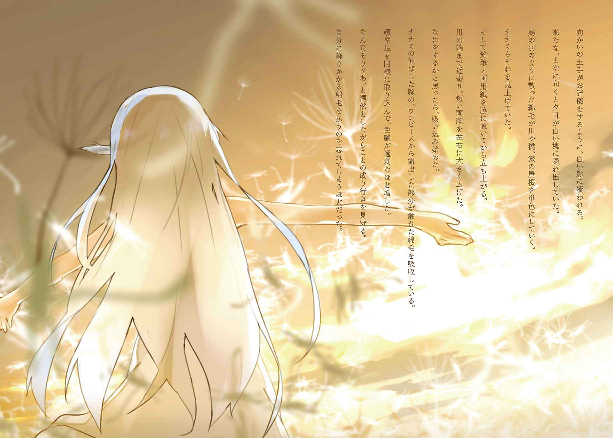
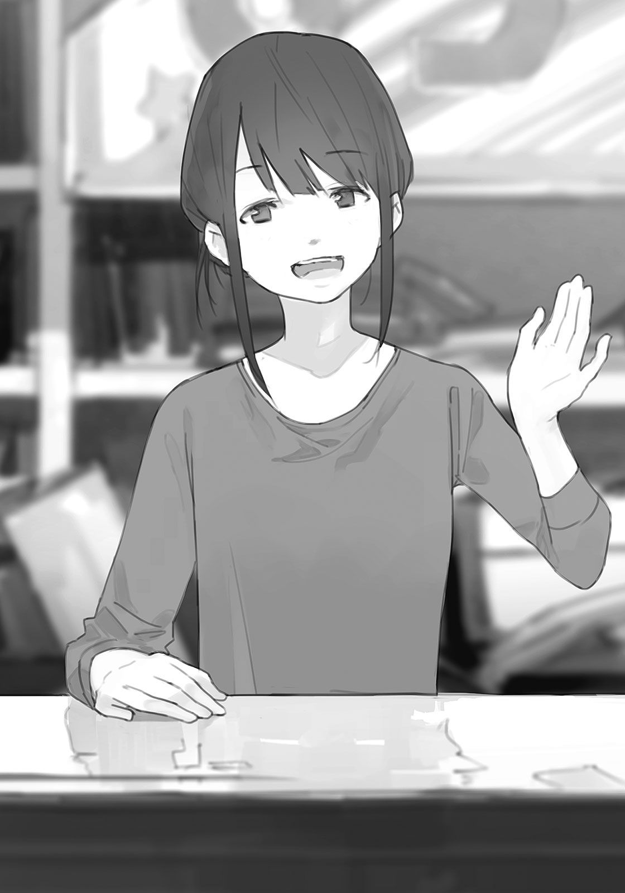

| ふわふわさんがふる | |
| 入間 人間 | |
| (2014) | |


本書（電子版）に掲載されているコンテンツ（ソフトウェア／プログラム／データ／情報を含む）の著作権およびその他の権利は、すべて株式会社ＫＡＤＯＫＡＷＡおよび正当な権利を有する第三者に帰属しています。
法律の定めがある場合または権利者の明示的な承諾がある場合を除き、これらのコンテンツを複製・転載、改変・編集、翻案・翻訳、放送・出版、公衆送信（送信可能化を含む）・再配信、販売・頒布、貸与等に使用することはできません。
帰り道に見上げた空が色濃く、これは今日も降ってくるぞと思った矢先に太陽に小さな影がかかった。輝きの星に無数の穴が空いたように、逆光で真っ黒に見える丸いものが空を漂う。
車いすの操作を止めて、道の途中でその様子を見上げる。少し遅れたように自動車もすべて停止して、町の音が沈む。街路樹が春の風に揺られると共に、太陽の黒点も動いた。
降ってくるのは、綿毛だ。
たんぽぽのように白く、丸い綿毛が無尽蔵に空から降ってくる。夕暮れの赤色と黄色の裂け目からやってくるそれが町中に降り注ぐ。その時間帯は自動車を運転するのは禁止となり、夕陽の優しくも寒々しい光の波と共に訪れる、綿毛の飛来を見守ることになる。
空を埋め尽くす綿毛の群れが地面に、家の屋根に降りかかる。僕が立ち止まった歩道も例外ではない。規則正しく植林された街路樹に雪のように積もり、地面も次第に白く染まっていく。
綿毛だから当たり前だがなんの音もなく、早送りの映像を眺めているように景色が無音で切り替わっていく。季節外れの雪に町が覆われていくようで、大変に薄気味悪い。
何度も何度も、下手をすれば毎日見ることにもなる光景に、僕は未だ慣れない。
綿毛の雨の向こう、夕方の空には早くもうっすらと、月も浮かび上がっていた。
今のこの星を宇宙から見れば、きっとあの月のように真っ白だろう。
「リッキィ、行くよ」
僕と同じく足を止めて綿毛を見上げていた犬に帰宅を促す。前の飼い主が名づけたのだが、呼ぶとすぐに自分のことだと分かるらしく、素直に歩き出した。車いすの車輪と、リッキィの細い足が綿毛を踏み潰す。降るときも、踏まれるときも一切の音がなく、たやすく溶ける。
車輪の舞い上げた綿毛の残骸が、羽のように僕の周りを踊った。
リッキィが綿毛に反応して遊びに行かないよう注意しながら帰り道を半分も進んでいると、いつの間にか綿毛は降り止んでいた。空を見る。太陽の周辺に浮かぶ緋色の雲は横長で、瞼のように光に重なっている。
その向こうに控える黄昏の瞳と見つめ合っていると、僕の瞳が同調を示すようだった。
こんな濃い空から降ってくる綿毛は、開花しやすい。
願わくは今回も、なにも蘇ったりしないようにと、祈った。
親と呼べる人は死んだ、姉も失った。僕と一緒に暮らす相手がリッキィだけとなってから二年が経つ。僕も車いすに乗る生活となってしまったが、今のところ不自由はない。リッキィは今年で三歳になるが、前の飼い主の躾が良かったのか僕の手を煩わせることもなかった。
家に帰ってリッキィの食事を用意した後は、車いすを降りて床に座る。リッキィが晩ご飯にかぶりつく様子を眺めながら、テレビのニュース番組を追っていた。さすがに降ってからすぐでは今回の結果を報道していない。テレビは点けっぱなしにして、リッキィの食事が終わるまで大人しく付き合った。
僕が暮らす家は、元は核家族で生活するための広さと目的を持って建造されている。故に僕とリッキィだけではその隙間を埋めきれない。レンコンの穴に蟻が一匹住み着くようなものだ。
家から出ると、窓から覗くと、まず見えるのは橋の根もと。僕と隣の家は橋のすぐ側にあり、川との境にある壁を少しへこませて、そこに埋まるように建てられている。だから右も左もほとんど隙間はなく、背後は壁。正面にある玄関と窓からは橋以外に見えるものはほとんどない。
二階のベランダまで上れば橋の向こうに建つホテルが見える。だけど車いすで生活する都合上、二階に上ることに不便以外のなにかを見出せない。隣の家に暮らしている女性も、夜中に自動車が橋を通る振動が背中に伝わってくることを不愉快だと話していたことがある。
僕としては、橋が遮蔽物となって夕暮れを覆い隠してくれていて、ありがたくて。
だから今でもこの家から離れようとしないのだけど。
ただ景色に面白みはないと思う。そのせいか、リッキィもあまり窓の外に目をやることがなく、暇になると家の中をさまよう傾向があった。その姿は目に強く印象づくものだ。
リッキィの毛並みは茶色だが、尻尾だけは赤色が混じっている。紅緋色というらしい。ふさふさで、振り回していると火の粉が飛び散らないかと思うときもある。そのリッキィが晩ご飯を早々に食べ尽くした後、僕の足もとにやってくる。足首を入り口とでも考えているように、まずその上に前足を乗せる。それから僕の反応を窺うように見上げてくるので頷くと、リッキィが足の上にやってくる。前の飼い主がそう躾けたらしく、このやり取りを欠かすことはない。
日が落ちてからはいつもこうして、リッキィと戯れている。僕は車いすに乗らないと上手く移動できないので、遊び方は限られている。とはいえ今のリッキィはお腹がいっぱいで一休みしたいらしく、膝の上に乗ってからは丸まって動こうとしない。
今日はもうさしたる用事もないのでそのまま、リッキィの背中を撫でて過ごした。
リッキィの毛は濡れたように柔らかく、そして暖かい。尻尾が時々はたはたと揺らめくと、本当に火が灯っているようだった。見つめていると、なんとも不思議な心地になる。
とろりと、目の奥にあるものが溶けていくような。不愉快じゃない生ぬるさを感じる。
そうしてしばらく時間が経って、窓の外が真っ暗になったのを見て頃合いかとテレビのチャンネルを変える。何度か回すと、今日の夕暮れの様子と、新たに誕生した『ふわふわさん』について報道しているチャンネルを見つけることができた。現段階で確認されて保護されたふわふわさんの顔写真は七枚で、スライドしていくそれを一通り眺めてから安堵する。僕の知っている顔はそこになかった。
「でも七人か......やっぱり多い」
やはり夕暮れの濃度と出現頻度には、因果関係があるように思えてならない。
夕暮れの映像も、上空から撮影しているものはまた趣を異にする。見上げた雲は海の波間めいていたけれど、上から見ると草原のようだ。黄金の海原を突き抜けていけば、黄金色の草原。自然の見せるものは太陽の角度のように様々に変化し、飽きさせない。そしてその草原を覆う暗い空の向こうから、灰色めいた綿毛が降り注いでは溶けていく。赤光の中に紛れても燃え尽きることはなく、染まることもない綿毛たちが、こうして僕らの立つ地面へやってくる。
テレビに映るこの中に、開花したふわふわさんも映っているのだろうか。
そして、雲よりも、空よりも高い先に。なにかが、あるんだろうか。
「.............................................」
報道番組が終わった後はテレビの電源を切る。それ以上はつけていても騒がしいだけだ。
これで起きていてもすることはない。寝ようと、準備を始める。
まずやらなければいけないのは、足の上でうたた寝しているリッキィを起こすこと。
「......えぇと。おはようございます」
そう前置きして身体を揺する。リッキィが少し大げさなほど頭を振って飛び起きる。いつものやり取りで、その次の反応もいつも通り。少し恨めしそうに僕を見上げてくるので、あまり起こしたくはない。しかし起こさずに足から下ろそうと試みて失敗して以来、お互いに妥協するしかない、と素直に起こすことにしていた。リッキィの背中を押して促すと、眠そうな顔のまま足の上から下りて、机の下に潜っていった。そこがお気に入りらしい。
車いすに乗った後、晩ご飯に使った皿を洗い場へ持っていく。元々は車いすで生活できることを考慮して設計された家ではないので皿を洗うにも腕を伸ばす必要があり、服の袖が濡れる。捲るのを忘れていた。まぁいいかと洗い物を終えて、流し場の電気を落とす。
廊下だけは車いすが通れるほど、初めから広かったのが幸いか。見回りながら、次々に消灯していく。暗闇でも、たとえ目を瞑っても慣れた場所なら滞ることなく移動できる。
そういうことを意識する度、ここが僕の家であると実感できた。
消灯を終えて、明日はなにをするか、一つ一つ確認してから目を瞑る。
朝まで覚えていられるだろうか。孤独な遊びを、少しだけ楽しむ。
この星にはふわふわさんという存在がある。
生き物かどうかは今のところ分からない。
夕暮れに降る綿毛。あれが開花することで、ふわふわさんとなる。だから敢えて表現するなら植物人間、といってしまえばいいのだろうか。意味合いが違うかもしれないが。
ふわふわさんに動物型はない。人の形をしてこの地に立つ。そして、ふわふわさんにオリジナルは確認されていない。すべてのふわふわさんは、失われた者の姿を真似して、存在する。
失われた当時の外見、年代を完全に再現するのが特色であり、厄介の対象となる理由だった。姿形は瓜二つで、けれど中身までは伴っていない。ふわふわさんには一切の記憶がないのだ。
ふわふわさんというのは俗称ではなく、正式な名称である。十年前、最初に降り立った少年型のふわふわさんが自らを『ふわふわさん３２２』と称したのが始まりだった。３２２というのはふわふわさんが降る前の『どこか』で割り振られた番号らしく、どのふわふわさんも必ず独自の番号を名乗る。そして身体のどこかに必ずその番号が刻印されている。その番号によってふわふわさんはそれぞれの個体の差を意識しているようだった。僕らにとっての名前と同じ価値が含まれているのだろう。
ふわふわさんがどこから来たのか。なぜ、降ってくるのか。なにも解き明かされていないし、ふわふわさん自身も語るほどの知識を持ち合わせていない。『あの世』というものからやってきた、というのが一般的な見解となっている。あの世というものに霊魂というものが管理されていて、それが遺体のデータを受け取ることで再現してやってきている......なんて、悪趣味な悪夢を信じている者も多い。
僕としては、過去の存在を真似てやってきている事実は否定する気がないけれど、いわゆる『よみがえり』なんてものはまるで信じていなかった。そんなもの、あるはずがないだろう。
あるのなら今頃、世界は死者の吐息で埋め尽くされている。
しかし世間は広い。意見も様々だ。
ふわふわさんの存在を崇拝し、希望を見出している厄介な連中がいる。そういうやつらに限ってこの世をある程度、好き勝手にできる立場にあるのだから迷惑なものだ。そいつらが生み出した最たる迷惑としてふわふわさん保護条例というものがあり、生まれたふわふわさんは、生前近しかったものが引き取らなければいけない。
そんな、とんでもない押しつけルールが存在する。引き取り手もいなくなっていたら、勝手に宛がわれるという、更なる迷惑を強制してくる。ふわふわさんを引き取ることでその分の生活費が支給されることだけが救いだ。しかし元から来ないのが一番である。
朝方、まだ眠っているリッキィを起こさないようにしながら外に出る。破損が未だ残ったままの橋の根もとを見つめた後、顔を上げると橋の向こうに色づく雲が見えた。朝焼けだ。
雲の端しか見えないけれど、快晴が広がり始めているのが分かる。
朝焼けは、夕焼けよりも光に赤みが強い。赤い火みたいで、なにかが始まるような、それとも、燃えて終わってしまうような。どちらの印象も等しくあって、複雑な気分になる。
そしてなにより朝、日差しが美しいと大抵、晴れ間が続くわけで。そうなると夕方、綿毛が降ってきてしまうということになる。綿毛は晴れた日に必ず降ってくるけれど、それがいつもふわふわさんという形を成すわけじゃない。根拠があるわけではなく統計を取ったこともないが、夕方の空の色を濃いと感じた日は大抵、開花する。その度に、僕は憂鬱になる。
目線を空から正面に落とす。破損を未だ修復していない、橋の根もとがある。
丁度、そこで潰れた姉は二度と帰ってこなかった。自動車との間で挟まれて潰れて、頭が僕の足下に転がってきたのを鮮明に記憶している。当時の姉は十一歳、僕は九歳で。
姉を大切なものだと思っていたから、つい、拾い上げて。
その頭の重さを、僕は今でも覚えている。どれだけ目を瞑っても、忘れられない。
橋の根もとに寄り、手を合わせる。橋の端（冗談ではない）には小さな白い花が、アスファルトを貫いて咲いている。そこに姉のなにかが眠っていると信じて、僕はその花を『墓』としていた。墓参りというものは近いところで行う方がいい。面倒に思わなくていいから。
あれから十年近くが経過していた。僕は十九歳となり、姉は永遠に十一歳だ。
その十一歳の姉が、得体の知れない中身にその皮を張りつけて、帰ってきたら。
「.............................................」
「おはよー、少年くん」
声をかけられる。振り向くと、隣の家から出てくるところだった。サンダルをぺこらぱこらと不規則に鳴らしながらやってきて、郵便ポストを開けたまま、女性が僕に微笑む。いわゆる、お隣さんというやつだ。
「いい天気だね」

「......そうですね」
この女性のことはクロさんと呼んでいる。本人がそう呼んでくれと言ったからだ。
僕と背丈は変わらず、長い髪を首の後ろあたりで花のように纏めている。流水のように髪から肌、足下まで流れる艶を感じさせる。まだ寝間着で、足下は便所サンダルだった。
そのどちらも橙色の系統で、好みが出ていた。
「リッキちゃんも元気？」
「ええ、まぁ」
名前を間違えているけれど訂正はしない。したところで覚えてくれないことは学習済みだ。
「元気もなにも、ほとんど毎日見ていると思うんですけど」
「そうなんだけど、飼い主さんにしか分からないこともあるよ」
年上らしい、抽象的な発言をしてくれる。苦手だが、意味のある会話と思って受け止める。
クロさんはふわふわさんに対して好意的なところ以外、僕より素晴らしいと感じる。
郵便ポストを開けて「入ってないか」とクロさんが呟く。昨日もそんなことをしていた。
「新聞、まだ来てないんですか？」
「んー......最近来なくなっちゃって。どっか行っちゃったのかな」
そんないい加減な。ここに配達に来ているのは確か、ふわふわさんだったはずだ。
いきなり現れるものがいきなり消えたとしても、不自然ではないな。
「そうかもしれませんね」
契約料とかいいのだろうか、と思ったけど僕は取っていないので適当に流した。
なんにせよ、会ったなら丁度いい。「少し待っていてください」と呼び止めてから家に引き返す。廊下に上がって居間を覗くとリッキィも起き出して机の下から出てきていたので、「おいで」と手招きする。リッキィは頭と尻尾を振った後、大人しく僕の側に寄ってきてくれた。
聞き分けの良い子だ、と常々感心する。すべて前の飼い主の手柄だ。
そのままリッキィを伴い、外に戻る。クロさんは寝間着の捲れた袖を直しながら、空を無防備なほど大きく見上げていた。道の真ん中に立っていて、姉の最後を思い出してしまう。
姉もそうやって、空を見上げていて轢かれてしまったのだ。
まぁ、そうしていたからこそ頭だけは原形を留めたのかもしれないけど。
晴れ間に暗いものを感じていると、クロさんがこちらに気づいて顔を下ろす。完全にこちらを向いていることを確かめてから、リッキィの背中を押して、クロさんの足下へ向かわせた。
リッキィも慣れたもので、素直に動いてくれる。
「今日もお願いします」
「うん。一緒に帰りを待ってるから。ね、リッキちゃん」
クロさんが笑顔で呼びかけるも、『そんな名前じゃねーし』とばかりにリッキィは無反応を決め込む。僕が言えたことじゃないがリッキィはもう少し、愛想をよくしてもいいのではないか。
僕が仕事に出かけている間は、クロさんにリッキィを預けることにしている。リッキィが賢いといっても犬である。自分で何でもできるわけじゃない。以前に一度、準備しておいた食事を時間になると用意してくれる餌皿を買ってみたのだけれど、食べた形跡がなかった。どうもリッキィは食事に手をつけないで、僕の帰りを待っていたらしい。それ以来、申し訳なくなってクロさんに任せることにしていた。クロさんはどこかに出かけることもないので、安心して任せられる。クロさんは仕事に就いていないのだ。
「じゃ、行ってらっしゃい。姉さんによろしく」
クロさんの応援に答えながらも、顔を背けてから小声で呟く。
「あなたとはもう一回、すぐに会うようなものですけどね」
家の前を離れて、壁沿いに回って坂の付け根に行く。緩やかな坂を上って橋の上を目指す。車いすで坂を上るのは相応に苦労するけれど、下の道ではかなりの遠回りになる。急いではいなくとも極力、坂を上ることにしていた。手間よりなにより、時間を節約したい。
橋の上に出ると、今までは雲しか拝むことのできなかった朝焼けが僕を包む。既に往来する自動車も同様に、本来の車体の色を侵食されて赤色の線が走り抜けていた。これで東の空に上っていなければ、綿毛が降ってくるのではと警戒してしまいそうになるほどだ。
その光の線に身体を染められるものがある。僕と、そして、ロケットだ。
橋を上るといつも見えてくるのだけれど、町外れには崩壊した都市の残骸と、その離れの飛行場に残ったロケットがある。飛行計画が失われて取り残されたそれは船体が苔むして、軋む度に悲鳴のような音を漏らして、傾き。しかし製造から八十年近くが経った現在も尚、空を見つめ続けていた。僕もまた、橋の行き来の度に目をやり、ロケットと共に空を思う。
そのロケットを含めて広がる朝の景色はあまりに鮮やかで時々、作り物の景色が紙芝居のように切り替わっているだけなのではないかと思うこともある。立ち止まって、そんなことを考えて。それになんの問題があるのか、と無意味な思考であることを理解してから車輪を前進させる。何度、そんなことを繰り返しているのか。朝日の照りつける橋はいくら進んでも終わりを見せず、距離感を失い、どこまでも続いているような気にさえなった。しかしそれは所詮錯覚で、やがて、橋は下り坂を迎える。
橋を越えて町を行く。歩道を進むとき、道を空けるように端へ寄ってくれたその人影は髪が綿のように白い。信号待ちの中に紛れている頭も、ビルの二階から顔を覗かせているのも、白い頭だ。ふわふわさんは共通して髪が真っ白で、町中で見かければ意識しなくとも目に留まる。
ふわふわさん以外で、意識して髪を白くしているやつなんていない。ふわふわさんに間違えられるというのがどういうことかと考えれば、リスクを避けたいと思うのは当然だ。
それぐらいに社会に浸透した存在だけれど、反応は様々だ。僕のように抵抗があるもの、もっと大々的に嫌うもの。崇拝するもの、共存を訴えるもの。
停滞する社会に活気が出た、と捉える人もいるけれど。無用な論争の火種となっているとは、考えないのだろうか。ふわふわさんが降り立つために社会は混乱を招き、今までの生活を変えなければいけない者だっている。放っておけないといっても世話をしなければいけないなんて少々、過保護じゃないだろうか。彼らに生きる意志があるなら、自分でなんとかするはずだ。
「......王国とか、勝手に作られても困るけどさ」
そういう点では管理するのも間違いではないだろう。市の方でやってくれよ、と思うけど。
朝焼けの消える頃、僕は職場の前に辿り着く。潰れたレンタルビデオショップを改装もせずに使い回していて、『ＵＳＡ』とマスタードのように黄色い看板がでかでか飾られている。その近くには同じくどぎつく黄色い流れ星が降り注いでいた。当たり前だがアメリカは関係ない。
中に入ると、正面の受付に座っていた女性が僕に向けて手を振ってきた。
「はーい、少年くん。いい天気だね」
「......そうですね」
クロさんとまったく同じ顔が出迎えてくれる。挨拶も大体一緒だ。
そっくりだけど生まれた時間が異なるので双子ではないらしい。こちらは無垢さんという。区別の付け方は......いる場所かな？
クロさんはお隣さんで、無垢さんは職場のお偉いさん。そういう風に判断している。なにしろ見た目は瓜二つだし、性格もほとんど差がない。ただ私服の好みは違うらしく、無垢さんは赤色の系統で統一していることが多い。レッドにクリムゾン、バーントシェンナという調子だ。
赤色と橙色なので、時々色合いがかぶる。そうなると本当にお手上げだった。
「クロは元気？」
「ええ。よろしくと言っていました」
クロさんと無垢さんは一緒に暮らしていない。仲が悪いわけではなさそうだけど、色々あるのだろう。僕はそうした色々を持たないからこそ、誰にも深入りしたくなかった。
未だ残るビデオの棚の間を抜けて、奥に入る。元は視聴室だったそこを個室として、僕の仕事は始まる。身体を振れば腕の先端が壁に引っかかるような狭い空間で、白地に黒い水玉の模様が目をちらつかせる。室内は陽光が差し込む窓もなく、灯りも心許ないために薄暗い。
電源を引っこ抜かれたテレビは沈黙して、卓上ライトだけがその隣で機能している。点けて、既に用意されている鉛筆を握る。筆とどちらを取るか迷ったけれど、今日は鉛筆の気分だ。
「......蝶。蝶だな」
目を閉じた先に見えた赤紫の蝶を、束になって用意された画用紙に描き始める。
車いすから離れられないことで必然、仕事の幅は狭まる。学校を出てさてどうしようと悩んでいた矢先、クロさんに紹介してもらった仕事がこれだった。クロさんも以前に勤めていたという、無垢さんの店だ。僕はこの仕事場で、一日五十枚の絵を描く。
前回とかぶっていても、どれだけ陳腐でも構わないのでとにかく五十枚分の絵を描くのがノルマだった。描ければそれで仕事を切り上げていい。できなければ、明日になっても帰してくれないと初日に脅された。今のところ、そういう困った事態に陥ったことはない。
不思議だけど、目を瞑ればそこにはいくらでも思い浮かぶものがある。アイデアに伴って技術があるわけではないので稚拙な絵を並べ続けることしかできないけれど、『それでいいのよ』と無垢さんに笑顔で言われたので、これでいいのだと割り切ることにしていた。
これにどんな意味があるのかは、一年近く続けているけれど未だになにも見えてこない。描いた絵はすべて無垢さんに渡しているけど、どういった活用がされているかも尋ねたことはなかった。分かるのは、これで生活できる分の賃金が与えられている、という事実だけだ。
昼食と少し早い夕食がついていることも含めて、十分すぎた。
鉛筆で蝶の羽を描いた後、羽とその模様を色鉛筆で埋めるように塗る。赤紫の羽に、斑点は黒色。最初は直角で、長方形の羽を描いていたわけだから、それと比べれば丸みが出てきたと進歩は感じる。けれど町の景色やリッキィと見比べれば、いかに幼稚な絵かよく分かる。
この世にあっていいものではない。本当は破り捨てたいが、リッキィの元にも帰りたい。
「.............................................」
『絵は上手くなくていいのか』『おっけー』
『上達するはずがないぞ』『おっけーぃ』
『ではこの絵はなんでしょう』『カレー！』『黄色い猫だ』
仕事を受ける前にこれだけ念押ししたうえで任されているのだ。
出来映えについて、深く思い悩まないように努力しよう。
塗り終えた後、蝶以外に思いつかなかったので、この絵はこれで完成だ。
画用紙の真ん中に大きいとは言えない蝶が一羽。空白ばかりで見ていると落ち着かない。しかし無理に書き足して調和を取るのは画家の仕事だ。僕は、芸術家ではない。
蝶の絵を横に除けて、次の画用紙を取る。
「次は......どうしようかな」
目を瞑ったら、姉が見えた。今思えば細く、薄く、それこそ僕がぶつかっただけでもバラバラになってしまいそうだ。肌は貼り方を失敗したように不健康に白く、動く度にべこべこと色んな場所が骨格に沿ってへこんでしまいそうな......出来の悪さのようなものを持っていた。
多分、僕が一番描いたのはそんな姉だろう。
「.............................................」
しゃっしゃっしゃ。さささ、ざざー。
一番描いても姉が姉らしくならないあたり、頭と腕の繋がりが希薄であると知る。
特に頭の重さが、まるで再現できないことが不満だった。
部屋の時計が夕方を示し始めた頃、五十枚の絵を丁度描き終えた。
鉛筆を握っていた右手の側面が、いつの間にか真っ黒だ。
「......今日は、丸いものとか......そういうのが多かったな」
成果を振り返って感想を呟く。なぜか日々、絵の傾向が偏る。といってもバランスよく、と注文されたところでどういった絵を描いていけばバランスなんてものが取れるというのか。
道具を片づけてから、纏めることもなく絵を掴んで部屋を出た。
部屋から出て表に回ると、無垢さんが受付に頬杖をついて、窓の外に目をやっていた。
黄昏を吸い込んだ瞳は暖かい色調でありながら、どことなく寂寥も覗かせている。
「少年くん、いい天気と思わない？」
「そう、かもしれませんね」
僕は外を見ないままに答えた。無垢さんが向き直り、僕の差し出した成果を受け取る。
「お疲れ様。今日の分も楽しみにしているよ」
しなくていいです、と手を横に振る。
「こんなの、仕事でいいのかなって。時々思います」
「いいのいいの」
無垢さんが笑顔で流してしまう。しばらく眺めて、じゃあいいかとそれを受け入れた。
もしまずいのなら、いつか問題が僕の前に立ちふさがる。そのときに対処すればいい。それでは手遅れだとしても、後悔するのは未来の僕だ。それは今の僕じゃない。
最後に挨拶してから、微かな解放感と共に店の外に出る。
外には無垢さんの瞳の色と同じものが、町を染め上げていた。
朝焼けが消えぬまま職場を訪れて、仕事を終える頃には夕焼けが迫る。
僕の一日は、空が焼け続けている。永遠の黄昏を生きるようだった。
あぁ、今日も夕焼けが赤い。目に染みいって、そのまま押し潰されるようだ。
今日も綿毛がやってくる。ふわふわさんが生まれるのだ、と予感する。
ふわふわさんが降るのは特定地域だけと聞く。その地域には海も含まれていて、ということは開花してもそのまま海に沈んで、息絶えて散っていくふわふわさんもいるのだろうか。なんて想像したことがある。そしてそこでまた新たな疑問に行き着くのだけど、彼らに死というものは訪れるのだろうか。ふわふわさんに生死の概念があるのかすら、僕は知らない。
町で見かけても極力近寄らないようにしているし、情報も必要以上には集めないことを徹底していた。関わればそれだけ、ふわふわさんとの距離が縮まってしまいそうだったから。
柳通りと呼ばれる市内の中央街も昔と違い、早々に下りているシャッターが目立つ。郊外にできたショッピングモールに客の流れを吸い取られて、残るのは干からびた抜け殻のようだ。
その抜け殻を埋める灰のように、やってくるものがある。
夕暮れが白色に染まる時間だ。
はらはらと、降ってくる間に頭が散ってしまいそうな綿毛が町を包む。
僕の隣で信号待ちしていたふわふわさんが、黄色い傘を差した。
横断歩道は青だったけれど渡る前に車いすを停止させて、安全確認する。頬の横をくすぐるようにすり抜けた綿毛を手で払い、自動車がしっかりと停止しているのを横目で確かめてから横断した。
そのまま霧のように視界を不確かなものとする綿毛の中を進み、橋の根もとまで来ても、まだ降っている。今日はいつもより降綿......といえばいいのか......時間が長い。雪のように積もってしまわないかと心配になるぐらいだ。
穴だらけの白雲の向こうに、僅かな赤光が見える。赤い血潮から、真っ白な仮初めの生命が生まれる。遠い星の果てで大きな動きがあるのかもしれない。ふわふわさんを宇宙からの侵略者と断定するような団体もある。僕は、そいつはないだろうと思っているけど。
宇宙人がなぜ日本語を覚えてくるのか。地球語は英語だろう。
自動車が停まり続けて渋滞を作るのを尻目に、黄昏の帰路を行く。自動車が禁を破ることなく停止しているのを、どこか歯がゆく思う。
十年前、初めて綿毛が降り始める前にそんなルールが存在していたら。
「......無理か」
多大な事故という事実がなければそんなルール、誰も思いつかない。
橋の帰りにも当然、ロケットはある。綿毛に包まれる空に向けて打ち出せば、ロケットはその厚く白い景色の向こうになにを見出すのか。興味はあったが誰も整備していないそれが飛び立つ日は永遠に訪れない。綿毛よりも儚い存在が、彼方の鯨のように鳴き声をあげた。
日の沈みと共に坂を下ると、途中でようやく綿毛が降り止んだ。車輪との間で散っていく綿毛が、空を目指すように再び舞い上がり、けれど僕の頭を越えたところで力を失い、消失する。
この綿毛一つ一つが魂の欠片だなんて、寝言を言うやつもいる。
魂なんてあるものかと、車輪で挽き潰す。
坂を下りて家の前に来ても、道路は綿毛で埋め尽くされていた。破損して欠けたままの橋の根もとも、そのくぼみに綿毛が埋めこまれているようだった。
姉の墓標代わりである場所を、感傷じみたものを伴いながら眺めて。いると。
いると。
「.............................................なん、だ？」
手のひらに綿毛が降る。もう降り止んだはずなのに、と空の様子を見上げようとすると、次々に綿毛がやってくる。気づけば周囲の綿毛が舞い上がり、僕の手の上に集おうと動いていた。
なんだこれは、と慌てて腕を振り、綿毛を振り払う。
するとその振り払われた綿毛を中心として、道路を埋めていた綿毛が渦を巻きながら集っていく。
今度は僕の側を、車いすの間をすり抜けて、橋の根もとへと集合する。
ディスクのように円盤状を描く綿毛の中心から、次第に迫り上がってくるものがある。こんな現象、僕は知らない。目にしたこともない。まさかこれが、と驚愕に目を見開く。
迫り上がる白い塊に、背筋が生まれる。その背を仰け反らせて、綿毛を散らせながら突き出てくるのは二本の腕だ。ついで綿毛を削り取るように、塊から頭部が形作られる。
その頭部に唐突にぎろりと、光なき目玉が生まれて動き回る。口のあるべき場所に、額に、好き勝手に暴れた後、ようやく本来の位置を理解して収まった。そしてそのまま口、鼻と生え揃うと、両腕で地面を押すように、綿毛を掻き分けて身体が外へと出始めた。
散り続ける吹雪のような綿毛と共に、身体が綿毛の絨毯から生えてくる。苦しそうに真っ白な歯を食いしばり、瞳は瞼がないように大きく出張る。圧倒されたままその一部始終を眺める中で、不安ばかりが加速度的に膨れあがっていく。まさか、まさかと、予感して。
遂に足の先まで外に出て、世界に降り立つ。綿毛のベールが剥がれて、完全な人型を晒す。
『ふわふわさん』が、生まれる。
こうやって、これが。ふわふわさんの、生誕なのか。
綿毛の回転が止まった、その中央に立つ人影。
降り注ぐ赤光によって燃え立つように映る髪を揺らして、その奥に覗かせた顔。
「......ね、ぇ」
目が合った瞬間、僕は戦慄の余りに逃げ出す。車いすを無理矢理に操作して、扉を開けたところで半ば転倒しながらも家へと飛び込む。背中を痛めるほど身体を反らして強引に扉を閉じて、鍵をかけて、そして床に散らばる綿毛を握りしめる。
玄関に倒れ込んだまま握り拳を作り、肩を怒らせたまま硬直する。
現実はきっと、まだ扉の向こうにある。
けれど開ける勇気はなく、思考のノイズに延々、苛まれ続ける。
「あれは、」
あれは。見間違えるはずもなく。
十年前に僕の世界から失われた、ねえさんだった。
悪夢は真っ白だった。短い手足、十一歳の頭、顔立ち。白く細く、僕の姉だ。
頭の中で思考が延々と空回りを続けて、その音が聞こえてくるようだった。
玄関で茫然自失になっていると、表のチャイムが鳴る。びくりと、振り向く。四苦八苦しながら身体を起こし、車いすに座り直して、恐る恐る出てみると。
黄昏を背中に背負った、見知った顔があった。
「......クロさん」
「今日も良い天気だったね、おかえり」
姉ではなかった。夕日の欠片のように色づく、クロさんとリッキィだった。
「リッキちゃんが帰りたがっているから、少年くん帰ってきたのかなって」
「あ、そうですか。それは、どうも」
クロさんから手渡されたリッキィを抱き留める。リッキィの背を撫でながらクロさんの後ろを覗くと、既にふわふわさんの姿はなかった。渦巻く綿毛だけがそのまま道路に残されている。
「じゃあね、おやすみ」
随分と早い挨拶を残して、クロさんが隣の家に帰っていく。
扉を閉じて、その隙間から少しだけやってくる、針のような夕日。
そしてリッキィに、一日の終わり。
すべてがいつも通りだった。衝撃も次第に、僕を置いてどこかへ消える。
本当に、姉の姿なんて見たんだろうかと。現実逃避できる程度に回復する。
僕の恐怖が立体的な幻を見せた、記憶の誤作動のようなものだ、と期待する。
「そうに違いない」
しかし日が沈んで、いつものように点けた夜のテレビには無慈悲にも、今日のふわふわさんとして姉の顔が映るのであった。姉がテレビに映っている。奇妙で、遠い。
テレビそのものが壁に紛れた背景のように薄くなっていくようだ。
「......さすがに、無理があるか」
見間違いでも、幻でもないのだ。
ふわふわさんは、そこにいた。
「今日は三人か......ふぅん、へー」
もう続きを見る価値はなかった。これからは、夕方のテレビにもかじりつく必要はない。
やることがまた一つ減って、自分がなぜここにいるのか曖昧になっていく。
テレビの電源を切ったままリモコンを握っていると、チャイムが鳴る。
「.............................................」
リッキィは既に膝の上にいる。
今度こそ逃げ場はなさそうだった。覚悟を決めてリッキィを退かせ、玄関へ向かう。
相手を確かめもせずに鍵を開けて、外に立つものと対峙した。
来訪者の影は二つ。一つは温和そうな黒い影。もう一つは、夜に背く白い影。
恐らくは保護した役所の係員と、そして、見慣れた顔のふわふわさん。
迷子の姉が家に帰ってきた......とでも、思えばいいのか？
結局、この家にやってくるのだ。僕が逃げ出して扉を閉めても、悪あがきでしかなかった。
係員が、ここで間違いないですねと確認を取ってくる。間違いです、と言いたいけど。
「......そうです」
認めるほかなかった。姉と同じ眼差しに、見つめられていたから。
係員が着せたのか、見かけたときと異なり真っ白なワンピースを着ている。
服を着ると、より昔に近づいて。姉だった。
頭が真っ白になったまま、気づけばみんな居間に上がっていた。
動揺して感覚が麻痺しつつある僕と異なり、ふわふわさんを連れてきた男は淡々と処理を済ませている。男は後日、引き取り手続きを済ませるために役所へ来いと一方的に言い放ち、それ以外に一切の慈悲を僕に与えることなく去って行った。悪夢だけが家に取り残される。
ふわふわさんの、ガラス玉めいた瞳が僕を正面から見据えていた。
悪意や敵意を感じない。しかし、友好も持ち合わせているとは思いがたい。
「......ねえ、いや」
見つめていると思わず、昔の呼び方が出かけて。慌てて口をつぐむ。
相手は黙ってなにもしていないのに、一方的に参ってしまいそうだった。
「.............................................」
腰にまで届く長髪、燻った青色の瞳。薄い唇は照明や周囲の色合いの関係か、暗い緑色がうっすらと塗られているように見える。暖かみのない肌が、子供特有の幼い頬の輪郭と不釣り合いだ。それは僕の抱いていた姉への印象そのもので、余計に重なるものがあった。
左の髪を耳にかけているのも同じで。それと頭を重そうにして少し前屈みなのも一緒だ。
たった一つだけ違うのは髪の色。僕が知る姉は黒い髪だったが、目の前にあるのは正反対。たんぽぽの綿毛のように隙間だらけに感じる、灰色の混じった白色だ。髪の生え際から先端まで同じ色であるにも拘わらず、どこかちぐはぐに見えて仕方ない。触れれば、ばらばらに崩れていくような。そして髪の色が違うと、そこだけに注目していれば印象も少しは薄れる。
姉と得体の知れないものがかぶるなんて、冗談ではなかった。
一刻も早く、姉との相違点を多く見つけなければいけない。
まず絶対に違うものは......そう。名前だろう。
「名前は？」
ふわふわさんが透き通るように儚い睫毛を震わせた後、
「ふわふわさん７７３」
名前とは思いがたいものを、名として用いた。個体名、７７３か。
その刻印は首にあった。姉が失った首に、番号......。偶然にしても、嫌な符号だ。
このナンバーが他のふわふわさんとかぶることは、不思議としてないらしい。
７７３、ななななさん。ナナミとも読める。そうなると姉の名前と同じだ。きっと、こいつも偶然だろうけど。嫌なものだ。何度も呼んで何度も連想していたらいつか、目の前のこいつをナナミと認識してしまうかもしれない。それはとても、そう、とても受け入れられない。
「声まで、一緒なんだな......」
どういう仕組みなんだ。声を聞き続けていると、夢うつつとなり頭がおかしくなりそうだ。
だからとにかく、淡泊に接しようと。見つめあいの時間を破棄した。
「部屋を、案内するから」
なにを喋ればいいのか分からず自然、ぶっきらぼうな調子となる。意味は伝わったらしく、ふわふわさんが僕の後についてきた。リッキィは机の下に隠れたまま出てこない。
廊下を緊張しながら移動して、普段は見向きもしない階段の前へとやってくる。掃除はしてあるけれど誰も近づかないためか、埃が宙を漂っていた。後ろを歩くふわふわさんはやはり少し前屈みで、つつつ、と足を細かく動かしている。......なんで斜め向いて歩くんだ？
薄暗い階段の上を指差す。
「二階を好きに使ってくれたらいいよ......」
ふわふわさんが説明の途中あたりから階段を上り始めていた。跳ねるような、軽薄な足取りと音を伴って二階へ上がっていく。昔は姉と僕の部屋が二階にあった。姉を失って歩かなくなって以来、覗いたこともない。
記憶をなぞるように階段を上がるその姿は、まさに亡霊のようだ。
亡霊の方が、どれだけよかったか。霊なら確かに姉なのだから。
「......霊の方がよっぽど、あり得ないけどね」
しばらく待ってみたが一向に下りてこない。なにをしているんだろう。ふと思い立って玄関へ向かい、外に出る。左右を確認してから道路の真ん中まで出て家の二階を見上げると、ベランダにふわふわさんの姿があった。手すりを掴みながら、夜空を見つめていた。
夜の深まりの中で、その綿毛の頭が月のように淡く輝く。僕には気づいていないようだ。
なにを見て、なにが見えているのか。下から覗く姉の顔は、轢かれたときと変わりない。
僕が抱えた頭と、同じ顔つきだった。
「.............................................」
道路の綿毛もすべて溶けていた。不可思議な現象の名残もなく、夜は静かに、深い。
綿毛はこの夜の闇に吞まれてしまうのではないかと、少し思う。
「さて」
家に入る。居間で寝転がっているリッキィを一瞥してから、「さて」ともう一度呟く。
次にやることは、いつもなら夕飯の準備だけど。今夜はリッキィの分だけで済まない。
ふわふわさんが生き物か知らないが、食事は必要だと聞く。料理か......僕に相手を満足させられるだけのものが作れるだろうか。誰かに作ったことなんてほとんどない。
できなかったとしても代わりに誰がやってくれるのか、という話である。
「......仕方ない。やってみるか」
材料は係員からの心ばかりの差し入れから選べばいいだろう。長く使っていなかった包丁は保存がよかったのか幸い、目立った錆びもない。久しぶりに出番の訪れるまな板を洗ってから、包丁を握る。刃に映る自分の顔と向き合い、状況の異質さを改めて認識する。
姉の食事を作る。一度として考えたこともない、あり得ない状況だった。
僕は生まれてからずっと、姉の庇護下にあった。だから想像すらするはずもない。
「......姉じゃない」
そうじゃないと、分かっていても。手を抜くことはできなかった。
切ったものをじゃんかじゃんか炒めて、ざぱーっと調味料を垂らす。これでいいのか、順番間違えたんじゃないかと頭の冷える思いをしながらも料理、らしきものを作り上げて皿に盛る。
「......僕の絵に似ているな、この料理」
勿論それは、褒め言葉にならない。リッキィの餌皿と一緒に運んだ。
居間に大人しく座っているリッキィの前に皿を置いて、それから......二階のふわふわさんを呼びに行く。階段の下に向かい、口の横に手を添えて。そこで、なんと呼べばいいか戸惑う。
「......おーい」
反応がない。
「おーい」
反応がない。皿から立ち上る湯気が顔にかかり、蒸れて、やけくそになる。
「おぉおぉおおおうううぃ」
長々と叫ぶ。これで来なかったら無理にでも階段を上ってやる、と意気込んでいると、ひょこっとふわふわさんの顔が飛び出してきた。階段の上から頭だけ出てこちらを覗いている。
「あっと、あの夕飯」
皿を指差しながら及び腰で用件を伝える。するとふわふわさんが匂いにつられるように下りてきた。心なしか上るときより軽快だった。......空腹なのだろうか？ 僕の横を軽快に駆け抜けて、台所の席に勝手に座る。奇しくも、姉が座っていた場所と同じだった。
そうして大人しく座ったふわふわさんの前にも、皿を置く。こちらは皿の差し出し方が、なんともぎこちない。思うところが多すぎて我ながら情けなかった。
ふわふわさんが皿を覗き込んで固まる。見つめたまま、動こうとしない。
「......食べないのか？」
せっかく苦労して作ったのに。それとも食べ方すら分からないのだろうか。
保護は不本意ながら認めるとしても、教育は義務の範疇外だ。
などと煩わしく考えていると、ふわふわさんが顔を上げる。
その眉根が少し寄っているように見えて。感情もあるんだな、と驚いていると。
「ふわふわさん７７３は目の前の固形物を食事と認めない」
「......黙って食えこの野郎」
僕は確信する。姿形こそ、そのままだが。
こいつは、僕の知る姉ではないと。
朝方が訪れて、ぱちりと目を開く。指先が多少震ていたが、それ以外は良い目覚めだった。
車いすに乗って部屋から廊下へ出る。廊下の窓から外の景色が......なぜだ？ カーテンは閉めてあるはずだが。窓を前にして止まり、原因を考える。そしてすぐに思い当たった。
この家には僕とリッキィ以外に、生活する者が増えたのだ。レンコンの穴が詰まるイメージを想起しながら、その姿を探す。勝手に家の中を動かれるのは、なんとも微妙だ。
いい目覚めがあっという間に曇る中、家の中を巡ると居間に入って、ギョッとする。
バカでかい綿毛がふわふわと宙をさまよっていた。
僕の頭よりも大きく、ケセランパサランどころの話ではない。浮かぶそれが壁に引っかかり、行動の自由を失う。ふよんふよんと、木の枝に留められた風船のようだ。
「......なにこれ」
僕の声に反応したように綿毛がこちらを向く。向くもなにも正面なんて概念があるのか、と驚愕していると綿毛を撒き散らしながら、人型が誕生する。ふわふわさん７７３が精気を感じられない瞳で、僕を見つめていた。......巨大な綿毛になったり、人型になったりできるらしい。
そんな能力、ふわふわさんにあっただろうか。
そして戻るのはいいがその際、大量の綿毛を撒き散らすのはどういう理屈なんだ。
しかもその綿毛は夕暮れに降るそれと違い、一向に溶けてなくなりそうもない。
「......なにか言うことはないか」
「ふわふわさん７７３は栄養を摂取する必要がある」
空腹を訴えてきた。綿毛の化身であるように思えるのに、腹なんてどこにあるのだろう。
謎だ。戻る原理も、そもそも戻って漂うことに何の意味があるかも、なにもかも理解できない。そしてせめて、戻る場所を選べと散った綿毛を掃除しながら言いたくなる。リッキィの方が、よほど躾が行き届いていた。
そのリッキィはいつのまにか起きて僕の足に尻尾を撫でつけて、朝ご飯を要求している。「今作るよ」とリッキィの背中を撫でて答えていると、ふわふわさんの目もまた、リッキィに向いていることに気づく。その目に、犬はどう映るのだろう。
「犬だよ。名前はリッキィ」
紹介してみると、ふわふわさんが屈む。リッキィはいつもの好奇心を発揮してか、首を伸ばしてふわふわさんに鼻を近づけている。ふわふわさんが犬に害意を持って接したら、と不安を抱えながらその接触を観察していると、その頭がぶんすか回り出した。ぶんぶん振って、しゃかしゃか振って。そうすると次第に、身体の各所から綿毛がふわふわと舞い始める。
なんだそりゃあ、と目を見開いているとふわふわさんがその綿毛を次々に摘む。箸で蠅を掴むような小器用さでまたたくまに綿毛を纏めて、小さい花束のようにしたそれをリッキィに差し出した。
まさかとは思うが、お近づきの印なのだろうか。嬉しくないだろうそんなもの、と僕は呆れるのだがリッキィは喜んだように尻尾を振りながら鼻の上に載せている。まるで積雪を喜ぶ柴犬のようだ。大して知らないやつに懐くなんて、と眉根を寄せるがそもそも、僕のときもリッキィは警戒心がなかった。自分を特別視するわけではないけれど、ふわふわさんと同じ扱いなのかと思うと脱力してしまう。これでも何年か一緒に暮らしているのに。
ふわふわさんとリッキィがじゃれている間に台所へ向かい、朝食を用意する。今朝はリッキィと同じように、ふわふわさんにも既製品の食事だけを与えることにした。これで文句はないだろう。リッキィみたいにふわふわさん用に調整された食料品というものは売っていないのだろうか。今日、スーパーでも覗いたときに探してみよう。
......しかし、そんなに僕の料理は規格外だろうか。自分としては悪くないと思うのだけど、味を判別するのは相手の舌だからな。ふわふわさんの味覚なんて特に想像もつかない。
用意した食事を居間に運ぶと、リッキィが走ってきた。その後にふわふわさんが続く。ふわふわさんは机の上の料理を一瞥して、「上達した」と無表情なお褒めの言葉を進呈する。それは褒めていない、皮肉という。そっぽを向いていると、勝手に食べ始めた。
箸が使えるんだな、と姉との違いに注目して気を紛らす。
眺めていて、姉とかぶって見えないよう努めた。
気詰まりする（僕だけかもしれないが）食事を終えてから、出かける準備を始める。日は昇るし仕事は来る。昨日なにがあろうと今日の仕事が免除されるわけではない。
家の中を回って戸締まりやらを点検していると、後ろをついてくるやつがいた。
振り向いてみるとなにか言いたげで、僕は言い淀みそうになりながらも聞いてみる。
「なに？」
「ふわふわさん７７３に挨拶を教える必要がある、と提案する」
「挨拶？」
独特の調子でお願い......されたのか定かじゃないが、ふわふわさんが話を続ける。
「出会えば挨拶をすることは知っている。挨拶はどうすればいい？」
偏った知識だ。どこでどう、誰に学んできたのやら。
ふわふわさんを専門に研究している連中はいつになったら、それを突き止めるのか。
「おはようございます......で、いいんじゃないかな」
「おはようございます」
バカ正直に真似する。それは構わないけれど、姉に物事を教えるなんて、なんとも複雑な気分だ。......姉じゃないけれど。気を抜くと、相手を姉と捉えてしまいそうになる。
その外見はちょっと卑怯だ。
「......さて」
仕事に行かなければいけないのだけど、ふわふわさんをどうしよう。
リッキィと一緒にクロさんに預けた方がいいだろうか。......悩んで見つめていると、どう解釈したのか頭を振って綿毛を撒き散らし、また花束代わりに纏めて僕に差し出してきた。
「......ありがとう」
受け取りながら、預けた方が良さそうだと判断する。放置していたら家中が綿毛まみれになってしまいそうだった。リッキィも含めて、「ついてきて」と外へ連れて行くことにした。
玄関では、ふわふわさんは棚の下にある姉の靴を発見して、当たり前のように引っ張り出して履く。その動きが自然で、咎める言葉も出所を失う。足のサイズはまったく問題ないようだ。
そのふわふわさんから視線を感じる。視線は時々足下や棚の下にも逸れるけれど基本、僕に向かっている。無視し続けることもできなくて、結局、その意味を尋ねてしまう。
「なにか、用、かな」
「ふわふわさん７７３は、リッキィの靴が見当たらないと判断する」
......そんなもの探していたのか。当のリッキィは扉の前に大人しく座って、僕を待っていた。
「リッキィは履かなくていいんだよ」
「なぜリッキィに靴が不要なのか知る必要があると判断する」
なんでだ、とこっちが聞きたい。
「犬はそういうのを履くのが嫌いなんだ」
リッキィ自身に意見を窺ったことがないので、本当のところは分からないけれどそう答えるしかなかった。そもそも、そんなことを気にするのが本当に必要なのだろうか。
ふわふわさんが屈んで後ろ足を持ち上げると、前に突っ伏すことになったリッキィが不服そうに唸った。ふわふわさんは一瞬びくっとして仰け反り、その動きに合わせて綿毛が散る。
綿毛を鼻に受けたリッキィはふわふわさんの行いを水に流すように、舞い上がる綿毛を追いかけてはしゃぎだした。ふわふわさんはそうしたリッキィを黙々と見つめ続ける。
扉の前でそんなことをやられては、一向に外へ出られないのに。
「.............................................」
仲がいいのか、よく分からない。取りあえず相性は悪くなさそうだった。
じゃれあいが終わって外に出ると、今日は朝焼けを拝むことは叶わなかった。代わりにクロさんと、塗装の少々剥げた郵便ポストが出迎えてくれる。クロさんが振り向く前に、返事を決めておいた。
「悪くない天気だね」
「そうですね」
今日は曇って、綿毛が降る様子はない。だから僕にとってはいい天気と言える。
いや、もう『姉』が降ってきてしまった以上、夕暮れを忌避する理由もないのかもしれない。どうせ降るならいっそ両親も、とは冗談半分で考えるけれど、それはあり得ないことを知っている。ふわふわさんには一応の法則性があり、両親はそこから外れてしまっていた。
「そっちの子は？」
郵便ポストを確認してから、クロさんがふわふわさんに注目する。それを受けたふわふわさんが頭を振り始めたので、その前に僕の持っていた綿毛束をクロさんに譲った。受け取ったクロさんは小首を傾げているが、僕だって分からない。が、ふわふわさんが止まったのでよし。
「今日はリッキィ以外にも、こっちも預かって頂ければと」
ふわふわさんの薄い肩に触れる。華奢で骨が剥き出しになっているように感じられる。骨があること自体に驚きだけれど。綿毛でできた骨なんて、僕の指でも崩せてしまえそうだ。
「へぇー、ふわふわさんじゃない。少年くんの妹さん？」
「あ、いや......」
妹に見えるのか。......見えるよな。姉もどきです、と言ってもしっくり来ないだろう。
「ふわふわさん７７３。おはようございます」と自己紹介と挨拶を同時にこなす。これでいいのか、とふわふわさんが僕に目で確認してきた。迷いながらも、小さく頷く。
かつてそういう目を向けていたのは僕で、先導していたのは姉だった。
ふわふわさんの背中を押して、クロさんの側に向かわせる。「クロね」と微笑みながら顎を指差すクロさんと、それを見上げるふわふわさんの方が姉妹のようで、そのまま引き取ってしまえばいいのにと願うほどだった。僕の側に座るリッキィに「行ってくるよ」と挨拶した。
クロさんなら上手くやってくれるだろう。根拠もないまま、楽観的に丸投げする。
これで夕方過ぎまで顔を合わせなくていいと思うと、少し気が楽になる。
車輪も軽快に回るというものだ。
「がんばってね、おにいちゃん」
ギョッとしながら振り返る。クロさんが笑顔で手を振っていた。ついでにふわふわさんの手も取り、一緒に振らせている。おまけでリッキィも真似するように尻尾を振っていた。
悪気はないだろうけど出鼻をくじかれたように、意欲を失う。
ふわふわさんの振る腕から綿毛がふわふわ、優雅に舞い上がった。
仕事に励むというより、逃げるために目的が変成しながら坂を上っていく。
職場を逃げ場にするなんて、気分としては最悪だった。
逃げられなかった。
わざわざ仕事場まで連絡が届き、逃げ場なく役所に向かわなければいけなくなったのだ。確かに昨日、登録しろと言われてはいたけどここまで性急にことを進められるとは思わなかった。
逃がさないぞ、と社会の囲いに触れたように感じる。
「.............................................」
「おはようございます」
いや、顔をあわせる度に挨拶するものではないから。と、訂正する気も湧かない。
ふわふわさんの保護申請をするように、と呼び出されて来てみたはいいけれど。
市役所に来るなんて初めてなので、勝手が分からない。薄茶色のカーペットと天井で挟まれたその場所からは、役所というより旅行の案内所という雰囲気がある。大理石みたいな色合いの受付机の奥にいる係員のどれに話しかければいいのか、と目が左右に慌ただしい。
連れてきたふわふわさんが僕の顔を覗いてくる。朝方別れたと思ったら夕暮れを待つこともなく再会だ。綿毛の冠を載せたような髪が揺れて、触れられてもいないのにこそばゆく感じた。ここになにか用か、みたいな顔をしている。
ついでに邪推すると、食物がなにもないので退屈そうな表情にも見える。
「僕だって来たくてここにいるわけじゃあ、」
「きみ、そちらのふわふわさんの保護申請？」
声をかけられた。黒縁の眼鏡をかけた係員らしき男が、僕とふわふわさんを交互に指す。
「はぁ、まぁ」
「連絡来ているよ。こっちで受け付けるから」
係員が手招きしてくれる。そちらをよく見れば天井から案内がつり下がっていた。『ふわふわさん課』と書いてある。語呂がよくない。個人的な感想はさておき、そんな課ができるほど、ふわふわさんは社会に根付いてしまっているらしい。いつかこの星が乗っ取られてしまいそうな気がするのは、杞憂だろうか。
車いすを前にやると、人影がもう一つ動く。......ついてこられると少々困るのだが。
「別にこの子......えぇと。こっちは、別に書類、必要ないですよね」
係員が頷く。それならついてくる意味はないだろう。気を遣うわけではないけど。
ふわふわさんの方へ向く。明るい場所で見るその瞳は、空のように輝いていた。
「きみは、そこに座っていていいから。......待っていて」
年下の姉もどき、という存在にどういった態度を示せばいいのか決めかねている。
年下なら柔らかく、姉なら敬い、もどきなら侮蔑して。混ざって、中途半端だった。
ふわふわさんが素直に待合の椅子に腰かけて、足を伸ばす。服で隠れていた膝小僧が露わとなり、つい凝視してしまう。色々な思いが渦巻き、目を逸らし、溜息をこぼしてから吞み込む。
子供の膝だった。庇護下にいなければ毎日を歩いていけそうもない、弱々しいものだった。
しかし同時に美しさも感じていた自分を拭いきれない。
......そうした感覚に嫌悪感を抱くのは、どういう理屈から生まれるのだろう。
少し前へ進んでから、一応、注意しておく。
「綿毛にならないように」
「ふわふわさん７７３なりに了解する」
どれくらいの了解か分からなくて不安だが、呼ばれているので向かうことにした。
係員が三枚の書類の中から一枚を抜き出し、「ふんふん」と読み込んでいる。書類の枚数は昨日開花したふわふわさんの人数と一致していた。用意してあるその中から僕の個人情報にでも目を通しているのだろう。途中、係員が僕を一瞥する。
「へぇ......名誉二等市民なのか」
嫌なところに注目してくる。そして視線も相応に不快なものだった。
「そうですけど、なにか」
「いやぁ別に。じゃあこの枠内の欄に記入して、サインしてください」
笑顔で曖昧にごまかしてから書類を差し出してくる。ついでにペンも受け取り、用紙に記入しようとしたところで手が止まる。ペンを回し、顔を上げる。
「あの、」
「ん？ なんですか？」
「どうしても、引き取らないとだめですか」
悪あがきと理解しながらも尋ねてみた。聞きながら少し振り向くと、ふわふわさんが僕を見つめていた。目が合ってしまい、どことなくバツが悪い。これを確認したくて、ふわふわさんを連れての書類申請をためらった。つまり、僕にも罪悪感なんてものがあるのだろうか。
係員は残った書類を机に戻してから腕を組み、にこりと微笑む。
「君が社会に反する覚悟を持つなら構わない。けれどそれだけ大きな覚悟を持てるのなら、嫌なことを一つ吞み込む度量を示す覚悟を持つ方がいいと思わないかい？」
淀みなく、言い慣れた調子で僕を諭そうとしてくる。そしてそれは僕が反論を挟む前に続く。
「きみ、あの方の家族かなにかだったんだろう？」
「......あれとは、違います。でも姉はいました」
「お姉さんにそっくりな方が余所のやつと好きに暮らして平気？」
嫌な表現をしてくれる。言われたとおりに想像してみる自分も大概だけど、平気かと聞かれれば、確かに微妙だった。思うところはある。......まずいな、丸め込まれそうになっている。
「お姉さんとなにかやり残したことや、言い残したこと、あるんじゃないの？」
「.............................................」
姉の最後の言葉は、『なぁにこれ』だった。降り注ぐ綿毛に向けた疑問だ。
今ならそれに簡単に答えられる。......それ以外に、悔いなんてない。
「まったく無関係のやつに吐露するよりは、気も治まるんじゃないかな」
係員の高説は以上のようだった。続きがないことを確かめてから、言ってやる。
「そうやって今まで、何回ぐらい説得したんですか？」
「数えられないぐらいさ」
係員が大げさに笑い、僕はペンを握り直して俯く。拒否は、諦めた方が賢明のようだった。
「実際、きみみたいに反対するやつって少ないけどね。けっこうみんな素直なものだよ」
「......そうですか」
僕も素直に嫌がったつもりなのだけど。
受け入れればペンは淀みなく動く。絵を描く感覚で手は動き、氏名に住所、年齢と枠の中を埋めていく。すべて埋めてから提出すると、係員の笑顔は先程からそのままだった。
営業用の笑顔で、僕の記入した内容をチェックする。漏れはないはずだ、とペンを置きかけたところで「あ、ごめんごめん。あちらの方に同意のサインだけ貰うんだった。貰ってきて」などと言って書類を返されてしまった。同意なんて必要だったのか、と目を細める。
結局、二度手間になってしまうじゃないか。
それはいいがさっきからあちらの方だの、言い方が引っかかる。ふわふわさん崇拝者なのだろうか。ふわふわさんを押しつけてくる連中の下で働くのだから、そういうものかもしれない。
書類を持って振り返ると、ふわふわさんの頬や耳がむずむずしていた。今にもぽんっと、綿毛にくるまれそうな感じだ。伸ばした足もうずうずと左右に揺れていた。
「我慢している、のかな」
綿毛となって漂いたいのだろうか。......謎だ。
終わったと思ったのか、ふわふわさんが椅子から離れて歩み寄ってくる。歩き方がどこかぎこちなく、まだ不慣れであるように思えた。見れば見るほど不思議を発見できる、そんな生き物は一体、どこからやってきたのだろう。少なくともあの世でないのは、確かだ。
十分に近寄り、ペンと書類を差し出す。受け取るのを見てから、用件を説明する。
「ここにサインしてくれって」
「さいん」
反芻するような口ぶりから、意味が分かっていないのを察する。
「名前を書いてくれ、ってこと。同意するなら、だけど」
同意するならだぞ、と言外で強調する。そこが一番大事で、最後の砦とも言えた。
しかしふわふわさんは、まったく別の場所に目をつけていたらしい。
「これがお前の名前か」
書類の名前欄を指差しながら、ふわふわさんが尋ねる。
僕はそこで、ここまで意図して名乗っていなかったことに気づく。
まさか姉の姿を持ったふわふわさんが、教えるまでもなく僕の名前を呼んでくれることに期待していたのだろうか。......まさか、と自分の疑いをすぐに否定する。
「そうだよ。好きに呼んでくれたらいい」
どうとでも読める名前だ。試すように言ってみると、ふわふわさんが僕を見上げる。
そして、言った。
「ふわふわさん７７３はお前をヒフミ、と呼ぶ」
聞いた直後、目の端が白む。姉が僕を呼ぶときと、瓜二つだった。
声も、呼び方も。
姉の声で、姉のように名前を呼ばれる。目を瞑ってしまえば、姉がいるとしか思えない。
思ったよりもずっと、頭の奥に響くものがあった。
「......それよりも。分かっているのか？ 僕と暮らすんだぞ、それでいいのか」
状況が分かった上で受け入れているのか、と淡い期待を抱いて問う。
相手が拒否するなら考えざるを得まい。そう考えているとふわふわさんはためらいなく７７３という番号をくっつけて、サインしてしまう。
「.............................................」
開いた目が、まばたきしないのだなと。十秒近く見つめて知った。
受け取った書類を係員に提出して、申請を済ませる。
「名誉二等市民とふわふわさんの取り合わせなんて、面白いものだねぇ」
挨拶の代わりに投げかけられた言葉は無視して、背を向けた。
こうして僕は姉の面影を持つ少女との生活を、認めざるを得なくなった。
いつかこんな日が来るのではと恐れ続けて、遂にその日がやってきたわけだ。
そしてそれが訪れた瞬間こそ終わりだと考えていたのに、今から始まるというのだから。
悪夢はその名の通りに生易しくない。
出入り口でふわふわさんと並んだところで、これからに少し目を向ける。
「今日は仕事、もう来なくていいって言われたし......」
「家に帰る？」
ふわふわさんが言葉の続きを引き継ぐ。僕は、姉の声で『家』とか『帰る』なんて言われると、『そう』と素直に頷けなくて。
迷っている間に、正しい答えを見つける。
「その前に......あなた......いや、ねえ......きみの、そう、きみの。生活用品を買いに行くんだ」
今のところは『きみ』が一番、据わりがいいと結論を出す。
「着替えに、雑貨に。布団だって新調しないといけないし、後は......」
なにかあるか、とふわふわさんに目を向けて窺ってみる。ふわふわさんは見開いたように大きい目の上で、白い光のような固まりを渦巻かせるばかりでなにも言おうとしない。
青い瞳の上で流れるそれは、地球を巡る大気を描いているようだった。
......それはいいとして。こんなのが相手で、前途多難だ。なんにも話そうとしないのだから。
僕が全部決めていいのか。決めなければいけないのか。
僕にそんな責任や、義理があるとは到底思えないのに。
それでも、物事を司る流れが僕にその役目を促してくるのは、目を瞑っても分かることだ。
動き出す。前へ向かう。新しい環境を形作るために、僕たちは行く。
「ヒフミ」
名前を呼ばれる。顔を引きつらせながらも、極力、平坦に応じる。
「......なに」
「おはようございます」
ふわふわさんが頭を下げる。また挨拶か、と呆れる。ただ言葉の雰囲気からして、これから世話になることへの礼、みたいなものを感じた。そんな殊勝なものがあるとは思わなかった。
「......こういうときは、よろしく、って言えばいいんだ」
二つめの挨拶を教える。ふわふわさんは「よろしく......」と呟きながら目が泳ぐ。
「こういうときはどういうとき？」
「こういうとき以上の説明はない」
「使い分けが難しい」
「がんばって勉強してくれ」
今の僕は買い物のことで頭がいっぱいだ。買い忘れなんてあったら面倒だから。
買うものを一つずつ、反芻するように口の中で繰り返して。
「......あぁそうだ、それと」
調理関係の参考書も、不本意ながら買わないといけないな。
店内は少し季節の早い冷房によって食品が管理されていた。車いすが通ることを想定されていない狭い棚の間では、向かい側から来る相手とすれ違うことができない。幸いなのは目立った客もいないので、そうした譲り合わなければいけない、ややこしいものの訪れが控えめであることか。早々に買い物を済ませて、出ていく必要があった。
「ふわふわさん７７３はスーパーの食品配置を記憶する必要があると判断する」
野菜売り場の間できょろきょろと頭を振りながら、ふわふわさんがそんなことを言う。普段は活力のない瞳が濡れるように光をたたえているように見えるのは気のせいだろうか。
役所を出てから真っ先に向かったのはスーパーだった。しかし着いてから、生鮮食品は最後に買って家へ持って帰った方がよかったことに気づく。あまり頭が働いていないようだ。
これから、姉の姿をしたふわふわさんと一緒に暮らす。
そのために自分がこうして動いているのが、幻を手で掻くように不確かに思えた。
「頭を振るときに綿毛はあまり出さないように。一応、食品売り場だから」
自分の意思で抑制できるかは定かでないけれど。ふわふわさんが頬に手を添えて反論する。
「ふわふわさん７７３は清潔であると判断する」
「そりゃあ結構。でもダメ」
すげなく突っぱねた。
ふわふわさんがそれ以上は口を開かなかったものの、代わりとばかりに唇を少し尖らせている。怒っている、いや拗ねているのだろうか。台詞のパターンが少ない割に表情は豊かなものであり、そのちぐはぐな偏りがどうにも人工的に思える。生まれたのではなく、作られた、という表現の方が適切に感じられるとするなら、誰がふわふわさんを作ったのか。神か？
「.............................................」
いや。神ならもう少し、完璧に近づいたものを作るか。
しかし完璧に近づくとはなんだろう。それは永遠に近づこうとするのに大差ないように思う。
「ヒフミ」
正面から名前を呼ばれて、ハッとなる。ふわふわさんが僕の顔を覗き、服の袖を引っ張っていた。そうしていると、まるで、人間の子供が親に触れているようで......目の前が暗くなる。
「ふわふわさん７７３は野菜売り場から離れることを提案する」
「なぜ？」
まだ見ているだけでなにも買っていない。それではなにをしに来たという話だ。
ふわふわさんは答えないが、目が少し揺れて泳いでいる。
その態度から察するに、もしや。
「......嫌いな野菜でも見つけたとか？」
僕の質問に対してふわふわさんは返事をすることなく、つつつ、と細かい足取りで離れてしまった。あったらしい。案外、単純というか。分かりやすいやつなのかもしれない。
見ていると少しだけ、思い悩む自分が考えすぎであるように感じられた。
そして気づいたが、腕にかけている籠にはいつの間にかキュウリが転がっていた。
ふわふわさんが入れたのか？ 戻すか迷い、まぁいいかとそのまま籠に収める。
「食べ物は好き嫌いなく、バランスを重視して摂取するべきだ」
自分の声がいやに抑揚なく感じられた。これはどこから得た知識だっただろうか。聞いているのかいないのか、逃げ出したふわふわさんが野菜売り場の棚から離れて角を曲がってしまう。食べたくない野菜があるのは認めるし無理強いする気もないが、勝手に動かないでくれと言いたくなる。目を離した隙に綿毛となって店内を漂ってもおかしくない相手だ、気が抜けない。
これでこの場にリッキィがいたら監視する対象が二つになってとてもまかないきれない。左右の目が独立して機能できたとしてもその運動量に追いつけないだろう。狭い通路で加速することもできず、焦れったさを覚えながらも売り場を抜けて、慎重に角を曲がるとガラスケースを覗くふわふわさんがいた。膝に手を当てて屈んだふわふわさんが見ているのは、肉だった。
「......これはまた分かりやすい」
綿毛が動物性のタンパク質を欲しているのはどんな冗談だろう。横に並んでその肉の値札を確かめてから「さぁ行くよ」と移動を促した。手首を掴んでその場を離れさせる。一瞬でも購入を検討しかけた自分が愚かだった。ふわふわさんが引きずられながら、腕をぐるぐる回す。
「ふわふわさん７７３は特上という言葉を理解する必要があると」
判断するんじゃない。
「ふわふわさんの常識には、物を買うにはお金が必要だっていうのはないのかな？」
「ふわふわさん７７３は貨幣の意味を理解している」
少し得意げだ。それは大変、結構だけど。
「理解しているなら、ああいう遠慮のないものに関心を持たないように」
本当に特別に上等かも分かりはしないのだ。
ふわふわさんが腕を回すのを止めるまで、その手を引っ張って進んだ。
「.............................................」
しかし、こう。なにを買っていいのか分からないものだな。ふわふわさんの好みなんて知らないのだから当たり前で、どうにも手が伸びないまま店内を一周してしまう。野菜売り場の前に戻ってきてから、僕はその解決策としてふわふわさん自身に選ばせることにした。
「好きなものを見つけて、買ってきていいよ」
ふわふわさんの目がきろきろ動く、主に奥の肉売り場に。
......釘を刺しておいた方がいいな。
「ただし値札が四桁のものは一考してから持ってくるように」
あ、少ししょんぼりとした。目がくぼんで谷を描くようになるので判別しやすい。その表情のまま小走りでスーパーを巡っていく。僕は野菜売り場の脇、店の入り口近くで待機してふわふわさんの品選びを待つことにした。任せたのは少し休みたい気持ちもあったからだ。
「......まるで、保護者にでもなった気分だ」
小さな子供のような存在に振り回されることに、気疲れというものを感じてしまう。
けれど僕は、あの子の保護者などではない。
保護者とは望んでなるものであり、押しつけられるような関係ではないと思うからだ。
僕の親は多分、僕の保護を望んでいた。だから一緒に暮らしていたのだ。
「.............................................」
もっと色々聞きたいことがあった。だけどそれに気づくのが遅かった。
あのときの僕はあまりに、疑問を持たない子供だった。
しばし気を休めていると、ふわふわさんがなにかを抱えるように戻ってくる。といっても少量だ。纏めて持ってくればいいのに、と思ったけれど歩いてくる姿を見て考えを改める。
この子は、ふわふわさんは、小さいのだ。手足も細く、肩も狭くて。
記憶の中にある姉は未だ大きなものだけど、それが上書きされそうで......少し怖い。
ふわふわさんが、抱えていたものを籠に収める。キュウリの次はトウモロコシ製の菓子だった。それと長細い、いわゆる千歳飴の詰め合わせも一緒だ。どういう選択なんだ？ 法則性が掴めない。栄養素とか大丈夫な組み合わせにも思えないけど、まぁ、いいのか。
そもそもふわふわさんに必要な栄養ってなんだという話である。水か、土か。
それから、ふわふわさんがどんどんと籠を埋めていく。ラッキョウ、アイスバー、キュウリの漬け物、そして最後にまたキュウリ。......分からん。本当に分からん、ふわふわさんの感性は異次元だった。
籠を埋めてから、僕の側から離れなくなる。その様子を見て、買い物が終わったか尋ねた。
「これで十分なのか？」
頷きかけたふわふわさんが、右目だけを動かす。動いた先には奥の肉売り場があった。
どうやらあの特上に未練があるらしい。グラム次第では、籠の中身をすべて足すより高くつきそうなのだが、あれ。ふわふわさんはこの星の滞在歴が二日というのに、見る目がある。
ふわふわさんを作った存在は、さぞ、肉好きなのだろう。
「.............................................」
レジに向かおうとして、思考のノイズが錯綜する。
一応、新しい生活が始まるわけだ。正直、僕はそれを歓迎していない。
だけど大局的な視点を持てば、そんなのは自分の気持ち一つに過ぎない。
相手はまた、別の思いを持っているかも知れないというわけだ。それを無関係であると、無下にするのは賢明だろうか。成熟しているといえるだろうか。冷静に、自分を見つめて。
「祝う気は、ないんだけどね......そこで少し待っていて」
引き返す。肉売り場に戻り、無表情な女性に、「これください」と特上なるものを指差す。
本当に特別に上等なんだろうな、と疑いは晴れないままだったけれど。
この肉を持っていったとき、ふわふわさんはどんな表情を見せるだろう。
想像しかけている自分を戒めるように、側頭部を軽く叩く。
軽薄な音と共に、頭の中でなにかが転がるようだった。......少し強すぎたか？
グラム数を尋ねられて適当な返事をしながら、自分の判断が狂いだしていることを自覚する。
ふわふわさんの影響でこのまま変質していくのではないかと、微かな恐れを覚えながら。
「.............................................」
夕暮れがやってきて、沈み。巡ってきた新しい日が、上ってくる。
昔はねえさんと呼んでいた。おねえちゃんと呼んでもいい、と脅されたこともあった。
結局、別れるときまで僕の中ではねえさんだった。呼び方の話だ。
ねえさんは目の前からいなくなった後も、僕に呪縛のようにつきまとう。ふわふわさんが夕日からやってくる度、姉のことを思い出さざるを得ない。それが今ではより身近なものから姉を意識しなければいけなくなってしまった。夕日どころか、一日中だ。
しかしどこまで似通っていても、あれは姉じゃない。姉はもう、どこにもいないのだ。
「こんばんは」
「こんにちは少年くん。いい月出てるよね」
いま、おねえさんといえばこのお隣さんだろう。挨拶が若干噛み合っていないが。
「そうなんでしょうね」と、確かめてもいないのに同意する。見ようかと思ったけれど丁度クロさんの頭で隠れていて、月夜の具合を測ることはできなかった。そのクロさんが横幅の広い鍋を抱えている。
「ふわふわちゃんのご飯にどうかなーって」
「それは、お気遣いどうも......」
名前が微妙に間違っているけど。断る理由もないのでありがたく頂く。
「お鍋返さなくていいから」とご親切なことを言って、クロさんは帰っていった。すぐに扉を閉じてしまったので結局、彼女の言ういい月というものを見る機会には恵まれなかった。外に出てわざわざ確認する気もないので、鍋を置きに台所へ向かった。
クロさんたちは天気の話が挨拶代わりになっている。クロさん姉妹は元々、ニュース番組のお天気担当だと聞いたことがある。天気の話をしたがるのはその名残かもしれない。
鍋をテーブルに置いてから、まだふわふわさんがやってきていないことに面倒なものを覚える。リッキィはちゃんと、既に待機しているのに。ふわふわさんに二階を宛がったのは失敗かもしれない、呼ぶときに苦労する。いっそリッキィに呼んできてほしいぐらいだ。
「......おーい、晩ご飯、ですけどー」
見た目が姉にそっくりじゃなければ、こんな苦労は不要なのに。そもそもそれなら僕が世話をする必要もない。ただそっくりさんであるというだけで、なぜ僕が、と反発は未だあるけど。
......そこには一応の理由がある。ふわふわさんは生まれ落ちた瞬間から住所を記憶しているのだ。その住所に従えば、モデルとなった存在がどこの家で過ごしていたかなんてすぐにでも分かってしまう、というわけだ。そしてその記憶があるからこそ、彼ら彼女らが生まれ変わりだのなんだのと信望される根拠にもなっている。
ふわふわさんが二階の廊下から頭だけ覗かせる。耳にかけていた髪が、頭の傾きによって解かれて滝のように流れを作る。なぜいつもそうやって頭だけ出すのだろう。警戒しているのか。
この家にやってきてから五日が経つのに......いや、まだ五日なのか。
「ご飯」
そう言って手招きするとようやく、ふわふわさんが二度手間に降りてくる。
その脇に、カラフルな固まりを抱えながら。
ふわふわさんが持っているのは、姉の服だった。
「......な、」
階段を降りてくるその姿に驚愕して、胸を中心として固まる。軽快に降りてきたふわふわさんが姉の服を僕に見せてくる。二階の姉の部屋に片づけられていたそれを引っ張り出してきたらしい。勝手に、とも一瞬思ったが二階を好きに使っていいと最初に言っていたことを思い出す。これもまた、その一部と解釈されたのだろうか。
「ふわふわさん７７３は清潔さを保つべきだと提案する」
「あ、ああ......そう」
「よってふわふわさん７７３はお風呂に入るべきだと判断する」
「......風呂？」
うんうんとふわふわさんが頷く。むしろ、まだ入っていなかったのか。結構好き勝手に生活しているので、自由に利用しているかと思っていた。そうか、入っていないのか。
風呂ときて姉の服を持ってきたということは、それを着替えに使うつもりか。
......サイズは、問題ないだろう。絶対に。
「じゃあお湯入れて......やり方、分かる？」
それが分からなくて手を出せなかった可能性も考慮して尋ねると、今度は頭が横に振られた。その動きに合わせて綿毛が舞う。縦に振って出なかったそれは、なぜ、横に振ると出てきたのか。一度気になるといつ見ても不思議に注目してしまうものだ。
「......僕が入れてくるよ」
「ふわふわさん７７３は操作方法を学ぶべきと判断する」
てこてこと後ろを歩いてくる。ついてくるつもりのようだった。
「いいけどね」
なんでも知りたがるふわふわさん、か。他のふわふわさんも知識欲に溢れているのか？
それは、なんのために？ この星を知るため？ 生きる方法を探るため？
それとも単に、生まれ落ちたばかりの種子、『子供』だからか。
「.............................................」
それはいいとしても風呂に入りたがるあたり、リッキィとは違うのだな。リッキィは風呂に入れようとすると嫌がる。最近では足の上に乗せて風呂場へ運ぼうとしただけで察知して逃げ出すようにもなった。しかしリッキィは不思議なことに洗っている最中は機嫌悪いが、洗い終えると清潔になったのを喜ぶように上機嫌となる。過程ではなく結果だけを求めているようだ。
もっとも、僕は実のところ直接入れたことはない。大概、クロさんに頼んでいる。
洗面所と一緒になっている脱衣所へ向かう。僕が車いすで動けるのはそこまでだ。元々車いすで生活することを前提に設計されていないから、どこも好きに通れるわけじゃない。入ってと背中を押してふわふわさんを風呂場に入れる。それから距離はあるものの、操作方法を身振り手振りも交えて説明する。複雑な操作でもないから一回説明すれば覚えるだろう。
お湯の温度の調整を説明しながら、ふと、興味本位で尋ねてみる。
「きみは暑い寒いって感じるのか？」
と、ふわふわさんの手が僕の頬に触れた。
手のひらで頬全体を覆い、にぎにぎと指先を動かしてくる。
「ヒフミは今、冷たいと判断する」
「......そう」
普段の朴訥とした受け答えにも動作が加わると......こう、口にするのも気恥ずかしいが。
あたたかみ、というものが感じられるな。きっと錯覚に過ぎないだろうけれど。
湯船にお湯を注ぎ始める。ふわふわさんが操作したので、説明はちゃんと覚えたのだろう。見た目は幼いが頭の中まで外見相応とは限らない。これに限らず油断はしない方が賢明だ。
「ふわふわさん７７３はお湯が溜まるまでの間、準備をするべきと判断する」
「え、あぁ、どうぞ」
用意することなんてあるのか？ と思っていたら脱衣所に引き返してきたふわふわさんがその場で服を脱ぎ始めた。呆気にとられていると着ていた白のワンピースを僕に押しつけてくる。
気が早いよ、と思いつつも受け取って、全裸となったふわふわさんと対面する。
......凹凸のない身体だ。そもそも下になにも着ていないことにも驚いた。ふわふわさんは無表情に突っ立ち、身体を隠そうともしない。羞恥という概念はないのだろうか。
或いは、まだ学習できていないだけか。
お湯の流れる音が、閉じた扉の向こうから聞こえる。
「.............................................」
僕は。
僕は、その裸体を無言のまま見つめていた。
特に柔らかい肘や、小さな膝といった部分に目が行く。
幼さを象徴するように出っ張りが少なく、表面が瑞々しさの輝きに満ちている。
「......綺麗だ」
思わず、本音が口をついて出てしまう。言ってからハッと、目の膜が取れたように正気に戻る。しかし言ったことは取り消せない。僕の言葉を聞いたふわふわさんが反応してくる。
「ふわふわさん７７３は今の発言を褒め言葉と」
そこまで言って、ふわふわさんが小首を傾げる。上目遣いで僕の顔を覗きながら。
「判断する？」
「.............................................」
返事が難しかった。それはふわふわさんではなく、主に僕に向けた返答の部分が、難しい。
ふわふわさんを一つ褒めて一つ認める度に、自身に培われた定義が壊れていきそうだ。
「よく、分からないな」
曖昧に返事を濁す。ふわふわさんはどう受け取ったのかしばし、身体を揺らめかせる。姉が目の前でうろうろしている、というだけでも過ぎ去りし話であるのにそれが裸と来る。これは現実だろうか。僕の見ている都合の良い映像ではないだろうか。都合いいのか？ いいのか？
いいのだろうか、いや、いい、いい、のか......のか？ いいのか、のか......いや、その。
やがてふわふわさんはリッキィの鳴き声に反応するように、居間の方に小走りで向かった。
正直、助けられた。と感謝すら感じた。
受け取ったワンピースを見ると内側に綿毛がくっついていた。やはり綿毛か、とおなじみになったそれを指で摘んで除き、それから洗濯籠に放り込んだ。残った綿毛は、なんとなくゴミ箱に放り捨てることをためらい、廊下の空っぽの花瓶に入れておいた。いつか花瓶が綿毛で埋まりそうだ。
それからふわふわさんを追って居間に向かうと白い背中や薄い尻が出迎えて、固まる。
ふわふわさんが体育座りでテレビを観ていた。側にはリッキィも座って、退屈そうに尻尾を揺らしている。見ていて、やはり早期に脱ぐ必要はなかったと感じる。その無防備な後ろ姿を眺めていると、内面も子供ではないだろうかと思ってしまう。
距離を保ったままテレビに目をやると、ニュースで明日の天気を予報していた。
明日は快晴らしい。夕暮れにはきっと、綿毛が降り注ぐことだろう。
「.............................................」
チャンネルが変わる。変わる、変わる、変わる。ふわふわさんがリズムよくボタンを押して次々に番組を変えていく。どうやらボタンを押す感触が気に入っているようだ。......変。
そのままふわふわさんの背中を眺めて、風呂の湯が入るのを静かに待った。
十五分の間、僕たちに声はない。僕にかけるべき言葉はなかった。振り向かれると色々困るように思ったから余計、黙りこくっていた。昔もそんな風に黙っていて、けれどそういうときは大抵、姉からなにか話を振ってくれたものだった。随分と姉に助けられてきたことに気づくのは、今頃になってからだった。
今は、自分で全部なんとかしなければいけない。
抵抗も嫌悪も、なにもかも自分だけで解決するべき問題だった。
風呂の湯は既に入っているはずだ。ふわふわさんも風呂の存在自体は知っているのだ、頭ぐらいは自分で洗えるだろう。......大丈夫か？
知識がどうにも偏っているので、ちゃんと確認しておいた方がいいだろう。
「風呂ではなにをするか、知っていますか？」
裸を隠しもしないふわふわさんに聞いてみる。この時点で常識はなさそうだった。
家族では、家の中では不自然じゃないかもしれないけれど......僕たちは、違うだろう。
「ふわふわさん７７３は湯船に浸かり、身体を温めることを提案する」
振り向いたふわふわさんが言う。そう、それでいいんだけど。
「身体を洗うとか......できる、よね？ あぁ、頭とかも」
変な聞き方になってしまった。風呂と聞いてリッキィが嫌そうにこちらを向いている。
今日はきみじゃない。
「ふわふわさん７７３は髪を洗うことを理解している」
自分の髪を束にして掴みながら言う。そして立ち上がり、その髪と共に僕の横を通りすぎていった。洗うという概念を知っているなら大丈夫だろう。シャワーを浴びたらそのまま髪が綿毛となり、すべて散ってしまいそうな気もするけれど。禿げたふわふわさんを想像する。
「......あぁ、まったく関係ないけどタオル忘れていた」
準備というか、用意することはあったじゃないか、ちゃんと。
脱衣所に向かい、バスタオルを用意しておく。姉の着替えは居間に置いたままだったけれど、なんとなく触れる気にならなくてそのままにしてある。曇りガラスの向こう、風呂場にはシャワーの音が聞こえていた。扉を挟んで尚、勢いがあるのが分かる。少し強すぎないだろうか。
「うぉぅわ」
白色のものがいきなりガラス戸に張りついた。ガラスの向こうに手と、べったりした髪の束が見える。水滴が飛び散り、ガラス戸の色が少しだけ滲んだ。
「ふわふわさん７７３はそこにヒフミがいると判断する」
反響した声が伝わってくる。ずりずりと手と頭がずり下がって、ホラー映画のようだ。
「そう、だけど。身体を拭くタオルを用意しておいたから」
「ふわふわさん７７３は」
「じゃあ、ごゆっくり」
話の途中だったけれど早々に退散する。なんとなく落ち着かなくなってしまうのは、どういうわけだろう。
引き返し、風呂を警戒するリッキィに「大丈夫だから」と言って聞かせて足の上に乗せ、テレビ画面をぼんやりと眺めながら待つ。
待つ。
......待つ。
.............................................待っているのだが。
「......長いな」
三十分近く経っても出てこない。ごゆっくりとは言ったが、のぼせるか、足を滑らせて転んでいないだろうか。安否を確認しに行くか迷う。心配しているわけではないけれど、誰かが危険な状態にあるのを見過ごすのは正しいことではないように感じる。しかし危険かも判然としていない。どうしたものかと車いすを上下に動かしていると、風呂の戸の開く音が聞こえた。
大丈夫そうなので、落ち着いて待つことにした。いや、元から落ち着いているけれど。
「慌ててないぞ」
と、誰かに向けて言った。リッキィの尻尾は揺れるばかりだ。
ぺたぺたと、廊下から足音が近寄ってくる。そんな足音だっただろうか。いつもはもっと軽く、ふわふわとしたものなのに、妙に重いというか水気を含んでいるように感じた。
その理由はすぐに目の前に訪れる。
手足が真っ赤にゆで上がったふわふわさんが、水を身体の各所から滴らせていた。
脱衣所から廊下までは水浸しだろう。バスタオルは頭にかぶって、意味を成していない。
「......次からは、身体を拭いてから来るように」
「ふわふわさん７７３は脱衣所では熱が冷めないと判断した」
湯に浸かりすぎたせいじゃないのか、それは。
「いいから早く拭いて」
思わず手を伸ばして手伝おうとしてしまう。その手がふわふわさんに触れるか否かという中途半端なところで止まる。ふわふわさんの前髪からこぼれた水滴が、親指の付け根を濡らした。
「ふわふわさん７７３は、ヒフミの手の意味を測りかねる」
僕の手を見つめたまま、ふわふわさんが眉を少し曲げる。
お節介、というものを焼こうとしたのだと。説明できるはずもなかった。
「なんでもないよ」と手を引っ込めるのがせいいっぱいだった。
無言のふわふわさんがバスタオルで頭を拭き出す。その度に水滴と一緒に綿毛が散り、湯気に紛れるように宙を漂う。丸みがあるためか、泡のようにも見えた。
拭き終えたふわふわさんが姉の服に袖を通す。僕はそれを複雑ながらも見届ける。
月のような色合いの薄いケープを羽織って、それが今日の月の色なのか、となんとなくそんなことを感じてしまう。服の下から赤いインナーが覗けていた。雲に隠れた夕日を垣間見るようでもある。どちらも景色にたとえてしまうのは、クロさんたちの影響かもしれない。
ふわふわさんが誰に許可を取るでもなく......まぁいいのだけれど、着ている姉の服はやはり、まったく問題なく着られるようだった。当たり前か、とその顔を見て納得しかけて、もう一度着るやつが現れること自体おかしくて、改めてその事実にどうにかなりそうだ。
また一つ、ふわふわさんが姉に似てしまう。これで髪の色なんて染めてしまったら、僕の自我というものは崩壊の一途を辿るだろう。生き返りなんて、あり得ないからだ。
「ふわふわさん７７３はお風呂が悪くないものであると理解する」
湯気を立たせながら、ふわふわさんがそんなことを報告してくる。気味が悪いほど真っ白な肌が色づき、幾分か健康的なものとなっていた。濡れた髪は水滴の塊のように透き通っている。
「そりゃあ、よかったね」
気に入ったらしい。これからは長風呂でも心配しなくていいだろう。
もう少し慣れたらリッキィを連れて入ってもらおう。それぐらいはしてもらってもいい。
「そしてふわふわさん７７３は夕食を取る必要があると判断する」
「はいはいこちらです」
台所に一緒に向かい、クロさんから貰った鍋の蓋を取って覗いてみる。
タマネギと、春キャベツと......彩りかな、一緒にイチゴが煮込まれている。お陰でイチゴが崩れて溶け出し、汁全体がジャム的な配色となっていた。かき混ぜる。色濃くなった。
茶碗に盛りつけて、ふわふわさんに差し出す。ふわふわさんの目が一瞬、丸くなる。僕はそれを見ないフリをしながらリッキィの食事を用意した。リッキィはいつも通りのご飯を涼しい顔で食べ始める。それを眺めていると、ふわふわさんが自分で箸を用意して貰った煮物......らしきものを食べ始める。もう箸の場所を覚えたのか、と微妙なものを感じているとふわふわさんの方も微妙な顔になった。瞳がじたばた、上下に暴れている。
隣のお姉さんはどうやら、料理上手というわけでもなかったらしい。自信ありそうに見えたけれど、それは僕の錯覚だったようだ。そういう抜け具合は、らしいといえばらしい。料理が得意だったのならクロさんに色々と期待できたのだけど、そう甘くはないようだ。
ふわふわさんが食べているものは甘酸っぱそうだけど。それでも中に浮かんでいたレンコンを齧るときは、ふわふわさんが口もとを緩めていた。その歯ごたえと音が好みだったようだ。
このふわふわさんは音の強い食べ物を好む。変わった嗜好だがキュウリは丸かじりを好むし、同じ食べ物でも乾燥している方が噛むときに音がして嬉しいようだ。スーパーで買ったものの基準が、そこで大体理解できた。......しかし、どこでそんな情報を得てきたんだ？
それはさておき、レンコン以外は不服のようでふわふわさんの口の動きが芳しくない。
「ふわふわさん７７３はこの料理に適応できない」
くそまずいと表情が語っていた。口調は常に平坦でも、顔はなかなか忙しいものだ。
頬が上へ膨らむように引いて、随分と渋い顔になっている。
「料理自慢じゃなくて善意からの施しなのだから、そういうこともある」
望むものに望んだだけの結果が訪れるとは限らない。当たり前のことだ。
「ふわふわさん７７３はこの固形物を」
「はいはい、こちらもどうぞ」
キュウリを丸ごと載せただけの皿をふわふわさんの前に置く。
こっちは僕が用意したものだ。手の込んだものより、こっちの方が喜ばれる。
......まぁ、どうでもいいけれど。ふわふわさんの喜びなんてものは。
洗って塩も振っていないキュウリを齧り、ぐ、ぐ、ぐとしならせて。
最後にぽきり、と大きな音を立ててキュウリが半ばで折れる。
その音と共にキュウリを噛みながら、『これだな』とばかりにふわふわさんがうっとりする。
僕はそれを横目で眺めて、微かな安堵を抱く。
姉にそんな嗜好はなかったから。
少し、ホッとしていた。
今日もこの星に朝焼けが来る。いつもの朝が僕を出迎え、町へと動かす。
......のはずだったけど、微妙にいつものと異なる点がある。いつものじゃない朝の象徴として、僕の隣にふわふわさんがいた。洗濯し終えたワンピースに着替えて、靴は......姉のものを履いて。一緒に橋の上を歩いていた。ついでとばかりにリッキィもくっついてきている。
僕はこれから行楽に行くわけではなく、買い物に出かけるわけでもない。仕事に行くのだ。仕事場へ一人......と呼べばいいのか分からないのと一匹を連れていることに未だ納得いかない。
朝方、こんなやり取りがあった。
『ふわふわさん７７３は理解を求める』
『はぁ？』
金太郎飴を朝食代わりにぺきぽきと齧りながら、ふわふわさんが唐突にそんなことを言い出した。ぽきんぽきんと小分けにした飴を全部口に入れて、もごもごと頬が動く。
『ふまふまはんは』
『......食べてから喋ってくれ』
ふまふまはんと会話できる気がしない。言われてか若干、頬の動きが早くなったように見える。しかし飴というのはなかなか溶けない食べ物であるからして、数分は同じ動きが続いた。
ようやく噛み砕いた飴を次々に吞み込んでから、ふわふわさんが言葉を続ける。
『ふわふわさん７７３はより多くのものを理解する必要がある、と判断する』
『そうなのか......』
そうなのだ、とばかりにふわふわさんが頷く。ついでに二本目の飴を小気味よく折る。関係ないが飴の絵柄は金太郎でなく、見たこともないおじさんだ。なぜそんな絵柄を選んでいるのかは知らない。恐らく製造している機械が壊れているのだろう。
『ふまふまはんは』
『......理解できてないみたいだが』
また待たされた。付き合う方もどうかしている。リッキィはとっくに食事を終えていた。
『ふわふわさん７７３はなにかを理解するべきという意志に満ちている』
『へぇ』
それはふわふわさんという種族、とくくってしまっていいのか分からないけれど、共通した目的意識というものだろうか。この星のことを理解するべくやってきた異星人、というのも笑い事ではないのかもしれない。
『それがふわふわさんのやってくる理由なのか？』
『ふわふわさん７７３は別のふわふわさんと意志を共有していない』
自分の意志だ、と言いたいようだった。そんなものあるのか、と未だ半信半疑だが。
なにしろ出自が綿毛だ。更に言えることはあるが、その前にふわふわさんが口を開く。
『だからふわふわさん７７３は積極的に情報を得ることにした』
『はぁ......』
それで説明が終わったとばかりに、ふわふわさんが飴を数本持ったまま立つ。
『あ、待った。昨日のクロさんの料理がまだ残って』
さささ、とふわふわさんが早足になる。二階にでも持っていって食べるのだろうかと見送っていると、玄関の方へ向かいだしたので見逃せなくなり、その後を追う。
『どこに行く気だ？』
『ふわふわさん７７３の知らない場所を主な移動先とする』
ちょっと待て。てくてくと歩いていくのはいいんだが、それは町の知らない場所に勝手気まま、気の赴くまま行くということか。なんの考えも、知識もなしに。
『迷子になると、思うんですけど』
控えめに言ってみる。裸足で玄関に降りたふわふわさんが頭だけ振り向く。
『ふわふわさん７７３は既に東西南北を理解している』
得意顔で、まったく得意になってはいけないことを言ってのける。
一体それがなんの役に立つと言うのか。
『本当に大丈夫か？』
別に帰ってこなくても......いや、一応、この家で預かっているのだからそういうわけにもいかない。だから念を押すようにもう一度聞いてみたのだけれど、ふわふわさんが止まる。
目が一度、左右にゆっくり泳ぐ。それからつつつ、と後ろ向きに歩いてこっちに戻ってきた。
『ふわふわさん７７３はいささか自信を失った』
『あったのか......』
そのまま、ふわふわさんの瞳が僕を捉えて離さない。なにかを期待しているのが僕みたいなのにも分かる。喋り方は淡々としたものだけど、表情で語るものが意外と多いのは、それこそ、意外だ。姉も表情豊かだったことを覚えているから、微妙なものを感じてしまう。
姉のことはさておいても、ふわふわさんの期待から逃げられそうもなかった。
ので。
『......途中までだけど案内、しようか？』
やむなく、一緒に町へ出ることになった。
僕たちが外に出ると追ってリッキィが出てきてくれたのはいいのだけど、なんでかそのまま同行を求めるような素振りを見せてきた。そのリッキィをふわふわさんが抱き上げて離さないので、結局、そのまま一緒に町へ向かうこととなった。
その前に、と橋の根もとの小さな花畑に手を合わせる。墓参り、というものは頻繁に行うものか知らないけれど、姉という存在を過去のものと認識するには丁度よかった。
「.............................................」
その僕の隣で真似して手を合わせる少女は、姉そのものの姿をしている。
もしも、本当に姉の魂がここに眠っているのなら、それをどう思うのだろう。
短い墓参りを終える。珍しく、ふわふわさんはその意味を尋ねようとしてこない。
誰よりも分かっていると、ばかりに。
「ふわふわさん７７３は、リッキィがちくちくであると理解する」
リッキィの尻尾を掴みながらふわふわさんが言う。掴まれたリッキィは迷惑そうな顔となっていた。ふさふさではなく、ちくちくなのか。独特の感想に、ふわふわさんと僕の違いを知る。
「.............................................」
姉がもしリッキィと出会っていたら、どんな反応を見せただろう。
少なくともちくちくなんて感じないとは思う、きっと。僕の姉なのだから。
橋を渡る最中もふわふわさんはリッキィを抱き上げて歩いていた。しかし途中で限界が来たのか、屈んでリッキィを下ろす。下りたリッキィは丸い瞳でふわふわさんを見上げて、自由になった尻尾を振っている。そんなリッキィにふわふわさんが腕を広げて言った。
「次はリッキィがふわふわさん７７３を運ぶことを提案する」
「無理です」
リッキィの代わりに否定しておいた。今にもその背に乗ろうとばかりに手足を広げていたふわふわさんが、無言で姿勢を戻す。若干、残念そうに目の端が垂れていた。
そうして屈んでいた足を伸ばすふわふわさんがそのついでとばかりに橋の向こうへと背を伸ばし、ロケットを発見する。ロケットに目を吸い寄せられたふわふわさんがそのまま固まる。
「あれは、脱出計画の名残だよ」
観光名所の案内役みたいに説明する。ふわふわさんが横目を向けて『脱出？』と窺ってくる。
「八十年ぐらい前に、この星を脱出しようと計画した人たちがいたんだ。結果として数台のロケットは打ち上がったけれど、あいつはここに取り残された」
だからあれは、手のひらから取りこぼした夢の雫なのかもしれない。
見果てぬ、途方もなく、無鉄砲に遠くだけを見つめた夢からはぐれたものだ。
「あのロケットは、夕暮れまで飛べる？」
ふわふわさんが、普段の言葉遣いを省いて呟くように問う。
帰りたいのだろうか、夕暮れの向こう側に。
横顔は淡泊で、平坦で。僕に答えを与える材料にはならなかった。
「......いや。きっと、どこにも行けないよ」
ゆっくりと頭を振る。
僕たちと同じように、自分の居場所を守るだけで手一杯なのだ。
橋を下りてから、町に入ったところでどうするのだろうとふわふわさんの顔を窺う。案内するとは言ったけれど、行き先が明確にないのなら導きようがない。ふわふわさんがなにか言ってくるのを待っているのだけど、本人はリッキィの後をなぞるように歩くためか俯いたままで、こちらを向こうともしない。なにを考えているんだろうと疑っている間に、僕の仕事先に着いてしまった。僕の動きが止まったことに気づき、ふわふわさんが足を止める。
道案内できるのはここまでだ。
「ここで、仕事なんだけど......リッキィ」
真っ直ぐ歩いていこうとするリッキィを呼ぶと、素直に引き返してきた。それからふわふわさんの足下に落ち着く。どうも懐いているみたいで、なんとも釈然としない。
「仕事？」
そのときのふわふわさんの声が、どこか幼いものに感じられた。......いや、見た目は十分幼いのだけれど。向き合っているとこっちまで背丈を縮められたような錯覚に陥りそうになる。
「大したことやってないけど。それでえぇと、きみはどうするの？」
姉と呼べればいっそ、苦悩が一つか二つは消えそうな気もした。
でもその合理性を、僕は認めない。
そんな僕の気など知らないように、ふわふわさんがゆっくりと頭を回す。シャッターの下りたビルを見上げて、リッキィを見て。走り去る自動車を見送ってから、視線が僕にやってくる。
「ふわふわさん７７３は『仕事』を理解することを優先する」
「......そう、なの、ですか」
ついてくると言っているようだ。それじゃあただの職場見学だ。
好き勝手に出歩くんじゃなかったのか。
出歩かれても不本意ながら気になって仕事が手につきそうもないので、ついてくる方が助かるのだけれど。ひょっとしてこれから毎日、こんな風になってしまうのではと心配だった。
「いい天気と少年くん、おはよう」
店に入ると、受付で以前のイラストを鑑賞していた無垢さんが顔を上げる。その目がすぐに、僕の後ろの存在を捉えて形を変えた。細長い雲が流れているような、そんなか細い目つきだ。
「あらふわふわちゃん。少年くんが連れてくるわけだから、妹かな？」
入り口脇の棚を見上げているふわふわさんを、無垢さんが見つめる。背丈からそんな判断をしたらしいけれど、クロさんと一緒の反応だった。返事をするのに、少し間が必要だった。
「いえ、姉......に、似ているだけです」
言葉を濁す。無垢さんはにこにこと笑っている。
「すいません、仕事はちゃんとやりますから」
「参観日ってやつね」
「まったくもって違うと思いますが」
奥の部屋へと顎で促される。棚の中身を覗いているふわふわさんの肩を軽く押して、奥の仕事部屋へと向かった。連れて行かないで、無垢さんに預かってもらうべきだったと移動しながら後悔する。ふわふわさんが仕事の邪魔になる未来しか見えなかった。
奥の作業室に入ると、リッキィは一直線に机の下へ向かう。そしてふわふわさんは目を丸くしながらうろうろとさまよう。顔を少し前に出して、ニワトリのようだ。めぼしいものはないと思うけれどロッカーを軽く叩き、棚を小気味よく叩き、と料理に限らず、音に惹かれるらしい。ぺぺぱんぱんぱんぺぺぱんぱんぱんうるせぇ。
「仕事中なんだ、静かにしてくれ」
耐えかねて注意すると、ふわふわさんが手を止める。演奏は止めてくれたが、また部屋の中をうろうろし始めた。今度は一カ所に留まることがなくて余計に動き回る。大人しくしているリッキィの真似はできないものか。そのリッキィも眠いだけなのだが。
机の下に潜り込んで丸くなっているので、僕も腰が引けて微妙に気を遣ってしまう。
「ふわふわさん７７３は、リッキィが机の下を好む」
屈んだふわふわさんが机の下を覗き込む。そのまま、僕を見上げた。
「と判断する」
「そうだね。そうみたいだ」
しゃがむふわふわさんの膝小僧が見せつけるように露わとなり、自然、また注目してしまう。僕が掴んで手首をひっくり返せばそのまま、ちぎれてしまいそうな弱々しいものだ。
姉はこんなに小さかったのか。僕の記憶では大きかった覚えしかないのに。
思い出が上書きされていくようで......嫌だな、この感じ。心の皺が寄るような感覚だ。
「......あ、こら」
「ふわふわさん７７３は机の下の意味を理解する必要がある、と判断した」
その判断基準はどうなっているのか、説明してもらいたい。もぞもぞとただでさえ窮屈な机の下に、強引に頭から入り込む。先客であるリッキィが押されて実に迷惑そうな表情となっている。そうしてふわふわさんはリッキィの姿勢を真似て、無表情に丸くなった。
「.............................................」
かける言葉が見つからないまま見守る。
「.............................................」
ふわふわさんも無言で固まる。リッキィは片目を開いてふわふわさんに向けて、『はやく出ていけよ』と訴えていた。ふわふわさんは表情を変えることなく小首を傾げる。
「......有意義か？」
いつまで待っても終わりそうにないので聞いてみた。
「ふわふわさん７７３は自由を失ったと感じる」
「じゃあ出ておいで」
のそのそ出てきた。膝を払った後、「理解できないこともある」と言って部屋の隅に向かう。僕はリッキィの目が閉じるのを待ってから車いすを前にやり、ようやく今日の分の仕事に手をつけ始めた。リッキィの絵でも描こうかと本物と見比べながら、画用紙に線を走らせる。
「.............................................」
大人しく、音はしない。それでもなんとなく気になって振り返り、何度かふわふわさんの様子を確認してしまう。ふわふわさんは床に直接座り込み、指先を見つめていた。時折、手のひらから埃のように離れては生まれる綿毛の行方に、僕とふわふわさんの目が泳ぐ。
見た目は自然でもやはり、普通の『人間』などでは決してない。
生まれ行く綿毛が、僕にそれを教えてくれる。
その後もリッキィを描きながら何度か、どうしても気が散って振り向いてしまう。
「あれ？」
何度目かに振り返ったとき、ふわふわさんがいなくなっていた。その代わりにはらはらと降ってくるものが鼻をくすぐる。摘み上げたそれが綿毛であるのを見て、上を向く。巨大な綿毛が頭上を漂っていた。いつの間に変身したのか、音もなかった。
綿毛はゆっくりと僕の頭上を回った後、部屋の入り口に向かって宙を泳ぐ。そして部屋の扉にぶつかる。何度もぶつかる。......開けて欲しいのか？ やむなく鉛筆を置いて車いすを引く。扉を開けてやると、綿毛はそのままふよんふよんと外へ出て行った。
扉を閉じるか少し迷って、閉じようとして、でも結局開けっ放しにしておいた。
「落ち着かないんだけどな......」
愚痴りながら机の前に戻る。今日はいつもより時間がかかりそうだった。
輪郭や細部を描いてから色鉛筆で塗りたくり、僕なりのリッキィを完成させる。「どう？」とモデルに見せてみると、眠たげな目で絵を一瞥したリッキィがか細い鳴き声をあげた。......もしかして怖がっている？ 耳まで閉じるようにして、リッキィがすぐ顔を逸らしてしまった。
お気に召さなかったようだ。ちゃんと四足あるし毛並みの色も揃えたのに、なにがいけなかったのだろう。今までは絵の上達なんて考えたこともなかったけれど、否定されると少しばかりは気になるものだ。......理解する必要がある、とでも言うべきか。いや必要はないのか。
とにかく一枚は描けた。後四十九枚。真っ新な画用紙を前にして、鉛筆を構える。
「次は......」目を瞑る。僕の内側にあるものを表せ、と無垢さんに指示されたことがあるからだ。きっとろくなものはない。微かな記憶、曖昧な価値観、統一されていない判断基準。不確かなものばかりで、自覚する度に指先からばらばらと崩れていくような気さえする。溶けていくように、ネジが抜けていくように。僕はなぜ、自分が自分であるのか未だ分からない。
誰も教えてくれないまま、僕の側からみんないなくなってしまった。
あのときは知りたいと思わなかった。いなくなって初めて、自分の存在を疑った。
「......疑念を解消する方法は、確かなるものに触れること」
今の僕にとって確かなことは昨日があり、今日があるということ。そして明日のために仕事をこなさなければいけない。それならば昨日印象に残ったものを、あの苺汁を描くことにした。どぎつい色使いならお手のものだ。
「ぐーりぐり、と」
鉛筆書きも省いて汁の部分から塗り始める。お、これは再現率が高そうだ。
二枚目の絵も半ばというところでふわふわさんが戻ってくる。戻ってくるときは人型だった。出ていくときもそうしてくれよと言いたいがそれより気になるのは、右手に見慣れた画用紙の束を掴んでいたことだった。
「なにそれ」
聞かなくても分かっているのについ、ムダな問答を重ねてしまう。
「ヒフミの絵を譲り受けた」
僕が最初に描いた、黄色い猫の絵を掲げてくる。今更そんなもの見る羽目になるとは。
「......なんだそれ」
「ふわふわさん７７３はこの絵を黄色い水溜まりと判断する」
そういうことを聞いたわけじゃない。そして、無垢さんより酷い評価だった。
「もうそれでいいよ」
訂正するのも億劫になる。ふわふわさんが部屋の中央に座り込んで、同じく床に広げた僕の絵を覗き込むように観賞する。無垢さんが僕の絵を保存していたのは知っているけど、誰かに見せることになるなんて。丸めた小さな背中と紙の擦れる音が否応にも気になり、机に向き直ることができない。
あれは......なんの絵だ？ 描いた僕ですら忘れてしまった、茶色い物体が転がっている。それを見つめていたふわふわさんが顔を上げて、僕を見つめ返してきた。『なにか用か？』と窺うような目で、「別にないけど」と、直接聞かれてもいないのに否定してしまった。
その視線から逃げるように机に向き、色塗りを再開する。ふわふわさんのお陰で仕事に戻ることができたな、と皮肉混じりに感謝する。そもそもついてこなければもう少し、順調に手が動いたのだけれど。気にしない、気にしないと自分に言い聞かせて極力、振り向かないよう努めた。首が曲がらないように固定する方法を幾つか考案したけれど、どれもちぎれる可能性が高そうなので自粛した。
しばらく黙々と描いていると、紙の擦れる音が途切れる。
そして僕が鍋の底を描いている途中、ふわふわさんが話しかけてきた。
「ヒフミはなぜ絵を描く？」
「仕事だから」
相手の方を向かないまま答える。背中にはふわふわさんの視線を感じていた。
「なぜこれが仕事になるのか、ふわふわさん７７３は理解する必要がある」
「......こちらが聞きたいけど、なぜ？」
「ふわふわさん７７３にもできると判断した」
僕の絵を両手に持ったまま扇ぐようにして言う。あぁそうかい、僕は下手だからね。
確かに僕よりは真っ当な絵が描けるかもしれない、けど。
「きみがやっても、多分......貰えないんじゃないかな、お金」
無垢さんに聞いてみなければ分からないけど。一向に他の連中がこの仕事を始めないということは、なにかしらの条件が必要なのだろう。僕はそれを満たしている、のだろう。
心当たりとなるものは一つしかない。そして、それが多分正解なのだ。
「ヒフミはなぜ絵が描ける？」
変わったような、核心を突くような質問だった。どういう意味でそれを聞いたのだろう。
鉛筆を置いて、色濃い苺鍋を見つめながら。僕は否定する。
「僕は描いていない」
ふわふわさんの反応を待たないで、言葉を続ける。
「目に映るものや記憶しているものを書き写しているだけだよ」
まったく新しい絵なんて一つもないはずだ。そういうものを生み出す気概もない。
僕の色々なものは姉が事故に遭って以来、停止してしまっているように思う。むしろ姉にそういう部分があって、僕らは寄り添って、分け合っていて......それでなくなってしまったから、空洞で......取り留めのない気持ちが意図せず次々に浮かび、目が激しく回る。
機能不全を起こしたように気分が安定しない。額に手をつけて支えながら、右へ歪んでいく景色が収まるのを待つ。僕はこうやって少し躓く度、自分の中でなにかが上手く回っていないことに気づかされる。
あのときに降り注いだ綿毛が、僕の隙間を埋めてしまっているようだった。
無言が続く中、そっと振り向いてみる。
ふわふわさんの手元には、僕が描いた姉の姿があった。
「その子は学校通わないの？」
帰りがけ、今日の成果を提出する際に無垢さんがそんなことを聞いてきた。
ふわふわさんが僕の後ろで首を傾けて、無垢さんの表情を覗く。
「......学校？ そんなものあるんですか」
「あるよん。ふわふわちゃんってお勉強好きが多いみたい」
ねー、と無垢さんが歯を見せるように屈託なく笑いかける。それを受けたふわふわさんは口もとだけをそっくりに真似した。これも学習の一環なのだろうか。朝、ふわふわさんは理解を求めると言っていた。勉強好きという評価も的外れではないのかもしれない。
「なにかを知ろうとすることは大事よ。少年くんもそれを忘れないでね」
無垢さんが年上ぶるようにそんなことを言う。接し方はともかく、内容には少し、反発するものがあった。
「僕は......」
僕たちは。これ以上、なにかを学習する必要なんか、あるのだろうか。
洗濯機が床の掃除を学ぶ意味はないように。知識にも、余分というものがあるように思う。
知らなくていいことは、たくさんある。
「.............................................」
これも、その一つだったのかもしれない。
外にはいつもより少しだけ沈み始めていた夕日があった。あの夕焼けは別の星と繋がる裂け目だとある人物が主張したことがある。その意見はいつの間にか誰の口にも上らなくなり、払拭されてしまった。発表した人もすぐに死んでしまって、まったくの的外れだったのかそれとも正しいからこそ消えてしまったのかは、もう誰にも分からなかった。
別の星から綿毛がやってくるというならその星はきっと、大きな綿毛のような星なのだろう。そこの一部が剥がれてこっちの星へ......なぜやってくるんだ？ 疑問と共に僕を埋め尽くすように、綿毛が降り始める。ふわふわさんの白い手のひらが、それを受け止めた。
「これ、なんで降ってくるかは知らないのか？」
降ってきた本人に尋ねてみる。ふわふわさんは夕暮れを見上げながら首を横に振った。
「ふわふわさん７７３は必要以上の情報を与えられていない」
「......必要な情報ってなんだ？」
「あれはビル、あれは空。これは綿毛、あれは、自動車」
ふわふわさんが次々に指差しては名前を口にする。
自動車を指す際に微かな逡巡があったように感じられたのは......きっと、気のせいだ。
「じゃあ、その情報っていうのは誰から与えられた？」
僕の質問に対し、ふわふわさんは流し目を与えるだけで無言だった。
それは必要のない情報、ということらしい。肝心なところはなにも分からないようだ。道理でふわふわさんの研究が進まないわけである。しかし、それが当たり前なのかもしれない。
自分がなぜ生まれてきたか、僕もまた知らないのだから。
「......帰ろうか」
降り積もる綿毛にかき消されるような小声で提案する。ふわふわさんも空を見上げながら頷きかけて、けれど思い立ったように首を横に振った。なんだろう、と思っていると。
「ふわふわさん７７３は買い物を提案する」
「買い物って......なにか買いたいものあるの？」
「ふわふわさん７７３は現地に行かなければそれを決めることはできないと判断する」
ふわふわさんが両腕をばたばた振る。質問が悪かったようだ。
「どこ行きたいの？」
「スーパー」
実はそうじゃないかと思っていた。買い物のときに一番活気づいていたのは、スーパーを巡るときだったからだ。リッキィが一緒であることを考慮しつつ、ふわふわさんの顔を覗く。
僕の返答を、期待するような目つきでじぃっと待っている。唇に指を添えていた。
......どうにも、すぐ帰りましょうと言いづらい。なぜだろう、理由は分からない。
やはり姉と同じ見た目というのが関係しているのだろうか。
「そうだね、出たついでだ。行こうか」
ふわふわさんの提案を受け入れて、スーパーに寄ることにした。
ふわふわさんはその結果にはしゃぐように身体を左右に揺する。綿毛も飛ぶ。
買い物好き、いやスーパーが好きなのかも。......普通の子供って、そうなのかな？
綿毛を雪と勘違いするようにはしゃぐリッキィを連れて、道を行く。自動車も停止しているので静かなものだった。車いすの車輪の回る音と、小さな足音が僕たちの周りを踊る。
「ヒフミ」
「......なに？」
名前を用いて呼ばれることに何年も空白があるせいで慣れない。
車輪の間に小石が挟まるような引っかかりがあった。
「学校とはなんであるかの説明が必要だと、ふわふわさん７７３は感じる」
知らないのか。道理でさっき反応が薄いと思った。
必要な知識というものに随分と偏りがあるみたいだ。誰の基準で決めたのやら。
「学校というのは、学ぶところだよ」
「なにを学ぶ？」
「生きるために必要なことだよ、雑多にわたるから説明は難しい」
それぞれが生きるために用いる知識や技能は、各々で異なってくるはずだ。だけど学校というものは同じ教室で、同じ知識を与えようとする。だから本当は、学校で学ぶものは生きるとか、生活するとかそういう領域にも達していない最低限の下地作りでしかない。
学校に通えば色々どうにかなるとか、社会で通じるようになるとか。そんなのは夢にすぎない。学校で学ぶことなんか期待しない方がいい。と、それぐらい説明すれば通いたいという要望を聞かなくて済むのだろうか。学習熱心なふわふわさんのことだから、学習施設の存在を知れば強い関心を示しかねない。学校に通うためには当然、手続きが発生する。
教科書や筆記用具といったものを一式揃えれば金がかかる。なにより僕がふわふわさんの保護者としてより地盤を固めるようで、それが嫌だ。
ふわふわさんの様子を恐る恐る、横目で探る。
流れからすぐにでも通いたいとでも言い出すかと思ったら、そんなことはなかった。
それよりも、道路を挟んだ向かい側に関心がいっているようだ。なんだろう、と目をやる。
ふわふわさん専用と銘打つ喫茶店の前で、街頭演説みたいな催しを行っている連中がいた。段ボール箱の表を着飾っただけのような安っぽい台が用意されて、その上に男と、隣に女の子が立っている。男の手には大きなマイクがあって何事かを熱心に語っていた。
男はともかく、女の子の方は一目でふわふわさんだと分かる。集った連中に対して両手と共に笑顔を振りまいている、重たそうな暗色の服を着込んだふわふわさんだ。髪の色と相まって黒ずんだ綿毛というべきか。その髪も肩にかかるかぐらいの長さだけどボリュームがあるために、遠目だと本物の綿毛のように映る。
そうしたパフォーマンスに足を止めているのもまた、ふわふわさんたちだ。綿毛頭が寄り添って、どれもこれも少し重そうに左右に揺れている。彼らは集会に参加しているのか、単に『学習』しようと観察しているだけなのか。
こちらのふわふわさんが足を止めてその様子を眺めているので、僕もつい停止する。道路を挟んで聞こえてくる演説は、ふわふわさんの地位向上を訴える内容だった。現状で十分、優遇していると感じるのだが。
「ふわふわさんは魂を形としたもの、なんだってさ」
演説を引用するようにして話を振ってみる。......なんだその、『そうなのか！』みたいに驚いている顔は。大きく口を開いて、衝撃を受けている感じだ。自分のことだろうに。
「きみもそう思うか？」
「ふわふわさん７７３は『魂』という概念を理解していないので、返答できない」
すらすら淀みなく、まったく分かりませんと返事をしてきた。
ちなみに僕個人の見解としては、綿毛でできていると思う。
「魂とはなんだ？」
魂というものを理解していないのに今の驚きはなんだったのだろう。
そして僕にも答えようがない質問だった。見つめられるのが辛いので顔を逸らして逃げる。
「さぁね。あの台の上にいるやつにでも聞けば、なにか答えてくれるかもね」
「そうしよう」
ふわふわさんが僕の横から離れていく。最初は不意を突かれて固まったけど、やがて。
「お、おいおい」
ふわふわさんが本当にそっちへ向かってしまう。道路を気ままに横断して、僕は左右を確認してからその後を追ったので余計に引き離される。リッキィにも気を配らないといけないので尚更だ。道路の真ん中あたりに来たところで、ふわふわさんは既にその集団の中に紛れ込んでしまっていた。
堂々と割り込み、先頭まで突き進んでいく。小柄なふわふわさんでは苦労するかと思いきや、その小さな身体を利用するように、隙間を上手に縫って先頭まで躍り出る。僕の方は観衆を車いすで蹴散らすわけにもいかないので、少し遠くからその様子を見守る他なかった。
一定の距離を保つことなく飛び出てきたふわふわさんに、台の上から二つの視線が集う。
ふわふわさんはそれに対しても臆することなく、淡々と質問し始めた。
「おはようございます。魂とはなんだ？」
「おぉ、あなたもふわふわさんですね」
男の方が真っ先に反応する。次いで隣のふわふわさんも、にこやかに手を差し伸べた。
「私は雪風。あなたは？」
ふわふわさんはその差し出された手のひらを見つめるだけで、握手を返そうとはしない。
握手というものは必要な情報に含まれていなかったようだ。
名前の方には反応して、名乗り返す。
「ふわふわさん７７３」
「ふぅん。まだ名前ないんだ」
雪風というふわふわさんに少々、邪の混じった笑顔が浮かび上がる。優越感を覚えている人間の表情だ。どこでそんなものを学んできたのか、そして誰が教えたのか。
「ふわふわさん７７３は、ふわふわさん７７３が名前であると理解している」
「そういうのじゃないのよ、名前って」
雪風という子に否定されて、ふわふわさんが固まる。しばらくそのまま停止していたけどその疑問は後回しにするつもりなのか、男の方を向いた。
「魂とはなんだ？ ふわふわさん７７３はそれを知りたい」
「魂とは自らを定義する固有の意志です」
隣の男が回答する。あらかじめ答えが舌の上に登録されていたように、滑らかなものだった。
僕はその答えに、ざらつくものを感じる。お前がそれを語れるのか、と懐疑が募った。
ふわふわさんもあまり納得いっていないようで、更に深く尋ねる。
「理解するには抽象的な物言いが多いと判断する」
「あなたって降ってきたばかり？ 喋り方固いわよ」
雪風という子が前屈みとなり、ふわふわさんに笑いかける。多分に嘲笑混じりに見えるのは僕が穿っているからだろうか。それと姿勢を変えたことで服が動き、脇の部分に刻印があるのを見た。少女の番号は『31』だった。
「簡単に言うとですね、あなたがあなたであろうとする気持ちのことです」
男の説明に、ふわふわさんが小首を傾げる。
「あなたと私は同一の存在ではありませんね？ なにが隔てているのでしょう、肉体ですか？ では誰かと隙間なく密着すれば、あなたと私という区分はなくなるでしょうか？ いいえ、それは違うのです。どこまで触れあおうとも自分を保つもの。己の輪郭線こそが魂なのです」
ふわふわさんの頭に疑問符の先端が突き刺さる。ように感じる。
「先程、雪風様も仰いましたが名前もまた自分を定義づけるものの一つです。名前なきものに魂は宿りません。それは私たちが名前を持たないものを認識することを困難としているからでしょう。魂はそれを自覚するものの間にだけ生まれる、ということなのです」
ふわふわさんが反対側に頭を傾ける。綿毛が舞い散り、それを雪風という子が笑う。
「......埒があきそうにないな」
いつまでも話し込まれていても困る。肩に積もった綿毛を振り払い、動くことにした。
「すいません、少し通して......」とふわふわさんの集団を車輪で轢くように散らせて、先頭に向かう。綿毛を掻き分けて、雲を突き破るような感覚で白い壁を越えて辿り着く。
唐突なふわふわさん以外の登場に、雪風という子が真っ先に目を丸くした。ついでに遅れてやってきたリッキィにも目が動き、そのときは頬がほころんでいた。
ふわふわさんの隣に並ぶと、僕にもまた台の上から視線が降る。ただし男の方は、ふわふわさんのときのように友好を示そうとはしない。目を細めるだけだ。ふわふわさん至上主義であるなら当然の反応だろう。町にはそこまで珍しくもないけど、そういう思想もある。
彼らはふわふわさんを神の使いや天使とでも考えているのだ。
「あなたはこちらのふわふわさんの......」
「一応、保護者です」
これ以上ややこしくしないためには、そう名乗るしかない状況だった。隣のふわふわさんが『そうなのか！』顔に再びなっているけど、今は無視した。僕と男、そして雪風という子の間にも綿毛が降り、しんしんと景色を埋めていく。その綿毛の向こうで、男が穏やかに言った。
「いつかあなたもふわふわさんになれるとよいですね」
「......ご冗談を」
にらみ返す。ふわふわさんになるということは、今の自分が失われるということだ。
誰がそんなことを望むものか。
不穏な空気を悟って排除するためか、雪風という子が動く。前に出て、「詳しくお話を聞きたいならここに来てね」とチラシを押しつけてきた。更に「はいこれー」と義務的な笑顔と対応で、僕とふわふわさんに粗品を受け取らせて、そして追い返すように、野次馬の輪からはじき出した。統率されたように押し寄せ、詰め寄った野次馬が僕らを外へと排出したのだ。随分と慣れた動きなので、あぁ、そうかと察するものがあった。
押しつけられたチラシは目を通す気にもならないので、紙飛行機にして放り捨てた。
ふわふわさんは話し足りないのか野次馬の後ろをちょこまかと動き回って（なぜかリッキィも一緒に飛び跳ねている）隙間を探していたけれど、やがて引き返してきた。
「ふわふわさん７７３は諦めることを選択する」
「賢いね」
適当に褒めた後、左右をしっかり確かめてから道路を横断する。渡りきってから振り向くと、雪風というふわふわさんがこちらを見ていた。目が合う。小さく頭を下げてから、すぐに前を向いた。ふわふわさんは元から振り返りもしていないようで、リッキィの尻尾に注目している。
けっこう、移り気だな。見た目の落ち着き具合と集中力が足並みを揃えていない感じだ。
それから帰り道を少し迂回して、スーパーに寄る。広々とした駐車場は車で埋まり、その上に綿毛が積み上がっていた。頭を押さえつけられたような、抑圧された穏やかさを感じる夕方の風が吹くと、綿毛が白い波を描いた。押し寄せるそれに肩や髪を白く染められながら店内へ向かおうとする。けど左右にご機嫌に振れる尻尾を見て、一旦引き返した。
「じゃあ、きみはここでリッキィと待ってて」
ふわふわさんに待てと指示を出す。手のひらを顔の前に突きつけられたふわふわさんが『なんだと！』と驚愕する。『そうなのか！』とほとんど変わっていないけど。
「ふわふわさん７７３は説明を求める、求める」
慌てているのか二回言ってきた。
「いや、犬はこういうところに入れないから。でも置いてもいけないし」
理由を説明すると、ふわふわさんが固まる。時々そうなる。考え中なのかな？
「そういうものなのか」
「そういうものなのです」
ふわふわさんがまた固まる。早めに納得してくれると助かるのだけど。
ぽけぇっとしていたふわふわさんの口が引き締まり、目も光を取り戻す。再起動か？
「ふわふわさん７７３は名案を思いついたと判断する」
「名案？」
「ふわふわさん７７３が買い物を済ませて、ヒフミが待機すればいいと提案する」
「......えー」
どうしてもお買い物を楽しみたいようだった。この子一人......一人？ でつつがなく買い物を済ませられるのだろうか。訝しんでいると、ふわふわさんが胸に手を当てて力説してきた。
「ふわふわさん７７３は既にスーパーの配置を把握している」
「そこは重要視していないのだけど......」
説得の言葉が見つからない。子供をいさめる方法なんて学習していない。
ふわふわさんを見つめる。......引き下がりそうにないし、やむを得ないか。
「それじゃあ、あまり買うものが偏らないように心がける、というか」
「ふわふわさん７７３は、偏るという表現の意味を理解できない」
「つまり食物には栄養素ってものがあって......まぁいいや、その説明は家に帰ってからで」
好きに買っておいで、と財布を渡した。
「ふわふわさん７７３はヒフミの説明をすべて理解してから行くことを」
「いいから行け。夜になるまでにはさすがに帰りたい」
財布を受け取ったふわふわさんが鼻息荒く意気込み、意気揚々と店の中へ駆けていった。
「.............................................」
軽くなった手元を見つめて、後悔のようなものが遅咲きに芽生えた。
雨ではなく綿毛をしのぐために、軒下にリッキィと入る。振り向くとガラスの向こうで、ふわふわさんがふわふわ歩いていた。買い物用のカートを押している姿が頼りない。
「大丈夫かな」
リッキィに聞いてみる。リッキィは『知らんね』と僕を涼しく無視した。
自分のご飯は既に家に確保されているからこその余裕だろう。
何度か店内を覗き込み、ふわふわさんの姿を探しながら買い物の終わりを待つ。問題を起こしたら僕も入っていかないといけない。ふわふわさんを歓迎する連中ばかりでもないのだから、悪意を持って絡まれる可能性も否定できない。そういうとき、僕も知らん顔できないだろう。
ふわふわさんを一人で行動させることに、なぜかは分からないが、自分がそわそわしていると分析する。常識の歪みを心配しているのか、それとも未知の理由に戸惑っているのか。時々、レジの前の通路をてけてけと歩くふわふわさんが見える。そしてふわふわさんもこっちによそ見する。前向いて歩け、と手で指示するとなんだなんだとばかりに籠をほっぽって走ってきて、うわ失敗したと後悔する。店の外に出てきたふわふわさんが、僕の前まで戻ってきてしまった。
「ふわふわさん７７３はヒフミの手の意味を理解する必要があると」
「前を向いて歩きましょう、と言いました」
結局、口頭で伝えてしまう。その回りくどさが......そこまで、くどく感じないのも不思議だ。
ふわふわさんが停止する。まばたきを元からしていないので、本当に電源でも切れたようだ。
「おぅおぅ」
「え？」
短く頷いたふわふわさんが戻っていった。......たまに適当な反応が混じるな。
「分からん」
分からないので気にしてしまうのか、それからもふわふわさんを目で追っていた。
ふわふわさんは僕の注意を受け取ってか、真っ直ぐ前を向き続けた。
やがて買い物が済んだらしく、レジを通ってきたふわふわさんが買い物袋に中身を詰め込んで、入り口から出てきた。お金の支払いもできたようなので、安心する。
出てきたふわふわさんは買い物袋が重いらしく、ヤジロベーのように左右に偏って忙しい。
それでも問題なく買い物はできたようで、僕は......ホッとした？ なぜだ？ ああ、厄介事に出張らなくてよかったからか。それ以外に、あるはずがないな。
「一つ持つよ」
買い物袋を取り、足の上に置く。ふわふわさんは残る買い物袋を両手で抱える。
一つならそれなりの負担で持てるようで、ヤジロベーすることなく安定した。
しかし一体、なにをこんなに買ったのやら。レンコンが袋から飛び出しているけど。
綿毛が降り止み、自動車の音が始まると共に僕たちは町を離れて、橋を渡る。橋の上に積もった綿毛と夕暮れが平行線のように交わることなく、世界に一文字の線を引いていた。
引かれた線の間を、僕たちは進む。
そして第三の線を引くように、細く短い指と、ぶら下がる買い物袋が僕の前へと突き出た。
「ヒフミ」
「......なに」
「ここを下りずに真っ直ぐ向かうと、どこへ着くのか知るべきと判断する」
ふわふわさんが、橋のずっと向こうを指差しながら尋ねてくる。
黄昏の切れ目から逃れるように走り着いた先。
そこにはずぅっと昔の、僕たちの家がある。
「......別の町があるよ」
三等市民の暮らす地域だ。ふわふわさんがジッと見つめているので、もう少し説明する。
「きみや僕が行く必要のない場所だ」
あそこに戻る理由はなにもなかった。
「ふわふわさん７７３は必要、不必要を自らの意志で決めることを提案する」
多少の親切を効かせた忠告を無下にされると、まぁ、いい気はしない。
「......ああ、そう。好きにして」
行きたければ行ってしまえばいい。今なら戻ってこなくても割り切れた。
所詮は、姉の紛い物だ。
「.............................................」
静かになったな、とふわふわさんを一瞥すると小さな鳥の羽を興味深そうに見つめていた。あの雪風というふわふわさんに貰った羽だ。不思議なことに淡い水色を自ら発しているように見える。こんな羽の色を持つ鳥はどこにもいない。彼らの言葉と同様に、作られたものだ。
ふわふわさんは気に入ったのか、手の中でこね回している。
僕の手にも同じものがあって、しばし見つめる。
「.............................................」
羽は僕の手の中でも輝いていた。
姉との相違点は一つでも多くあった方がいい。
ふわふわさんが耳にかけている方の髪へ、水色の羽を添える。抜け落ちた羽毛に過ぎなかったそれが適応するように、髪飾り、羽飾りとなってふわふわさんの頭部に収まる。
ふわふわさんが羽に指先で触れながら、顔を上げる。指が羽を意識し、位置を確かめて。
これはなんだ、といつもの調子で聞いてくると思ったら。
ふわふわさんの唇が僅かに緩む。注意して見ると、微笑んでいるようだった。
羽と共に、髪もその感情の揺さぶりに合わさるように動いた。
「.............................................」
その輝きは作りものだ。
夕日の怖いほどの深みが感じられない。比べるべくもない。
......けれど。
作られたものに変わりはないが、それなりに美しいものだった。
「ふわっふわさん７７３は名前を得る必要がある、と判断する」
ずずず、と苺汁を抵抗するようにすすりながらふわふわさんがそんなことを言い出した。
朝は逃げたけど、夕方は意外にも素直に飲んでいる。
「今、なんか名乗り方がおかしかったような」
実は適当に名乗っているだけなのではないだろうか。
「ふわふわさん７７３は名前を得る必要がある、と判断する」
繰り返した。そして前歯が苺色になっていた。心なしか手足も苺の色に染まっている。
「急に、なに？」
夕方のふわふわさんに名前があったから、その影響だろうか。
「ふわふわさん７７３は名前として不適当であるという情報を得た」
「別に、いいんじゃないかな」
名乗るときに少し長いか、という程度だ。しかしふわふわさんはこちらの話を聞いていない。
「ヒフミはふわふわさん７７３の保護者であると聞いた」
「誰から」
とぼけてみる。
「ヒフミから」
「......そうね」
やむなく言ってしまったことを後悔する。そんな認識を持たれるのは重荷でしかない。
「保護者は名前をつけるのも役目の一つであると理解している」
今度はこっちがそうなのか、と驚きたかった。でも考えてみれば僕や姉も親から名前を貰っているので、そんなものかもしれない。なぜ、名前は自分で決めるものではないのだろう。
ふわふわさんの髪と、羽が揺れる。
羽飾りは耳元についたままだ。気に入ったのかもしれない。
ふわふわさんではなくその羽を見つめながら、先延ばしにすることを決める。
「考えておくよ」
顔を逸らし、足の上で丸くなるリッキィの背を撫でる。ふと思い立ち、抱き上げてみた。
「......なんでお前はリッキィなんだろうね」
正面まで持ち上げて聞いてみるも、リッキィは舌を出して僕の鼻を舐めようとするばかりだ。前の飼い主に由来を聞いていれば参考になっただろうに。
他の名前で呼んでも反応しないのだから、リッキィは確かにこの子の名前となっていた。
「......なるほど」
街頭演説もいい加減かと思いきや、少しだけ納得のいくものがある。
リッキィという名前がなければ、目の前のそれはただの『犬』だ。
「名前......名前か」
ポチ、チビ、チョコ。ジャム、クマゾー。パトラッシュ、ヨーゼフ。クローカ。
画用紙に次々と書いてはみるけれど、どれがいいのか判別つかない。名前というものが認識のためにあるだけならどんなものでも構わないはずなのだが、僕はなぜか迷っている。
「不思議だ」
自分のことを他人事のように呟き、既に絵を描くスペースのない画用紙を放り投げた。
名前が欲しいと言われて、仕事の間は忘れようと努めているのについ、空いた時間に考え込んでしまう。ふわふわさんのことなんか考えても一文の得にもならないのに。言われてから三日ほど経つが、仕事の効率が明らかに低下している。いけないと思うが、切り替えが難しい。
次の画用紙を引っ張り出して、鉛筆を握り直す。思い浮かべて、鉛筆を動かす。動いた先に生まれたのは抜け落ちた羽だった。これはごく最近に、僕の中に記憶されたものだ。羽を中央に描いて周りに綿毛を撒き散らす。羽だけが仲間外れとなった。色を塗ろうかと思ったけど生憎、色鉛筆の中に同じ水色は存在していない。白と青を足して少し塗ってみたけれど、羽は塗り潰れて色の塊になってしまった。それを見つめて、ふわふわさんのことを少し考える。
今日のふわふわさんはリッキィと一緒に散歩......ではなく町を巡り、理解を深めるらしい。彼女だけで外出は、とも考えたがそんなことを心配するのは僕の立場からして矛盾している。ふわふわさんを家に閉じ込めておくような、そんな保護をする必要はないのだ。
ただしリッキィを連れて行く以上、三つほど約束はしてある。
『絶対に道路には飛び出さないこと』
『綿毛が降ってくる前には家に帰ること』
『リッキィをしっかり見て、危険な目に遭わせないこと』
ガイドはくっつけておいたから、それだけ守ればなんとかなるだろう。
あと昼ご飯にと弁当も持たせておいた。......具のないおにぎりのつもりだったのだが、受け取ったふわふわさんは昆布だかひじきだかと騒いでいた。少し焦げたせいだろうか。
「......タマ、ケルブ、無垢、クロ......リッキィ」
気づくとまた名をあげていた。途中から知り合いの名前も混じっている。同じ名前は不便なのでつけない方がいいだろう。しかし、僕の思いつく名前には多少の偏りを感じるな。
なんでもいいから早く片づけたい、と思ってはいるのにもどかしいものだ。
早く済ませたいのは、食事の最中も期待するような目を向けられているのが意外と辛いからだ。......親が困った顔をするのを何度か見た覚えがある。そういうとき、僕たちはなにも言えないで、ただあの人たちの顔を見つめていたけれど......もしかすると昔、僕や姉が両親に向けていた目はこういうものだったのかもしれない。振り返れば申し訳ない気持ちになる。形ばかりの反省で、それを聞く人はもうどこにもいないけれど。あの人たちは法則から外れているから、ふわふわさんとして姿だけでも蘇ることはない。僕はそれが嬉しかった。
「......シロ、マイ、カナメ......」
ナナミ。口に出そうとして発音が危うくなっている自分に気づく。
そもそも姉と暮らしていた頃だって、名前で呼ぶ機会は滅多になかった。最初に姉と話したとき、姉が名乗って、それを反芻したときぐらいじゃないだろうか。
姉の名前を、あのふわふわさんに？ 自然なようで、不自然この上ない。あれは姉とまったくの別物であるのだからそれはあり得ない。しかし、意識して避けているのに考えるのに詰まって油断すると、すぐに念頭に置かれてしまうのがその名前だった。
それは多分、名前というものの意味を知ったときにすり込まれたものだからだろう。
ノックの音が聞こえて振り向く。誰だろうとそのまま待っていると、珍しく、作業中に無垢さんが入ってきた。普段は一日中受付に座って、一切、動かないのに。
「少年くん、いい天気かな？」
「ここ、窓ないんですけど」
挨拶なのかよく分からない無垢さんの言葉を流していると、隣までやってきて机の上を確かめる。脇に置いた完成品の絵を手に取り、その薄さに目を丸くした。
「あれ、まだ二枚なの？」
「すいません」
時刻を確かめると既に昼過ぎだった。この調子だと今日中にも終わりそうにない。
「今から早めます」
名前が書いてある画用紙を隠しながら挽回を宣言する。
それを受けて、無垢さんが首を傾げるようにしながら調子を尋ねてきた。
「最近、調子悪いの？」
仕事が遅くなっていることを心配してくる。近寄る無垢さんはリッキィと色遣いが似ていた。
「不調とかじゃないんですけど......無垢さん」
「んー？」
羽と綿毛の絵を見ながら無垢さんがなに、と促す。僕は参考になるかと思い、聞いてみた。
「名前って誰から貰いました？」
「クロ」
即答される。無垢さんが身体の向きを変えて、僕を見た。胸の中央に手を添える。
「クロの名前は私が、私の名前はクロが決めたのよ」
「そうなんですか。由来は、大体分かります」
「そうよね」と無垢さんが笑った。それから、なぜそんなことを聞くのかと目線で問われた。
気がした。僕は察しのいい方じゃないが、それぐらいは分かる。
かもしれなかった。
「この間来たふわふわさんが自分の名前を欲しがっているんです」
「ふわふわちゃんがそんなもの欲しがるなんて、変わってるじゃない」
そうなのか、他のふわふわさんは名前を求めないのか。まぁ番号だけで区別できる以上は必要を感じないのかもしれない。名前があった、あの雪風という子は例外か、いや、望んでつけられた名前かどうかは分からない。求めずともあったものかもしれない。
例外はやはり、家にいるあのふわふわさんなのかも。
「少年くんはその名前で困っているのかな」
「そういう、こともあり得ますね」
言葉に詰まって要領を得ない返事となってしまう。そして言い訳を付け足す。
「慣れてなくて」
「ふわふわちゃんの『前の名前』をそのまま使っちゃえばいいんじゃないの？」
無垢さんが平然と使った表現に、戸惑う。前の名前。
無垢さんは、ふわふわさんと僕らが同一線上にあると捉えているらしい。
「それは、あまり考えたくないというか」
自身の思考と無垢さんの両方に難色を示す。死後の世界なんてあるはずがない。
そう。あるわけがなかった。
「少年くんも複雑なんだねぇ、案外」
うんうん、と無垢さんが納得したように頷いている。......案外、とはどういう意味なのか。
確かにこの悩み、僕からしてみれば簡単なことだった。
姉の名前をつける。
そうなると僕がまるでふわふわさんに姉を求めているみたいで。それが、嫌だ。
「絵の方もがんばってね」と無垢さんが柔らかく釘を刺して、部屋を出て行った。
それを見送ってから、名前候補だらけの画用紙を手に取る。
ジッと、見つめてから。「がんばらないとな」と放り捨てて、絵を描くことに専念する。
それからは夜が来る前に終えて帰ろうと、出来映えより枚数稼ぎに傾倒した。
最後の方は実にいい加減なもので、色鉛筆で画用紙を適当に塗りたくるだけだった。青空もどきに夕暮れもどき。雨も降らない雷雲が画用紙を埋め尽くす。黄色い猫がカレーに間違えられるよりはコンセプトが分かりやすい分、絵の完成度として上かも知れない。
そういう言い訳を持って、出来の悪い絵を下に置きながら成果を無垢さんに提出する。
無垢さんは中身をほとんど確認することなく、「お疲れ様」と僕をねぎらった。
その笑顔と、受け入れに。僕は今まで以上の壁の冷たさを感じ取る。
なんのために、僕はこんなことをしているんだろう。
ふわふわさんに聞かれたときの声が再生されて、靄が広がる。
僕は時々疑問を感じる。自分を取り巻くものに歪なものを見出す。
だけど僕はいつだって、そういうものに目を瞑って明日を迎えることにしていた。
それでも明日が来るのなら、疑問に意味なんかないのだろう。
夕方は過ぎたけれど明日はまだ少しだけ遠い。
家に帰ると、廊下で僕を待つように突っ立っていたふわふわさんがいた。そしてリッキィも気配を感じてか部屋から出てきて、その隣に並ぶ。こちらはご飯待ちだろう。いやどちらも夕飯待ちかもしれない。
廊下へ上がる前に、立ち塞がるように正面にいるふわふわさんに聞いてみた。
「ちゃんと綿毛が降る前に帰ってきましたか？」
「ふわふわさん７７３は言いつけを守ったと肯定する」
同意を求めるようにふわふわさんがリッキィを見る。一緒に出迎えてくれたリッキィは『知らん』とばかりに壁の方を向いた。本当だろうか。ふわふわさんの髪の上に載っている綿毛が降ったものか、頭から出てきた自前のものなのか判別できない。
「無事なら別にいいけど」
リッキィも怪我はなさそうだ。ついでにふわふわさんも朝となにも変わっていない。が、そうやって確認しているとふわふわさんからの視線を感じる。見つめられていて落ち着かず、「なに？」と聞いてみると無言で離れていった。......いや、離れたけど遠くから僕を見ている。
廊下の奥に消えてから頭だけが出て僕を凝視してくる。なにか待っているようだけど、なんだろう。......夕飯か。リッキィもその後を追うので間違いないだろう。
今のところは出来合いのものを用意するだけだから、果たして僕を待つ必要があるのだろうか。やり方さえ教えておけば勝手に食べてくれると思うが、リッキィの例もある。......難しいものだな。
台所へ向かい、夕飯の用意をする。苺汁もこれで最後となる。なんだかんだありながらもふわふわさんが全部飲んでしまった。また作って貰うか聞いたら首をしこたま左右に振ってくれたので、まぁ、そういうことだろう。リッキィの食事も含めて準備し終え、席に着く。
苺汁をじょるじょるすする間も、ふわふわさんが僕を見つめる。夕飯を食べても収まらないということはあっちの方か、僕に名前を呼ばれるのを待っているんだ。
数日続いているものが継続していることに難儀する。顔を逸らし、疲れる、とぼやく。
ナナミ。......姉さんはよく、僕を振り回していたな。
「ナナミ？」
「えっ？ あ、いや......」
口に出していたらしい。反応されてしまい、ふわふわさんの口からその名前が出たことに動揺する。ふわふわさんの目が次第に輝きだして、これは、まずいと慌てる。
「それより、町を歩いてなにか理解することなんてあった？」
話を強引に変える。ふわふわさんは若干、面白くなさそうに唇が曲がる。
ように見えた。
「ふわふわさん７７３は、ふわふわさんが町に多いことを理解した」
「......そうだね」
歩かなくてもテレビをつければ分かりそうなものだ。ニュース番組で町の様子が映れば、僕たちに紛れて白い頭がにょきにょき生えていてとても目立つ。僕らは黒色が多いから、混ざるとオセロのようだ。挟まれてひっくり返って。社会が徐々に、ふわふわさんに吞まれていきそうだ。それを望むものも少なくない。
「ナナミ」
ふわふわさんがまた呟いた。定着させるような一言に危機感を抱く。
「昼ご飯はどうだった？」
横やりを入れて妨害を図る。ふわふわさんの動きが止まり、きろりと、目だけが向く。
「ふわふわさん７７３は焦げ臭さを求めないと提案する」
声は冷静なのに表情の皺の寄り方が渋い。眉間も頬も渋い。
焦げ臭い？ あぁ、ご飯の焦げの部分に文句を言っているのか。炊くのはこれが初めてなのだから、多少目を瞑ってほしいものだ。見よう見まねでやってみたが不評だったらしい。
絵画のように料理も上達しなければ、延々と苦情が届く羽目となりそうだ。
表情と目の戻ったふわふわさんの手の甲が、また苺色になっていた。不可思議、極まれりだ。
僕らの常識というものがまったく通じない。ふわふわさんは、異星人に等しい。
リッキィは既に食べ終えて、僕の足下に来たがっているので車いすを降りて床に座った。伸ばした足の上にリッキィが乗り、尻尾も含めて丸くなる。至福を感じていそうだ。
僕もリッキィの暖かさを受けて、心の底や表面が穏やかに加工されていくのを感じる。
緩やかに、削れて。繰り返せばいつか、薄くなってしまいそうな。
「......関係を深くするほど、近づくほど」
擦れ合って薄く、脆くなるものがある、と親が語っていたことを思い出す。
苺汁を飲み終えたふわふわさんが、僕の隣に座り込む。唇が完全に苺の色だ。そして間近でじぃっと、また見つめてくる。今日は名前ないよ、と手を横に振るとその視線が足の上のリッキィにも注がれていることに気づく。目が興味深そうに丸くなっていて、嫌な感じだった。
「リッキィが居座るのは机の下だけではない」
「そうかもね」
「ふわふわさん７７３は、足の上に転がる意味を理解する必要があると判断する」
「いやしなくてもいい」
即座に否定したけれど、話を聞かないふわふわさんが飛び乗ってきてしまう。当然だが僕の足は生き物が同時に乗っても大丈夫なほど幅広くできていない。先客であるリッキィが押し飛ばされる結果となる。満腹であることもあり油断しきっていたリッキィはまったく無抵抗に転がり落ちてしまう。最初はなにが起きたか分からなかったのか、首を伸ばして怯えたように左右を確かめていた。
一方、足の上に飛び乗ってきたふわふわさんはリッキィの姿勢を真似て丸くなる。机の下に入り込んだときと一緒で、手足を引っ込めて無表情に固まっている。犬よりは亀に思えた。
リッキィがそれを見て、なにが起きたか察したらしい。ふわふわさんに唸るように声をあげる。毛並み豊かな尻尾も天を突くように立ち、さながら炎だ。
「......有意義か？」
リッキィの代わりに聞いてみた。
「リッキィは熱源を好むと推察する」
「うん？」
妙な返答の後、ふわふわさんが顔を上げる。いつか見た笑みと、羽飾りが揺れる。
僕を揺らすのだ。
「あたたかい」
「.............................................」
直後、リッキィが横から飛びついて、ふわふわさんを蹴倒すように居場所の奪還を試みてきた。ふわふわさんは少なくともリッキィに体格で勝るが軽々と吹っ飛び、そのうえ、着地の衝撃を回避するためか途中で巨大綿毛になって宙をホバリングし始めた。勢いを殺しきれなかったのか風に流されるように動き、壁に当たる。そっちの方が痛くないのだろうか。反射した綿毛がこちらへ戻ってくる。ふわふわと頭上を漂い、「わっ」よりによって僕の頭の上で元に戻り、落ちてきた。腹部が僕の頭に突き刺さる。......逆か？ 逆だ。ずるりとふわふわさんが滑った。
滑り落ちたふわふわさんが横腹を打ちながら再び足下にやってくる。リッキィはそれを軽やかに飛び退いて回避して、今度はふわふわさんの上へと飛び乗った。
リッキィはそのままふわふわさんの小さな身体の上で落ち着く。
手足を伸ばして転がったままのふわふわさんも、表情がないまま固まる。
「.............................................」
なんだこれは。
犬が二匹に増えたようだ。
危うく、下の方をポチと呼びそうになった。
「ココア、ハナ、ハシ、クルマ、アサ......なんだかな」
橋の上を進む途中も、名前のことばかり考えるようになっていた。
更に三日が経過した。絵を描き、名前を心待ちにされる。大して代わり映えのない時間だ。変化はふわふわさんの視線が日に日に厄介となっていくことぐらいだろうか。僕は、感覚として分析しがたいものはあるがあの視線が苦手らしい。耐え続けていると自分の肩が狭く、細いものになっていくような気さえする。なにより不思議なのはそれが不愉快ではなく、不安にさせてくるということだった。
今日も帰りが遅くなってしまいそうだ。そして僕はまた、無言の責め苦に遭うのだ。
「.............................................」
橋の上から見えるロケットにも、名前はあったのだろうか。
そして一度でも、その名前で呼んでくれるものはいたのだろうか。
悩みあれどもいつものように無垢さんの待つ仕事場へ向かうと、僕が開ける前に入り口が開く。中から出てくる人影があった。無垢さんではないと、その色合いですぐに気づく。
「あら。あなた、見たことあるわ」
主に車いすに向けて、出てきた女の子が言う。僕の方にも覚えがあった。今日も暗色の衣服に身を包んで、重たそうな印象が拭えない。その手には対照的に白い画用紙があった。
「きみは......雪風、だったか」
「そうよ。物覚えいいのね」
皮肉が込められたような物言いだった。その程度の情緒は僕にも解せる。
以前に街頭演説に参加していたふわふわさんだった。
「ここに誰か来るなんて、知らなかったな」
仕事を始めて半年余り、珍しいどころか、誰も見たことがない。
朝日を浴びた髪が銀色に見える。服はよく見ると、上が黒で下は鉄のような灰色だ。
「あなたこそ、ここになにか用なの？」
「仕事先だから」
「あなたが？」
雪風の目が丸く見開く。微かな驚きが瞳の上に膜を張るようだった。
「今はあなたがやっているってこと？」
「なにを指しているか分からないけれど、絵は描いている」
「ふぅん、奥の部屋に、あなたがね......」
少女、雪風が腕を組みながら目を細める。
こう見ると見た目の年齢は僕より一つか二つ、下ぐらいだ。ふわふわさんは年数が経っても見た目に一切の変化がない。ふわふわさんの身体には成長という概念が欠けているようだ。
僕はそれを、生き物と思っていない。
「つまりあなた、名誉市民なのね」
僕の立場を言い当ててくる。知っているのか、と今度はこちらが軽く驚く。
町への理解の深さや感情の発達具合から、目の前にいるのは初期の段階で降ってきたふわふわさんと推察する。綿毛なのに随分と長生きだ、寿命なんてあるのかな。
「こちらも聞いてみたいことがある。いいかな」
「どうぞ」
気取った調子が、そう、鼻につくというやつだ。
「きみの名前は誰が決めた？」
名前を持つふわふわさんと巡り会う機会もそうないだろうと、聞いてみた。
雪風は一瞬、面食らったように動きが硬直する。肘を持ち上げて身を引くような姿勢のまま固まっていたけど、やがて平静を取り戻し、僕の問いに答える。その言葉には力があった。
「私を育てたやつよ」
「......そうか。普通なんだな」
僕や姉と同じだった。雪風が『なんでそんなことを？』と目で尋ねてくる。
ような気がする。けれどそれには応えないで、僕も一つ言い当ててやった。
「きみは名誉市民の家で生活していたんだな」
安定しかけたものがまた揺さぶられて、先程よりも動揺を露わにした。肩が上擦り、持っていた画用紙の束を落としそうになり、雪風が慌てて中腰になりながら掴む。両手で縦に挟むように、ばらけかけた画用紙をすべて取り押さえることに成功した。
覗ける画用紙には僕の絵と似ても似つかない、明朗で柔らかい世界が描かれている。
「なんで分かるの？」
目と共に声まで気を張らず、丸くなったように感じた。
「......見ていればおおよそ分かる」
きみがこの町を理解するように、僕もまたある程度の理解がある。雪風が「むぅ」と面白くなさそうに唇の横を掻いた。自分を見透かされることが嫌いらしい。まったくもって同意する。
「あなた、なんだか変よ」
雪風が態度を戻しながら指摘してくる。指摘というより、悪口かもしれない。
「他のと違うわ」
今度は少しばかり褒められているような気もした。貶して褒めて、忙しいな。
「なにが違うの？」
「聞かれても困るよ。そんな風に感じたことがない」
少しだけ噓をついた。なにが違うって、それはきっと。
「名誉市民だからかな、うん......一等ではないのよね？」
僕の内心でも読み取ったように違いを言い当てて、確認してくる。雪風が中腰で目線を合わせてくることに微かな抵抗を覚えつつも、「違うよ」と否定はしておいた。
「大体、名誉一等市民なんて存在しない」
基本的に蔑称に値するからな、今の世では。栄えある一等市民とは共存できない。
「そりゃそうよね」
雪風が納得する。曲げていた腰を伸ばして、また腕を組む。
「ふぅん......」
見下ろされる。じろじろと顔やら足やらを観察してくる。もちろん、不愉快だ。
同じふわふわさんの視線でも与えてくるものが大きく異なる。
「あなたが今の担当かぁ......ねぇ、もう少し話をしない？」
喫茶店でも行ってさ、と道路の向かい側にある店を彼女の指が捉える。
そんなところに行ってどうするというんだ。
「これから仕事なんだ」
「仕事をしながら話せばいいじゃない。できるでしょう、それくらい」
仕事場に踏み込んでくるつもりか。拒否しようとして、しかし待てと考え直す。
この子の、名前の由来をまだ聞いていなかった。それを聞きたかったはずなのだ。
「無垢さんがいいといえば、だね。ここは僕の家じゃないからな」
「いいと言うに決まっているわ」
どこからその確信を得ているのか。どうもふわふわさんというのは自信過剰な傾向にある。
いつまでも外で話を続けるわけにもいかないからやむなく、申し出を受け入れた。
「......それなら構わないよ。僕も聞いてみたいことがもう少しあるから」
多分。......しかし、このふわふわさんは、大分違うな。
家にいるふわふわさんは手を伸ばすと、指先から綿毛が散って儚く消えてしまいそうだ。対するにこの雪風という子は年季の差か、培われた力強さが全身にある。
ふわふわさんが増え続けて、時間を重ねてその強さを誰もが身につけたら本当にこの水の星は綿毛一色に、真っ白に染まっていきそうだ。杞憂であってほしいけれど。
僕が先に入ると、いつものように無垢さんがいた。本当に、ここにしかいないな。
「あら、戻ってきた。それと少年くんもおはよう。素天気ね」
すてんき？ 無垢さんの挨拶が一瞬、なんのことか理解できない。少し考えて、素敵な天気を略しているようだと判断した。雪風が呆れたような溜息を吐くのを背後に感じる。
「いつもそれね。まぁいいわ、少しお邪魔するから」
「ん？ 少年くんと友達だったの？」
無垢さんが邪気のない調子で誤解してくる。
「違います」
僕の方から否定しておいた。ふわふわさんと友好的な関係を結ぶ気はなかった。
「いいんですかね、仕事中に」
こんなのを招いて、と言外に尋ねる。無垢さんはにっこりしているばかりで言葉を発しようとしない。固定された笑顔を肯定とみなしてか、雪風がさっさと進んでいってしまう。
無垢さんの返事や拒否というものを諦めて、僕もその後に続いた。
奥の部屋に入ってから、埃を綿毛と見間違える。電灯の近くを細かく漂うそれを見上げて、ふと気になることができた。
「きみは、綿毛になれるのか？」
興味本位で確認してみた。「なる？」と雪風が首を傾げてから、「あぁ」と頬を掻く。
「出てくるわよ、ほら」
雪風が頭を大きく振る。振り乱れた髪の先や間からふわりと浮き上がった綿毛を見上げて、「ほら」と証拠のように指し示す。綿毛は壁の側へと飛んでいき、暗がりに溶ける。
「それは知っているけれど......いや、なんでもない」
疑問を持った様子を含めて考えるに、綿毛そのものには戻れないのだろうか。
うちのふわふわさんだけ、なにか特別とは思えないのだけど。
「個人差、というやつかな」
僕には到底、あの苺汁を作ることができない。クロさんにはそれができる。そのぐらいの差なのだろう。ふわふわさんの生態を突き詰めていく動機がないので、その程度の納得で十分だ。
「なに勝手に納得しているの。これだから嫌なのよ、あなたたちって」
雪風が室内をうろうろしている。ふわふわさんの習性なのか？ と勘ぐったがどうやらこちらには目的があるようだ。「椅子ないの？」と机やら壁の端やらを探すけれど、途中で振り向いて僕を見たことで「あぁ必要ないのね」と理解する。そりゃあ僕の座る椅子は共にあるからね。
雪風が画用紙を横に除けてから、机の上に腰かける。足を組み、胸を張るようにして座る様は人間然としていて、僕が思っているより堂に入っていた。残念なことだ。
神秘性を伴って生まれたものが人間に近づくというのは、どうにも、勿体ない。
「あなた、歩けないの？」
「昔、事故に遭ってね」
「変なの」
雪風が肩をすくめる。どこか常に嘲笑の混じる態度や言葉尻に怒りはない。少し興味を抱く。
「きみのそうした表情や言葉は、誰から習った？」
「名前と一緒よ。私を育てたやつ」
「......さぞかし、立派な人だったんだろうね」
僕なりに皮肉というやつを返してみる。ちゃんと受け取ったらしく、雪風がつまらなそうに目を細めながら鼻を鳴らす。そのまま喋る気がなさそうなので、先に僕から質問してみた。
「きみを育てた人は、なぜ雪風という名を与えたんだ？」
名の由来を問う。その名に相応しいように白い髪を揺らした少女が、愛想なく返事する。
「知らないわ、気づいたらそう呼んでいたの。お前が31だからとか言われたけど説明不足でよく分からなかったの。あなた分かる？」
「分からないから聞いたつもりなんだけど」
「楽しくない返事ね」
そういう割に雪風は少し笑っている。感情と言葉が剥離しているのだろうか。それはある種、人間らしさでもある。人間というのは仕草や感情の吐露に噓を交えるものだから。
「名前を気にするけど、あなただってそれぐらいあるでしょう？」
「僕にはある。けどふわふわさんにはない」
「あの子ね」と思い出したのか、雪風の目が右に泳ぐ。
「名前を欲しがっているんだ。きっときみとの問答の影響だ」
余計なことをしてくれるよ、と言ってやりたかった。
「その名前を僕につけてくれと言ってきて、悩んでいる」
「あららー。いくら名誉市民でも難しそうね、それは」
僕が悩んでいると聞いた途端、雪風は楽しそうに手を叩く。足もはしゃぐようにばたつく。
......実に標準的な性格の親に育てられたようだな、この娘は。
「きみの雪風という名前は生前......というのもおかしな話だけど、前にその家にいた子の名前をそのまま使ったとか、そういうことじゃないのか？」
子を愛しているならば、そうした考えに行き着くのもさほど不思議ではないだろう。
雪風にはそれが少し痛い話だったのか、左目をしかめるように瞑る。右の瞳は表面がつるつると、てかてかと。水玉のように丸く、機能を破棄したように美しさに傾倒していた。
「さっきも言ったけど知らないわね。前のやつなんて、私と関係ないもの」
雪風が言い切り、そして。僕をこの世界の代表とでもするように、鼻っ面を指差してくる。
それはふわふわさんからの宣言とも取れるほど、力強さに満ちていた。
「私はあんたと違うわ。私は、私たちは、あんたたちから生まれたものじゃないの」
私を私たちと言い直し、あんたがあんたたちになる。
この小さな部屋の中で、二つの種族が対立する。
誰かに頼まれたわけでも、譲って貰ったわけでもないのに、僕たちの在り方が、それぞれの種族の相違のようにすら感じられた。
僕を見下ろすふわふわさんの、尊重されるべき個を訴える言葉に、大きく頷く。
「そうだな」
ふわふわさんから直接そう言われて、少し、吹っ切れた。
ふわふわさん側にも、繋がりを否定するものはいるのだ。記憶もなければ生態も異なる存在など、少しばかり見た目が知り合いに似ていたところでなにをありがたがる必要があるのか。
そしてふわふわさんと僕たちがまったくの別物であるなら、逆にだ。
名前がかぶったとしても、なんの問題もないわけだ。
「ありがとうふわふわさん」
名前を呼ぶのもどこかはばかられて、種族？ として礼を言う。
僕がふわふわさんに礼を告げるなんて、これが初めてだろう。
ぎくしゃくするかと思っていたけど案外、素直になれるものだ。家にいるふわふわさんと異なり、目の前のふわふわさんが僕にとって限りなくどうでもいい存在だからかもしれなかった。
一方の礼を言われた方は、不満のようだった。
「そのふわふわさんって呼び方も好きじゃないの。間が抜けていて嫌だ」
雪風が机に手を突きながら愚痴る。そんなものだろうか。
確かに雪風という子からは、ふわふわしたもの、穏やかなものを感じない。
うちのふわふわさんは、まさにふわふわさんという呼称が相応しいけれど。
「そういえば、今日のきみは仕事がないのか？」
「ないわよ、そんなの」
保護条例に守られている少女が強気に笑い飛ばしてきた。じゃあ、あれは。
「あれはボランティア？ この間の演説みたいなやつ」
「そうね、そっちの方が近いかも。暇だから付き合っているだけだもの」
そうなのか。じゃあ、さっさと帰ってもらうことは期待できないのかな。
雪風が足を組み直す。それから髪を弄ると、綿毛が一つ飛び出てきた。
雪風はそれを鬱陶しそうに、手の甲で払いのける。
「暮らしがよりよくなるなら、協力してもいいと考えるのが自然じゃない」
「......自然ね」
ふわふわさんの源流にそうしたものがない、いわば後付けなのだから。
それが天然ものなはずないんだけどね。
「そろそろ私も聞いてみるけど、あなた、前にここで絵を描いていたやつと面識はある？」
腿に肘を突き、前屈みになりながら雪風が尋ねてくる。
僕が名前についてしか興味がないように彼女もまた、以前のやつにしか関心がないらしい。
「ないな」
短く否定すると、雪風の顔に分かりやすい失望が浮かび、その色合いを暗く変える。
「ないの？」
「ないよ」
どんなやつかと無垢さんに聞くような、興味も持ったことがない。
「使えないわね、カス野郎」
飾らない罵倒だった。誰かに悪口を言われるなんて、随分と懐かしいことだ。
ふわふわさんという存在が降り立ってから、僕たちの間にそうした言葉は飛び交わなくなった。言葉の棘を綿毛が包むように、僕たちは痛々しく傷つけ合うような触れ合いを失って。
結果、お互いに手の届かない距離を保つようになった。
その隙間に入り込んでくるのが空から降る綿毛、ふわふわさんたちだ。
「その前のやつって、きみの知り合いか？」
「べつに。さぁ、知らない」
感情的になっているのか、言葉の選び方が安直となり、つまずくように早口となる。知り合いらしい。それぐらいの噓は僕にも分かる。雪風は僕が察したことを見透かしてか、不機嫌そうに唇を曲げた。頬も膨らんで、髪からは綿毛が舞い上がった。感情の発露に応じて、綿毛の生成が早まる仕組みなのだろうか。雲がちぎれていくように大量に巻き上がった。
その小規模な夕暮れの前倒しを眺めながら、雪風に話しかける。
「他に聞きたいことは？」
「ないわよ。あなたのことなんか知っても仕方ないもの」
雪風が嫌そうに目を瞑りながら言う。
「じゃあ退いてくれ。仕事しないといけないから」
手で払う仕草を見せると、雪風は案外、素直に机から下りてくれた。でもすぐには部屋から出て行かず、机の脇に腕を組みながら立っている。なんだろうと、車いすで前に進み机の前に向かう。横に追いやられていた画用紙と筆記用具を中央に戻して、絵を描き始める。
今日の一枚目は前の家にあった小さなサボテンにしようと思い、緑色を塗りたくる。
「うわぁ」
横で覗き見ている雪風が圧倒されるような声をあげた。なぜか少し腰が引けている。僕の絵を見てみたかったのだろうか。無視して作業を続けていると雪風もまたそのまま観賞を続けて、勝手に批評してくれる。
「これならなにも描かない画用紙の方が綺麗よ」
率直な意見を頂戴する。否定はしないけれど、自分なりの意見を補足しておいた。
「それはある種、どんな絵や文章にも当てはまると思うけど」
皆、紙を汚している。色の塊で、文字の羅列で。その組み合わせが上手くいくと評価されるに過ぎない。評価され、昇華されるまではただの汚れでしかないと、僕は芸術というものをそう捉えている。
「みんながそうだから、あなたも許されるなんて理屈はおかしいわ」
僕の言い訳をぴしゃりと払い飛ばしてくる。今度は反論できずにその顔を見ると、雪風が勝ち誇るように歪んだ口もとと輝く目を見せる。その笑顔は練習が不足しているのか、他の表情より歪なものとなっていた。本人は気づいていないのか、そいつを顔にぶら下げたまま部屋を去って行く。
その脇に抱えている画用紙はもしかしたら、『前のやつ』が描いたものなんだろうか。
あれは譲り受けたのか、実は売り物だったのか......売り物なら僕の絵も流通するのか？
勘弁してくれ。
姿が完全に見えなくなって扉を閉じた後、僕は彼女への感想をぼやく。
「正論の多いふわふわさんか。気味が悪い」
ふわふわさんに知恵を与えることは、恐らく、大きな失敗となるだろう。
だけど、参考になるものはあった。鉛筆を強く握る。
取りかかる時間の始まりはいつもより遅い。
それでも今日は、昨日より早く仕事を終えられそうだ。
予定通りに少しだけ早く帰宅して、いつものように玄関で待つふわふわさんと向き合う。
「おはようございます」と挨拶をしてくるふわふわさんに、溜息というものを吐きたくなる。教えることがまだまだたくさんあるようだ。なぜ僕が、と考えるのはもう諦めた。
それが保護者というものらしいから。
ふわふわさんが期待の眼差しを向けながら、微妙に左右に揺れる。今日はいつもより猫背ではなく、しゃっきりとしている。服も姉のものだった。黒い上着に赤色のシャツ、黄色いスカート。着こなし方が姉とまったく異なるので、少しだけ、安心する。
「きみは、僕と違うものだと思うか？」
言葉を色々と省いた質問を投げかける。ふわふわさんは僕に近寄り、手を取る。
手首を掴むようにして指先を確かめながら、ふわふわさんが言う。
「ふわふわさん７７３はヒフミと異なる生態を持つと判断する」
ふわふわさんの小さな手には、温度というものが欠けていた。柔らかいというよりは隙間だらけにも感じる。僕がなにもしなくてもふわふわさんが指先に力を込めれば、そのまま花弁のように散っていってしまいそうだ。
ふわふわさんが僕を、じぃっと見つめている。
待っている。
このふわふわさんは、言葉でなく目で語る。雪風という子と対照的だ。
僕が黙っているとふわふわさんは悟ったのか、手を離して引き返そうとする。
それを見計らうように。
背中を向けて歩き出したふわふわさんの、『名前』を呼んだ。
「ナナミ」
ふわふわさんが、振り向く。擦れ合った髪から綿毛が一つ、舞い上がる。
「これ、なんだと思う？」
色々な意味を込めて尋ねてみる。そこには希望があり、願望があり。
少なくとも、後ろ向きなものは多くなかった。
ふわふわさんが暫し考え込むようにした後、受け取った言葉の意味を答える。
「ふわふわさん７７３は、それを名前だと判断する」
ふわふわさんの瞳に迷いや嫌悪はなかった。
なぜそう思えたのか。なぜ、説明を不足しながらも納得できるのか。
こっちが聞きたいぐらいに受け入れられては、認めざるを得ない。
「......そうだ。これは、きみの名前だ」
羽飾りに迷いを切られるような感覚を味わいながら、肯定する。
こだわることから逃げれば、案外、早く片がつくものだ。
発音は忘れた。それでいいのだと思う、目の前にいるのは姉ではないのだから。
ふわふわさんの、ナナミの口が開くより前に目を瞑り、その声が届くのを待つ。
暗闇の中、僕は口の中でだけもう一度、ナナミ、と呟く。
それは落とした果実にもう一度口をつけるような、奇妙な吸いつきを唇に覚えさせるものだった。
ふわふわさんこそ、この星を継ぐ者だと答えた人がいる。
一体、誰から継いだというのか。この星はかつて誰のものだったというのか。
「......あの、そろそろ下りてきたら？」
居間の天井付近をいつまでも漂っているナナミに声をかけてみる。際限なく降り注ぐ綿毛はその下ではしゃぐリッキィに大好評だけれど、掃除するのは僕だ。綿毛ぐらいしか見るものがないので観察していると、巨大綿毛の頭に羽飾りが乗っかっていた。
そしてナナミが唐突に人型に戻り、綿毛を纏めて散らす。着地した際の衝撃で足が痺れたのか、尻から転ぶ。その動きで舞い上がった綿毛をリッキィが嬉々として追いかける。
こういうのも、遊んでいる、というのだろうか。
「.............................................」
こんなのが星を継いでも、継いだ方まで困るじゃないか。ナナミが座り込んだまま、首だけを後ろに傾けて僕を捉える。髪が滝のように流れて、その中から綿毛がぽんぽんと現れる。
この綿毛が飛び出る仕組みはどうにかならないものだろうか。
「ふわふわさん７７３は、」
そこまで言った後、思い出したように言い直す。
「ななみは？」
小首を傾げてどうだろうと僕の反応を窺ってくる。そうなると、一気に人間くさくなった。
数字が混じるとどうにも、名前らしさがなくなるようだ。......なるほど、なるほど。
あの雪風という少女がふわふわらしさに欠けるのも、そういう理由かもしれない。
「......わたしは、とかでいいんじゃないかな」
無難なものを教えてみた。「わたし」と呟き、それを吞み込むように喉が鳴った。
その一つの儀式めいた行動を終えてから、ナナミが両手を広げて報告してくる。
「わたしは長時間、宙に浮けると判明した」
「.............................................そうなんだ」
うむ、とナナミが頷く。......だからなんだという話だ。
「そもそも、どういう理屈で綿毛になるんだ？」
ナナミが固まる。考え事をするときに身も固める癖は健在だ。やがてなにを思ったか頭を振って、ぽんぽんと飛んだ綿毛を捕まえて僕に差し出してきた。
こういう理屈だ、と言っているようだった。分かるか。
「......おや？」
誰かが表で呼び鈴を鳴らした。こんな時間に訪問してくるのは......クロさんだな。
車いすから降りて座っている僕を見てか、ナナミが立ち上がる。
足の痺れは取れたようだ。
「わたしは、わたしが出ることを提案する」
「......そうかい？ じゃあ、行ってもらおうかな」
誰が来たかは予想がついているので、ナナミに頼んでみた。今のところはいわゆるただ飯食らいなのだから、偶には役に立ってもらおう。僕に用事なら、勝手に上がってくるだろうし。
ナナミが小走りで玄関へ向かう。リッキィは追いかけようとしたが思い立ったように止めて引き返し、僕の足の上に落ち着いた。なにか感じ取ったみたいだけど、野生の勘というやつだろうか。リッキィが喋れないのを、時々もどかしく感じる。
一度踏み越えれば、姉であることをそこまで意識しないでもいられるようになった。
あれは別種の生き物だ。生き物だ。生き物か？ 植物の塊とも取れるけれど飲食しているし、恐らく生物なのだろう。綿毛を撒き散らすとか綿毛になるとか若干怪しい部分もあるが。
ちんちきちんちきちんちきと金属を指でつつくような音が聞こえてくる。ナナミがやっているのだろう。一定のリズムを刻むのが好きらしい。他のふわふわさんに共通する特徴でもなさそうなので、ナナミ個人のものなのだろう。そうした癖や嗜好が見えてくると、漠然とふわふわさんとしか捉えられていなかった印象が、少しずつ固まってくるようにも思う。
地に足を着いて相手を見られるというか......まぁ、よく浮いているけど。
鼻をむず痒そうに揺らしているリッキィの尻尾を撫でて待っていると、ナナミが鍋を重そうに抱えて戻ってきた。あぁやっぱり、と訪問相手を確信する。
「クロさんだった？」
ナナミがこくこくと頷く。他に知り合いもいないから当然だな。あの鍋の中身は苺汁に続く差し入れなのだろう。リッキィが危険を感じたように引き返してきたのはこれのせいか？
ナナミが鍋を机に置く。その鍋の蓋の上に本が載っていた。
「これをヒフミに渡してほしいと頼まれた」
ナナミがその本を僕に差し出してくる。なんだろうと手に取り、タイトルを確かめた。
「......情操、教育？」
『よい子に捧げる情操教育』と表に記された書物だった。読み上げて、大いに困惑する。なんだこれは、と訝しむ。情操教育とは。情緒を育み、感受性を高める教育である。
と、冒頭に書いてある。それがどうしたと思わず本に噛みつきそうになる。本の表紙を再度、穴が空くほど凝視して確かめる。何度見ても教育という字に目が引っかかった。
教育......誰のだ？ まさか、ナナミか？ 僕にそこまでしろというのか？
側に座るナナミを見る。目が合う。瞳が光に濡れて、なにかを期待している目だった。
「......なに？」
「わたしは頼まれ事を果たした、と判断する」
「......え？ ああ、うん。ありがとう」
うむ、とナナミが頷く。礼を言って欲しかったのか？ 意外と細かいやつだな。
「きみはクロさんにお礼を言った？」
差し入れを貰ったのだからお礼は言わないとだめだろう。
ナナミが固まる。若干の間を空けてから頭を縦に振った。......噓くさかった。
ごまかすように鍋の蓋をずらして、ナナミが顔を近づける。そして匂いを嗅いで「うぉぇおぅ」と不明瞭な声をあげている。今回も刺激的なようだ。それはどうでもいいのだけれど、ナナミの表情に注目する。ぐにゃあ、としている。溶けたように目と唇の形が偏っていた。
注意深く観察していないせいかもしれないが、町を行くふわふわさんの中にそうした感情を見せるものはまずいない。そういう点でこのふわふわさん......ナナミは少し変わっている。
特別である理由などないはずだけど。強いて言うならふわふわさんが最初に起こした不幸に巻き込まれたのは姉だった、というぐらいだろう。姉の交通事故は綿毛が降ってきたことがすべての原因だ。しかし姉とナナミに関係性などないはずなので、なんの意味もないだろう。
「......ないない」
リッキィも同じように鍋を覗いて、すぐに逃げ出した。ナナミも四つん這いでその後を追う。壁際で一緒に屈んでから、ナナミがすぐにこちらへ駆けてくる。今度はリッキィがナナミの尻を追って走る。なぜどちらもお互いの真似をしているのだろう。仲が良い、のか？
「よいこのじょうそうきょういく」
本の表紙を覗いてタイトルを読み上げてくる。ナナミの次の興味はこの本に移ったらしい。リッキィの興味は安らぎにしかないようで、僕の足の上に飛び込んできた。尻尾が僕とナナミの間をふぁさふぁさと揺れる。普段ならそれを左右に目で追うナナミが、僕を逃さず見つめていた。
「よいこのじょうそう」
「そうだね、そう書いてある」
裏面を向けて本を置く。ナナミはその本の端を摘み、後付けのページをめくる。
さっきから嫌な予感しかしない。
「わたしは、より多くのことを理解する必要があると判断する」
「それは前にも聞いた」
「教育とは理解を深めるものである」
「......誰の受け売り？」
テレビあたりからの知識だろうか。ナナミが本を取り、表紙を見せつけるように持つ。
「わたしはこれを効率よいものだと判断する」
「いやどうだろう......」
実にいい加減な感じの漂う判断に異議を唱える。教える側と学ぶ側のどちらにも問題が山積みで、効率どころか破綻の気配しか感じ取れない。ナナミがページを開き、適当に中身を確かめている。情操教育というものがなにか知っているのだろうか。
僕らにもっとも縁遠いものであると感じるのは、僕だけか？
回り込んで近くにやってきたリッキィを抱き上げる。リッキィが手足を投げ出すように潰れて、僕の腹に顔を押しつけてきた。そのままふがふが鼻息をあげながら目を瞑る。
後ろに垂れた耳に催促されて頭を撫でていると、情緒を育てるのなら、リッキィの方がよほどよい先生に思えてくる。しかしリッキィはそんな役目ごめんだろう、と意思を汲む。
傍らで本を読み耽るナナミを一瞥して、頭が重く感じられる。
僕がやらなければいけないのだろうか。僕はこの子の親じゃない。むしろ外見に限定するなら弟だ。姉になにかを教えてもらったことはあるが、教えたことは一度としてない。僕と姉の間には知識というものに明確な優劣があり、それを覆すことはできないようになっていた。
そんな僕がいつの間にか、誰かを導く立場になっていたとは知らなかった。
姉か親のどちらかがまだいてくれたら、こんな苦労はなかったのに。
「.............................................」
そのどちらも、ふわふわさんによって綿毛の向こうに消えていった。
当たり前のように降ってきて、当たり前のように育とうとする。
改めて原点ともいえる疑問に行き着く。
ふわふわさんって一体、なんなのだろう。
「わたしは不思議なものを見たと判断する」
二階から早足で降りてきたナナミが朝一番にそんなことを報告してくる。熱が溜まって腫れぼったく感じる瞳で、その睡眠十分と思しき軽快な挙動を捉えた。実に羨ましい。
結局、分厚い情操教育の本とやらを夜通し読んでしまった。
僕は一体、なにをやっているんだ。頭の奥が滾るように熱い。
「きみ以上に不思議なものがこの家にあると思えないけど」
昨晩の僕も不確かなものではあるが。今日だって当然仕事はあるのに、こんなことで大丈夫なのだろうか。頬杖をついてナナミを眺めていると、たたたんた、たたたんたと足踏みし始める。音を取っているのか気が急いているのか、今回は判断がつきづらかった。
「なにを見たの？」
「大きな水溜まりに飛び込んで沈み、そのまま浮き上がってこられなくなった」
飛び込む仕草を真似する。話の続きがないので、それで終わりらしい。
「......浮き上がってこないとここにいないと思うんだけど」
「そこが不思議であると判断する」
「あぁそういう......」
大体、なんのことか理解できた。ふわふわさんって睡眠をちゃんと取るんだな。
「それは多分、夢、というものだよ」
僕なりにその不思議なものへの答えを出す。ナナミが足踏みを止めて首を傾げた。
「夢？」
「眠る間に見るものだよ」
このあたりで納得してくれないとこちらが困りそうだ。しかしナナミは容赦ない。
「夢とはどんなものか、ふわふわさん７７３は、」
固まって目が泳ぐ。そして言い直す。
「夢とはどんなものか、わたしは理解しなければいけないと提案する」
無理に訂正しなくてもいい気がする。
「夢っていうのは......説明が難しい」
「なぜ眠る間にああしたものを見るのか、わたしは理解する必要があると判断する」
しなくていい。とも言えず、困り果てて黙る。
もし、ナナミを教育しようとするならこうした難解な問題に幾度となく直面するのだろうと予想できる。はっきり言って僕には荷が重い。やめたい、あぁやめたい。
「夢......夢というのはね」
いくら願っても逃れられないことはある。今がそのときだった。
うんうんと答えを待つナナミから目を逸らして、それらしい返答を作り上げる。
「寝ている間に見る幻覚だよ。幻なんだ。だから夢の中で水底に沈んでいっても現実にはなんの影響もない。なぜ見るのかについては諸説あって、誰も正確な答えは出せていない」
説明するついでに予防線を張っておく。なぜ見るのかなんて、僕は科学者じゃないのだから知りようがない。ナナミは頬をむずむずとさせて、明らかに納得していなかった。
「なぜ幻は現実に影響がない？」
え、そこかよ。余計にややこしい質問になってしまった。
「幻というのは実体のないものなんだ。だから現実に干渉できない」
「つまり夢は干渉できないだけで、『どこか』にある？」
哲学じみた話に陥る。こういうのはもっとも苦手とする分野だ。
「きみの頭の中にあるよ」
「わたしの頭は幻である？」
ナナミが頭を押さえる。ぐらぐら揺らして、綿毛が逃げるように舞い上がった。
「そこまで混同しなくてもいい。ようするにその、頭は幻を見る力がある、ということ」
言っていてどこか胡散臭いものを感じる。なんだ、幻を見る力って。
字面にすると恐らく、相当に危ないものだろう。
「どこにもないものを捉える......そういう感覚もある。それを誇大解釈した連中が超能力だなんだと担ぎ出すのが人間のお約束というもの......これはいいや。というわけなんだ」
「どういうわけか判断つきかねる」
もっともっと、とばかりにナナミが僕の服の袖を引っ張ってくる。
が、振りほどいて車いすの上に逃げる。
「朝ご飯の準備をしないとなー」
強引に質問攻めから脱する。しかしナナミがその後ろにくっついてきた。
「ヒフミは逃亡したと判断する」
「そうだよ逃げたんだ。あんまり難しいこと聞かないでくれ」
開き直る。ただでさえ頭の中が過熱されて溶けてしまいそうなほどなのに。
「なぜわたしは水溜まりに飛び込んだのか、不思議を覚える」
「僕に聞かれても。喉でも渇いていたんじゃないかな」
適当に答えたのだけれど真に受けたのか、ナナミが小走りで台所へ向かうとお茶を注いで飲み始める。液体を摂取する姿を見る度、喉から水でもこぼれてくるんじゃないかと思って注目してしまう。綿毛の集合体として生まれる瞬間を間近で目撃してしまったからだろう。
飲み干してから、ナナミの目がハッと見開いた。
「わたしは水分が不足していないと、あの水溜まりに辿り着けないと判断する。した」
「同じ夢を見たいの？」
ナナミがコップを持ったまま頷く。口を開いてえーっと舌を出して、「戻すな」引っ込めた。
「寝るときにはまた渇いているよ」
それで見られるかは保証しない。ナナミが席に着き、踵で床をとことこと叩く。
その音が加減しているわけでもないだろうに軽く感じられるのが、ふわふわさんらしい。
話している間に音を聞きつけてか、リッキィが台所に走ってきた。机の下から椅子の間と、嬉しそうに走り回ってぐるぐる巡る。そのリッキィを「おはようございます」と出迎えたナナミが膝の上に抱き上げる。毛と擦れ合った頬から綿毛が姿を覗かせて、リッキィの毛並みに絡んだ。絡んだ綿毛はリッキィのもとから飛び立たない。そのまま絡み続けて段々とリッキィがサモエドみたいに真っ白になってしまうのではないか、と少し心配になった。
昨晩、クロさんから貰った鍋を温め直す。今回作った煮込み汁は固形物が浮かんでいない。赤く丸い、壺型の鍋いっぱいに緑色が満ちている。料理よりは薬に見える、精神的な部分を回復してくれそうだ。材料は推測できないが温めるごとに独特のものが漂いだしているように感じる。茶碗になみなみ注いでナナミの前に置いてみた。ナナミは茶碗を覗いたまま固まる。
「わたしは」
珍しくそこで言葉に詰まった。それとリッキィは軽やかに膝の上から離れて逃げた。
「わたしはついさっき、お茶を飲んだと提案する」
「なんの提案だ？」
「水分が過剰に摂取されているので、これ以上の水気は必要ないと判断した」
ようするに食えるかこんなもの、と言っているようだった。
「そうなのか」
流してリッキィの朝ご飯を用意する。餌皿に盛られたそれに、リッキィが嬉しそうに口をつける。美味しいか尋ねると、舌を出した。意思の疎通がなかなか難しい。
ナナミも色々言っていたがやがて茶碗を手に取り、ずぞぞぞ、と飲み始める。一口分すすってから飲み込み、固まる。しかし味はそこまで刺激的でもないようで、そのままずぞぞ、ぞぞ、と小分けに流し込んでいる。今度は手の甲が緑色になっていくのだろうか。
その食事の様子を観察しながら、一夜を通しての考え事の続きに耽る。
情操教育......ボールを投げて取りに行かせる。違うか。本を読ませる。手間がかからずいい......はずがないな。三行読む度に質問が飛んできそうだ。ピアノ......そんなものどこにある？
教育といって具体的にどうするかを、ずっと考えていた。
明確な意識なく、漠然となにかやらせるだけで解決するほど手軽ではないだろう。教育とは、どういう成長を経て欲しいと計画して、そこへ導くことが肝要だ。と、書いてあった。
その手段の一つとして学校に通わせるというのも検討した。しかしそれはどうなんだろう、と疑念もある。僕が知る学校と、ふわふわさんのための学校は同じ意味を持つ場所だろうか。
異質なるものとの触れ合いが情緒を作る。
と、本に書いてあった。それが正しいなら、ふわふわさんだらけの学校はその触れ合いに適するか疑問だ。ふわふわさんにも個性があるのは間違いないけれど、それは本当に薄い。そして表面化されているとは限らない。それに、ナナミは大胆というか奔放なところがある。
今のまま集団生活の場に預けるのは、非常識に値するように思えた。
教室の中でいきなり綿毛になって漂いだしてもみんな困ってしまう。
「今日は外出するのかな」
今日の予定を聞いておく。一応、把握しておいた方が余計な心配をしなくていい。
ナナミは唇をほんのりと緑色に染めながら、目を泳がせる。ややあってから。
「わたしはテレビから知識を得ようと判断する」
「じゃあそれで」
そうやって宣言した日は本当にテレビの前から一日動かないので、クロさんに預けなくとも問題ないようだ。リッキィもナナミが一緒だと、用意した昼ご飯を食べてくれるようだし。
「あと......なんだ」
もう一つ、確認しておきたいことがあった。ナナミの顔を覗く。
じゅるじゅーと緑汁をすするナナミの目が、僕を捉えた。
「学校って、行ってみたい？」
教育の丸投げも昨晩に生まれた選択肢の一つだった。なので一応、聞いてみる。
本人が行きたいというのなら、手続きも用意も面倒極まりないが、考えなくもない。
「わたしは学校というものを理解できていないので判断しきれない」
当然の返事ではあった。意外と慎重なところもある。
「学校に行くと......ふわふわさんがいっぱいいるよ」
生き物であるなら、同族の仲間を大勢作りたいとは考えないだろうか。
ナナミには魅力的に思えないのか、小首を傾げて考え込んでいる。しばらく待っていたけれど無言が続き、緑汁をじゅりじゅりとすすり始めたのでやむなく、こちらから話を締めた。
「パンフレットとか資料の取り寄せぐらいはできると思うから......それを見て判断する？」
ナナミが二度頷く。それで今朝の会話は終わりとなった。
食事が終わってから、居間に放り出してあった情操教育の本を取り、適当にページをめくる。
こんな本、どうしてクロさんが持っているのか。わざわざ買ってきたのだろうか。
余計とは言わないが、お節介なのは間違いない。
数ページ読み直して、角が折れて栞代わりとなっているページに目をやる。
これは使えるかもしれない、と思ったページには印をつけておいた。これもその一つだ。
「......ナナミにも絵を描かせればいいのかな」
創造的な行為は感受性を高める一環として有効である。
と、本に書いてある。であるなら、ナナミに僕同様、絵を描かせるのも悪くない。紙やペンなど家にあっただろうか。家の中を戸締まりの確認ついでに回ってみても見つからない。買いに行こうにも少し時間が早いので、帰りに買うなり、仕事が終わってから無垢さんに分けてもらうなりすることにした。色々やらせて波長があうものを見つけるのも有効だ。
と、書いてあるのだから。とにかくできそうなところから手をつけさせてみよう。
そうした中で生まれるものもある。
とは、本に書いてなかった。
「これから情操教育を始めます」
「情操とは」
「分からない」
ナナミが髪を震わせて綿毛を出すという抗議を行う。......抗議なのか？
「それを今から、えぇときみと一緒に学んでいこう、と思います」
取り繕うと、出そうになった綿毛が髪の奥に引っ込んでいった。操作できるのか。
それなら今までも好き勝手に散らばらせないでほしかった。
しかしこれは学校の真似事、になるのだろうか。資料は無垢さんに学校の場所を教えてもらって、帰りがけに寄ったら大量に渡してくれたけど。
学校を少し覗いてみたら、本当にふわふわさんだらけだった。運動場にもふわふわさん、教室の窓からもふわふわさん。どれも表情は硬く、有意義な時間を過ごしているように見えなかった。対応した先生はうるさいほど愛想がよかったけれど。
夕方、気持ち早めに帰宅したことで、久しぶりに家の窓から綿毛を眺めることになった。大きな雲がちぎれて、はぐれるように夕暮れの向こうから綿毛の大群が迫る。窓に音なく当たった綿毛が跳ねて、柔らかく、頼りなく地面へと落下していく。この綿毛を消える前にかき集めたら、自然発生を待つことなくふわふわさんになるのだろうか。作りたくないけど。
無垢さんから貰った画用紙の束をナナミの前に置く。色鉛筆も、僕が使っているやつと同じものを用意してきた。机に広がるそれをナナミが見下ろす。さっきまで、テレビの前からナナミを動かすのに少々苦戦していた。一メートルも動かず、向きを変えさせただけだが。僕の背後では点けっぱなしのテレビが旧世代のドラマを流し続けている。
「わたしは絵を描くことが教育となる理由を知る必要があると判断する」
「本に書いてあった」
僕の簡素な受け答えに、ナナミが不満そうに頬を膨らませて......首から上だけ綿毛になったぞ。頬を膨らませていたはずなのに、そのまま綿毛になるとは。膨らみすぎだ。
「絵を描くと、そう、想像力を高めることになるんだ」
ぽむ、と綿毛を散らしながら頭が元通りになる。......いや、元が綿毛なのか？
「想像力を高めるということにどんな意味があるのか知る必要が」
「それも想像してくれ。はい、なんか描いて」
強引に次へ進めと促す。ナナミも質問攻めを一旦は中止して色鉛筆を握った。
それを見て、ここに至るまでの用意や苦労に辟易する。自分以外のものを動かすというのは、こんなに手間のかかることだったのか。僕や姉はここまで手のかかる子供だっただろうか。
絶対に違うな、と確信する。それは良い意味でも、悪い意味でも、だ。
ナナミの色鉛筆が動き出す。ナナミ自身の視線や使っている色から察するに、リッキィを描き始めたようだ。なぜか耳を最初に描いている。ナナミがリッキィに対して注目する際、目につくのは耳なのだろうか。リッキィが強い視線を感じてか、ナナミの方を向く。
ナナミは手元を確認せず、リッキィを見つめたまま手を動かす。リッキィは注目されると不安なのか、耳が段々と前屈みになっていく。その動きにあわせてどんどんと書き足すせいで、画用紙の上では耳が残像を発するようだった。
しかしモデルは無機物ではない。耐えかねたのか、リッキィが廊下に出て行ってしまう。ナナミも描きかけの画用紙を持ったまま出ていった。自由な絵画スタイルだな。廊下を足早に動く音が聞こえてくる。足音で判別するに、走り回っているのはナナミの方だ。
少し待っていると、リッキィが先に戻ってきた。僕の足と机の間に身をねじ込んで、隠れるように潜ってしまう。それからナナミも戻ってきた。動く度に綿毛が浮かび上がっているので、ひょっとして廊下が綿毛だらけになっているのでは、と危惧する。
自分の意思で止められるはずなんだが、まったく押さえる気がないらしい。
様々な角度からリッキィを描こうとした結果なのか、画用紙には茶色いものが糸くずのように寄り添うだけとなっていた。その絵と共に座ったナナミが、無表情で僕に言う。
「リッキィを絵にすることは困難と判断する」
「今度、寝ているときに試してみるといいよ」
ナナミが画用紙を裏向けて、前に屈んだ姿勢で固まる。なにを描くか考えているらしい。
その思考の際に一時停止する癖は、姉にも見られたものだった。
共通していない点を探そうとして自然に目を背けていたけれど、共通点もこうして存在するのだ。考え事をすれば動きの方が疎かになるのは当たり前なので、共通している、というのも微妙だけれど。微妙なんだ。実は些末なことで、取り立てることでもない。
そういうことにしておいた。
それはさておき、見ていて一つ、常に疑問に思うことがある。
本当に骨あるのかなぁ、この子。触ると固いものはあるけど、骨なのか？ 茎とか？
ナナミは最初の方こそ色鉛筆を素早く動かしていたものの、やがて手が止まる。
「絵とはなんだろう」
「絵は絵だよ」
どうしてこのふわふわさんは根本的な問いに引っかかるのだろう。
この星に受け継がれてきたものを横から知識なしに眺めると、こういう質問が景気よく生まれてくるのだろうか。僕たちの当たり前に、当たり前の疑問を持っているだけかもしれない。
「僕が僕であるように、絵も絵だ。分解するのではなく、それを一つのものとして捉えるんだ」
珍しくそれらしいことが言えた。しかしナナミの顔は晴れない。ややこしいやつ、と目を伏せているとナナミが哲学から離れた問いかけをこぼす。
「なにを描けばいいのだろうと判断がつかない」
今回はなんとも俗な悩みだったようだ。僕もよく悩むので親近感の湧く問題ではある。
「さぁ......パッと思いついたものを描けばいいんじゃないかな」
それができれば、だけど。僕の安易な助言を鵜吞みにしてか、ナナミの鉛筆が再び、雑なほど高速に動き出す。描いては色鉛筆を放るように置き、次の鉛筆を持ち出す。見ていて右利きであることに今更気づいた。僕はどちらも大差ない程度に使えるので、意識して片方を使う、ということがないので少し新鮮だった。
点けっぱなしのテレビがニュース報道の時間になったようなので、目をやる。
今日のふわふわさんについてはまだ報道されなくて、夕方の交通事故が増加傾向にあるという点を特集していた。注意を促しているが、どれくらいの効果があるものか。
綿毛が降り始めたら全車、一時停止というのが交通のルールであり夕暮れが近づくだけで速度を緩めるものも多いのだが、例外は存在する。
僕らの中にも異質なるものはある。規則に囚われないものがいる。
それこそふわふわさんが無秩序に運転する車なんてものもあるかもしれない。
その異質なるものとの接触に、情緒などあるはずないが。
いい迷惑だ。
「.............................................」
チャンネルが変わる。定期検診のご案内チャンネルが変わる。定期購読のご案内チャンネルが変わる。分厚い氷も貫くウォーターカッターの販売チャンネルが変わる。振り向く。
ナナミがリモコンのボタンを景気よく押しているのだ。前もそうだったけれど、番組を楽しむのではなくボタンをリズムよく押すことで遊んでいるらしい。画面の切り替わりと指の動く感覚を合わせて、独自の演奏に酔いしれているようだ。楽しんでいるなら、構わないのだけど......楽しいのか？
どっちみちテレビを観る気はない。夕方のニュースでふわふわさんの情報を確認することもなくなっていた。本命が既に降りてきてしまっている以上、他のふわふわさんに興味を持つ意味がない。目の前のふわふわさんへの対応だけで手一杯だった。むしろ、手に余る。
「絵は描けた？」
注意を交えて窺うと、ふわふわさんが『そうだった！』とばかりにハッとしてリモコンを手放し、絵を描くことに戻る。驚きとか嫌がるとか、そういうときの仕草だけ大げさなんだな。ふわふわさんを構成するものの比重が偏っているのかもしれない。
喜怒哀楽は誰もにありながら個々に偏りのあるものだ。その配分の差が性格を形作る。
と、聞いたことがある。本当かは知らない。そしてこの子はどれが過多なのか。
貧乏揺すりのように足を揺らしながら、ナナミの鉛筆は快速を維持する。次々に丸を描き、色鉛筆で塗りたくり、と僕と同じような手順で画用紙を埋めていく。力を入れすぎているのか、色鉛筆と指の間から時折、綿毛が生まれて後方へと流れていった。
なにをするにしても綿毛が伴う。人間の汗みたいなものなんだろうか。
「完成したと報告する」

今度は画用紙から目を離すことなく、絵を描き上げた。「見せてもらっていい、」と言い切る前に、ナナミが僕に絵を差し出してきた。絵を見せたがらない僕とは正反対だ。受け取って、観賞してみる。上から下へと目を動かして、最初に浮かんだ感想は『わからん』だった。
卵の黄身みたいなものが六つ、円を描くように配置されている。その中央にも黄色が溢れていて、周辺には雲のような塊が浮かんでいた。それらすべてが、稚拙な形を取っている。
僕の絵と甲乙つけがたいというか、つけてくれと頼まれるのが不幸になりそうだ。
「この黄色くて丸いのは？」
聞いてみるとナナミが首を傾げる。傾げられてもこっちが困る。
「わたしはそれに回答することができないと判断する」
「......そうか。じゃあ誰にも分からないな」
夕日の景色、だろうか。黄色と白色という配色から連想できるのは、窓の外に見えるものだ。しかし太陽が六つもあるのはあり得ない。太陽でないとしたらこの黄身はなんだという話だ。
ナナミの心象風景というものかもしれない。......謎だ。
僕が頭を捻っている間に、ナナミは次の画用紙を用意してなにか描き始める。絵を描くことが気に入ったのか、テレビやリモコンの方には見向きもしない。テレビの電源を切った後、その姿を見守ると共に、つい、尋ねてしまった。
「いい教育になったかな」
貢献できている自信がない。ナナミは鉛筆を握ったまま挙手のように腕を上げる。
「わたしはよりいい子になったと実感する」
最初なに言ってんだろうと困惑したが、本の表紙を確認して理解する。
「あ、そっちか」
情操教育という下の句じゃなくて、上の句を重視したのか。確かに、情操教育というのは口に出そうといくら本を読もうと漠然として理解しがたいものだが、いい子というものは漠然としながらも朧気にその形を掴むことができる。まず目指すならそちらかもしれない。
分からないことで悩むよりはよっぽど効率的な気がした。
そこまでナナミが考えているかは定かじゃない。だけど考えなしにそうした選択ができるのならば、僕より賢いんじゃないか、と半分本気で考える。
姉と姿が似ているから尚更、そう思った。
「外で絵を描きたい？ どうぞ、どうぞ」
翌日の朝方、歯を緑色にしたナナミがそんな予定を告げてきたので、二つ返事で認めた。
「ただ、前に約束した言いつけを守るならだけど」
「わたしはヒフミも同行することを提案する」
一瞬、なにを言っているのか分からなかった。ずぞぞ、と汁を啜る音で我に返る。
「僕も一緒に来いってこと？」
ナナミがこくこく頷く。その奥でリッキィが尻尾を振っているのが目に映った。
一緒に外でお絵かき......奇妙だ。奇妙な、感覚だ。嫌悪感とは異なる拒否感がある。今にも車いすから降りて走り出して逃げたくなる、もどかしさに似たこの感覚はなんなのだろう。
処理しきれなくて、僕は今きっと、形容しがたい顔となっている。
「......といってもね、仕事があるんだ」
「仕事には休日というものがあるとわたしは理解している」
休日に連れて行けとねだっているらしい。なんだか、覚えのあるやり取りだ。
僕と姉も昔、親に向けてそんなことを言っていた。......僕はこの子の親か？ いや、違う。
「休みなんてないよ」
『なんと！』みたいな驚き方をされる。口を大きく開けて目も開き、腕が宙を掻く。
『そうだったのか！』や『そうだった！』とまったく同じである。使い回さないように。
「必要ないからね」
取ろうと思ったことがないから、取れるかも相談したことがない。
ナナミが前屈みで固まる。その唇が少し尖って、拗ねている......のか？
わからない......わからないな......。なぜナナミがそんな顔をするのかも、自分がそれに対してどういった心境に陥っているのかも。不穏にすら感じる大きな塊が、自分の腹のあたりで膨れている。俗に言えば、すっきりしない、釈然としない......なにがだろう。
ナナミがずぞぞぞ、と汁を啜る。今は僕を見ていない。僕を見るだろうか。なにかを願う、期待して震える瞳で、僕を。僕はそれに対して、どう応えればいいのか。
どう、応えたいのか。
目を瞑る。なにも見えなくなってから、そこに浮かぶものに手を伸ばすように。
「......仕事が終わってから、なら」
ナナミが急速に振り向く。言ったことをすぐに後悔して、出かかったものが引っ込みそうになる。逃げるな、と喉を軽く殴って押さえつけた。ナナミの目線が辛く、すぐに顔を逸らす。
「そんなに時間はないけれど、それでもいいのかな」
気づいてはいるけれど、僕はナナミと喋るときに語尾がおかしくなるときがある。ナナミに面と向かって語るのを避けるように独り言、他人事のように振る舞ってしまう。姉の面影を見ることを、どれだけ克服するように言い聞かせても逃れられないからだ。
僕はまだ過去に打ち勝てていないのだろう。
過去に勝つというのは、それ自体を忘れるということだ。
そうでなければ永遠について回る。今がある限り過去を失うことはできない。僕たちにできることは見ないフリだけだった。
「わたしはヒフミが心変わりしたと理解する」
目が輝いているのはいいけれど、聞こえのいい言い方には感じられない。
「そんなに長い時間じゃないし、遠くも行けないけど」
言い訳するように言葉を重ねて、それをちゅぞぞぞ、とナナミがかき消す。
夕暮れはまだ遠く遠く遠くにあるのに、そんなに急いでどうするんだ。しかし、絵を描くのに付き合うという選択は......こういうのを甘い顔、というのだろうか。
どうにも、調子が狂う。仕事以外でも絵を描くことになるのか。
「リッキィも共に絵を描くために道具を用意する必要があると」
「リッキィは絵を描きません」
『そうなのか！』顔になる。
「なぜ？」
「鉛筆が握れないから」
簡潔に理由を教えたのに、ナナミが諦め悪く屈む。リッキィの前足を手に取り、まじまじと見つめる。いきなり足を持ち上げられたリッキィが『なんだコラ』とばかりに不愉快そうにしているが、ナナミはその足の裏まで調べ尽くす。ついでに鉛筆も添えて、指を曲げさせてみる。ナナミが手を離すと、鉛筆はすぐに転がり落ちて、しかもリッキィが足を下ろす際に踏んだ。
ナナミが固まる。足下の鉛筆を回収してから、また固まる。それから顔を上げる。
「リッキィは鉛筆を握る練習を」
「したくなさそうだよ、どう見ても」
部屋の隅に逃げてしまった。ナナミが残念そうに、目を落ち込ませながらそれを見送る。
「わたしはリッキィと共に学ぶのを諦める」
「自己申告ながらいい子になっただけあって賢明だ。じゃあ、とりあえず仕事に行くから......」
さようなら、と車いすと共に家の外へ出る。
てくてくてく、とその後ろをナナミがついてくる。
「......え、なに。一緒に行くの？」
「わたしはわたしだけでヒフミの居場所まで行けないと判断する」
強気に迷子になると宣言された。しかしそれだとリッキィだけが家に残ることになる。クロさんに預かってもらわなければいけないので、やむなく引き返そうとする。そうして車いすと身体の向きを変えようとしたところで、ナナミが正面を捉えていることに気づいた。
家の向かい側には橋の付け根。事故の跡を未だ残す、僕と姉の隔てられた象徴。
橋は未だに修理されていない。誰もそんなことを気にかけず、埋めようともしない。
脇に咲く小さな花だけが、時間を、その傷跡を見つめていた。
「.............................................」
そして十年が経ち、橋より先に、姉が見た目だけ帰ってきた。
その姉もどきがジッと、『橋の傷』を見つめている。
なにを思うのか、僕は怖くなって聞けなかった。
僕は、ふわふわさんが姉の姿を取るその事実を受け止め切れていない。
違うとも、そうだとも言い切れず。子供のように、迷うばかりだ。
「少年くんもなんだかおにいさんかおとうさんって感じね」
「......嬉しくないです」
本日の成果を提出する際、無垢さんに朗らかな悪口を言われる。
無垢さんの意図はともかく、僕にとっては十分、悪口だった。望んでいない役割を押しつけられて、こうして周囲がそれを微笑ましい話のように持ち上げて、認めなければいけない雰囲気というものを作って。包囲されて逃げ場を失って、立場というものを勘違いする。
「.............................................」
僕の両親も、そうだったんだろうか。
名誉二等市民という立場の意味を、掴みかねている。
死ぬ前にもっと色々聞いておけばよかった。答えはもうどこにもなく、降ってこない。
「あ、そうそう。お休みって別にいらないでしょ？」
画用紙を受け取るついでとばかりに、無垢さんが確認を取ってきた。
休みをくれとは一言も言っていない。僕に限った話だが。
「......なにか言われたんですか？」
仕事中も、ナナミは建物の中をちょろちょろと動き回っていた。
「提案されちゃった」
無垢さんが笑顔になる。提案が好きだな、本当に。
「でも必要ないよねぇ、別に」
笑顔を維持したまま、無垢さんが僕に尋ねる。答えは決まり切っていた。
「......ええ、必要ないです。それじゃあ、また明日」
「はい、よろしくー」
無垢さんに挨拶をして、店の外へ出る。先に外で待っているナナミが、その場で駆け足をしていた。たんたかたんたかと歩道を踏む足が黄昏に濡れる。お約束として追随する綿毛も飛ぶ。
はしゃぐようにそれらを宙で掴んだナナミが、束にして僕に差し出してきた。
「いや、もう飽きるほど掃除もして集めたから......」
いらないよ、と言いきることなく、惰性として受け取っていた。使い道はないし、捨てるわけにもいかないし鞄にねじ込むのも躊躇われる。厄介だ、手で持っていないといけない。
また家の花瓶に綿毛が増えるのか。家が段々とふわふわさんに侵食されていっている。
「わたしは可及的速やかに行動することを提案する」
提案すると言いながら既に走り出そうとしていた。たんたかと、足が軽い。
「そんなに急がなくてもいいと思うけど」
勢いよく行けば脇に抱えている絵画道具を落としかねない。
「急がなければ綿毛が降ってくると判断する」
「綿毛？ あぁ、今日も、降るだろうけど」
「綿毛が降る前に帰らなければいけないという言いつけがあると理解している」
ナナミがしゃかしゃかと腕を振りながら訴える。......それは、僕が言ったことだな。
律儀に守ろうとしているらしい。......融通が、利かないな。
「今日はいいんだ。僕が一緒だから」
また僕はきっと、甘い顔ってやつになっている。よくない傾向だ、と分かりながら。
ナナミの表情が黄昏に染まりながら尚、昼のように白昼のように明るいものとなる。
「なぜヒフミが一緒だと免除されるのか、わたしは知る必要が」
「知らん」
突っぱねた。それから、僕たちの脇を通りすぎていったふわふわさんを見る。
無表情で、猫背で。ただ歩いている、それだけしか見出せない。
そういえばあれ以来、あの雪風という子を職場で見かけることはない。行き帰りのときに町のどこかで演説している集団が輪を作っているのでその中のどこかにいるのだろう、とは思う。
今日もまたそうした騒々しい集団が荒ぶっているようだが......どうも、別種らしい。
ふわふわさんを内包していない集団が道の向こうから大挙してやってくる。雰囲気や経験から、その集団がどんなものであるかを遠くからでも理解する。参ったな、とナナミを見た。
いくら小柄でも隠しようがない。無視されることを期待して顔を伏せていたけれど、『旧式派』の先頭が僕たちの前で立ち止まる。やはり、見過ごそうとはしないか。
ナナミに手を伸ばし、僕の後ろへ来るよう指示する。ナナミは前屈みでとことこ歩きながら、なにも分かっていない顔でその集団を見据える。先頭の男、髪が薄く頬の盛り上がった顔が印象的なそいつの唇が、ナナミの視線を受けて忌々しそうにわななく。
「きみは、ふわふわさんの存在を迷惑に感じないかね？」
男が出し抜けに、僕に質問してくる。僕は咄嗟に答えることができなくて、唇を半開きにするだけに留まる。男は返事を待つことなく、熱い手のひらを僕の肩に乗せた。
「死者の外見を弄び、記憶を汚すもの。それがふわふわさんだ、そうじゃないのか」
男の大きな目が震えて、ナナミを睨む。ナナミは恐れこそしないものの固まっている。
「きみもふわふわさんからの解放を望むなら、一度集会に参加してみてくれ」
待っているぞ、とチラシを押しつけてきた。そして止めていた足を動かして去って行く。その後ろの集団すべてがすれ違う度、ナナミに一言ずつ暴言を吐きかけてきた。聞くに堪えない、再現するに値しない言葉の数々を受けていると、僕まで批難されているような気持ちになる。
僕はナナミがちょっとバカで、その言葉の意味が分からなければいいと思った。
「.............................................」
と思ったのは、本当だろうか。
それはさておき、用事でも控えているのか、意外とあっさり通過してくれて助かった。もらったチラシを放り捨ててから、ナナミのなぞなぞ光線でも発していそうなその目に応える。
「旧式派、という連中だよ」
僕もあまり目にかけたことはない。表立って活動すれば鎮圧される傾向にあるからだ。
ナナミは口を開かず、目の動きで旧式派とはなにかを尋ねてくる。
ような気がした。
「ふわふわさんをこの世界から排そうとする過激派......だな」
つまりきみたちと明確に敵対するものだ。ふわふわさんを世界の端に追いやり、自分たちの築いた社会を守ろうとする保守的な方々である。ふわふわさんを受け入れようとする団体からは旧式派、なんて呼ばれて世間に悪印象を持たれるよう仕向けられていた。
その旧式派は、ふわふわさん肯定派を軟弱ものと言い返している。
「ふわふわさんを？」
ナナミが首を伸ばし、そこに刻印されたナンバーを露わとする。
「それも過激に」
「過激派だから？」
「そういうこと。町で見ても相手しないようにね」
目をつけられればなにをされるか分かったものじゃない。なにをされてもいいというなら、まぁ、構わないけれど。彼らの問いかけに上手く応えられなかったことを引きずってか、どうも思考が淀む。ふわふわさんの存在を迷惑だと、鬱陶しいと。僕は、思わないのだろうか。
事故に遭って以来、嫌っていたのは間違いないはずだ。あのときに降ってさえこなければ、とも考えたことがある。......それが今では、一緒にお絵かきしようというのだから。
自分のことが分からなくなってくる。......僕はものすごく、単純なはずなのに。
「行こうか」
気を取り直して提案すると、ナナミが早歩きで右往左往する。
「わたしはどちらへ行けばいいのか判断がつかない」
「じゃあ......左に行こう」
僕が行き先を決めて指示すると、ナナミはそちらへ早歩きで進んでしまう。
道が分からないのに、僕の先を行くのはおかしくないか。まぁ、いいけど。
ナナミを追いかけながら、空の様子を確かめる。
今日は早めに仕事を終わらせたから、綿毛がまだ降らない。
音のある町に、夕暮れという緋色の波紋が広がって。それぞれの色を搦め捕る。
行き帰りに利用する橋まで来てから、坂を上がらずに下を抜けて、立体交差の道を行く。そこを抜けた先は河原に通じていた。時々、釣りに興じるふわふわさんの姿を橋の上から見ることもある。今日はいないようで、流れる川が第二の太陽の如く輝いていた。その揺らめきが橋にかかり、波のように引いて、寄せて。光の影が新しい模様を描いていた。
吹き抜けてきた風に煽られたナナミの髪から、綿毛が虫の群れのように飛び出す。
綿毛の貯蔵量は無尽蔵なのだろうか。いつか禿げるのではと注目しているのだが、豊かで色薄い髪は短くなることも、伸びることもないようだった。
「絵を描くなら、こういうところの方がいいかな、と思って」
具体的にどんな絵を描きたいか聞いていないので、適当な選択となる。しかし気に入ったらしく、ナナミが川に駆け寄っていく。河原の石を跳ねるように走る後ろ姿が軽快に、儚い。
その軌跡に残る綿毛を、僕は存分に顔で浴びた。......先を歩かないとダメだな。
ナナミが石の上に座り込み、渡してある画用紙と鉛筆を持って川と向き合う。この河原の景色を描くことで満足してくれるだろうか。僕も一歩引いた位置で道具を用意して、川のきらめきから塗り始める。進歩がないな、あるはずないな、と描きだした直後から自嘲した。
手を動かしながら、ふわふわさん論争について少し思う。
ふわふわさんを押し上げようとするもの、突き飛ばそうとするもの。大まかに分ければこの二つの反応が争っている。多様な反応があること自体、僕としては驚くところだけどそのどちらも、ふわふわさんが言い出したことではない。僕らが勝手にやっていることだ。
もっとも、ふわふわさんも好き勝手に降りてくるからおあいこかもしれない。
「.............................................」
僕たちの構築した社会は、綿毛の寄せ集めのように隙間だらけだ。土台をしっかりと作らずに流用してしまったから、静かなる惨状が訪れつつあるのだろう。社会はふわふわさんという存在の重みに耐えられなくなっている。降り積もればそれだけ、崩れるのが早まる。
だからなんだ、という話だけれど。滅びるならそれもアリだった。
向かいの土手がお辞儀をするように、白い影に覆われる。来たな、と空に向くと夕日が白い塊に隠れ出していた。鳥の羽のように散った綿毛が川や橋、家の屋根を単色にしていく。
ナナミもそれを見上げていた。そして鉛筆と画用紙を脇に置いてから立ち上がる。
川の端まで近寄り、短い両腕を左右に大きく広げた。
なにをするかと思ったら、吸い込み始めた。ナナミの伸ばした腕の、ワンピースから露出した部分が触れた綿毛を吸収している。顔や足も同様に取り込んで、色艶が過剰なほど増した。なんだそりゃあ、と愕然としながらことの成り行きを見守る。自分に降りかかる綿毛を払うのを忘れてしまうほどだった。
ひととおり吸収が終わったのか、まだ綿毛は降っていたけれどナナミが腕を畳むように戻して引っ込む。元の場所に座り直して、画用紙の上に積もった綿毛を払った。その様子に思わず、声をかけてしまう。
「そんなことできたのか」
僕の声にナナミが振り向く。艶やかな髪を左の耳にかけ直して、羽飾りが羽ばたくように揺れた。
「ヒフミ」
「ん？」
「ヒフミはわたしを迷惑だと判断する？」
ナナミが問い返してきた。いきなり、と思ったけれど心当たりがあった。
さきほどのことを、ナナミも気にしていたみたいだ。
「......僕は」
僕はあのときにできなかった返事を、再び強いられる。逃げ場はないようだった。
綿毛が鼻に留まる。ナナミの髪や肩にも積もり、くすぐったそうにしていた。
その綿毛と、僕の手の中にあるナナミの綿毛を見比べながら。
「......今のところは、それほどでも」
煮え切らない返答だった。ナナミが眉根を寄せて、首を傾げる。
「わたしはヒフミの意見を測りかねる」
もっとはっきり言え、と催促される。本当に融通が利かない。曲がれないのか、この子は。
「いいと思うよ、別に」
僕なりに限界まで譲歩した表現のつもりだ。それを受けてナナミは、なんでまだ首が傾いているんだ。早く真っ直ぐにしろ、させに行くぞ、と言ってやりたくなる。
「いいという意味をわたしは理解できていないと」
「うるさい。黙って絵を描け、夜までには帰りたいんだ」
車いすを引いて反転し、ナナミと正反対を向く。橋の向こうに映る道路では、綿毛が降り止むのを待たずに走り出す車の姿があった。見ていると嫌悪感を隠さずにはいられない。
白く不愉快なものが溜まり始めようとする中で。
「悪くない、と判断する」
背中で受けた言葉は、僕を上手いこと表現していた。
......初めから、それくらい理解してくれ。そう思いつつも、憤りが底へ沈んでいく。
結局その後、僕は絵を描かずにナナミを見守っていた。ナナミは綿毛が降り止んだ後も鉛筆を動かし続けて、精力的に情操教育されていく。されていくのか？ 知らない。
無数の綿毛が川に落ちて流れていく様は、魂を運ぶ三途の川という様相だった。その川のほとりに座る一人の少女は、幻のように細く儚い。川に還る綿毛たちに、少女はなにを思うのか。
「わたしは絵を完成させたと判断する」
描き上げて、膝を一気に伸ばして飛び跳ねながら報告してくる。その頃には夕日が半ばまで沈んで、ビルの向こうにひかりが消えつつあった。紫色の夜の先兵が夕暮れを押し出し始めている中、ナナミがこちらへ走ってくる。そして絵を、見せてとも言っていないのに見せてきた。
「......揺らめいているな」
河原の風景がほとんどそのまま再現されていた。ただ時間経過をどんどん書き足してしまうのか、景色のすべてに残像のような跡が残っている。川や橋、空までも上下に跳ねているようだ。水面の揺らめきは蛇のように連なっている。とはいえ、昨日とは別人に思えるほど線がしっかりとしている。心象風景ではなく、景色を丸写しするのは得意なのかもしれない。
僕の絵とは雲泥の差というやつだった。
言いしれぬ敗北感を抱いていると、ナナミがまた首を傾げた。
「次はどんな絵を描けばいいか、判断つきかねる」
そう言いながら僕を一瞥する。まるで僕にその判断を委ねるように。
知るか、と言いたかった。
「仕事じゃないんだから、好きなものを好きなように描けばいいんじゃないかな」
適当なことを言ったつもりだった。けれどナナミは、僕の言葉に微笑む。
夕暮れのように静かなものでありながら、僕の心の地平を、一色に染める。
「それは素敵な提案だと判断する」
「......そう」
素敵なんて言葉を、知っているのだな。
それは僕が知りながら、用いたことのない言葉の一つだった。それをさらりと、自然に使っていることに、僕はふわふわさんという生き物の輪郭を垣間見た。
その本質を司る輪郭は綿毛のように白くなく、黄昏のように色濃いものだった。
「.............................................」
「ヒフミが二センチほど右に傾いたと判断する、要修正を提案する」
無茶を言うな。
動かないことは苦痛でないけれど、そこに注目が足されると思いの外、窮屈さを感じるものだ。真正面に座るナナミの髪が頭の動きに合わせて流れるときしか見るものがない。
河原から帰って夜は更けて、夕食を挟んで尚、情操教育（仮）は続く。好きなように描けと言ったら僕を描くと言い出して、動くなと命じられてしまった。拒否したかったけれどこのなぜなぜさんを説き伏せるような弁舌が僕にはないので、諦めて付き合うことになった。
テレビも点けないで黙々と、ナナミの手が動く。リモコン遊びも眼中にないらしい。
随分とお絵かきが肌に合うようだ。選択は間違っていなかったように思う。
僕が先日、大量に持って帰ってきた学校の資料もその余白がナナミの落書きで埋め尽くされている。それがナナミの、学校に通うことへの答えのようだった。......気の進まない訳でもあるのだろうか？
リッキィが僕の足下をさまよっている。動かない僕に不安でも抱いたのだろうか。ナナミが「リッキィはヒフミの隣に並ぶべきと判断する」とか言っているがリッキィが聞くはずもない。そうなるとナナミが右に大きく動いて、あぁ、また凄い絵になるのだろうなと予想できた。
描き上がるまでに、僕は画用紙の上でどれくらい分裂するのだろう。この絵の描き方は斬新というか間違っていると思うのだが、技術に劣る僕がなにをどう指導したものか、という話だ。
リッキィがナナミの動きにあわせるように回り込む。ナナミが右にスライドする。リッキィが動く。ぐるぐると終わりなく回って、その間もナナミの手が動いている。......これは、酷い絵になりそうだ。鼻と後頭部が寄り添う僕を拝めるかもしれない。耳がいくつあるだろうか。
耳がたくさんあることで音をより正確に理解できるのなら、そういうのも悪くないが。
「......しかしこの家は、騒ぐと」
埃じゃなくて綿毛が飛び交うのだな。ナナミとリッキィと綿毛が踊る。
その中で僕だけが、壊れた機械のように座り込んでいた。
早く描き終わってほしい。退屈ではないけれど、賑やかなのは苦手だ。
......姉に、静かにしてくれと頼むと真逆のことをしてくれたな。
今考えると、姉は少し壊れていたのかもしれない。だけど、それでも僕の姉だ。
僕の祈りに反して、ナナミが終了を告げるまでには随分と時間を要した。大半がリッキィと戯れていた時間に感じる。リッキィも疲れ切ってか、机の下に潜ってへばっていた。
ナナミは走り回っても平然としている。腕力はないが体力はあるらしい。夕方に綿毛を吸収した影響かもしれない。原理については考えるのを既に放棄している。凄いねと言うほかない。
「わたしは絵を見せるべきと判断した」
ナナミが自信に溢れている調子で、僕に画用紙を突き出してくる。
嫌な予感と共に受け取り、走り回った成果を確かめる。
「.............................................」
確認できるだけで目が二十八個あるのだが。耳が三十個以上あるのだが。唇が先程の川より広いのだが。ところどころにリッキィの尻尾が映り込んでいるのだが。
僕は一歩も動いていないのに。二センチで修正が効かない領域にある。
「これはなんだい？」
誰だいと聞くのもはばかられた。
「ヒフミであることは明白と判断する」
判断どころか断言と言わんばかりだった。僕はこんな全方位に対応していないのだが。
しかし個別に見てみると、評価できる部分はある。数はともかく目がしっかりと描けていた。僕が描く目玉はただ丸いだけで終わるけど、ナナミの描く瞳は線に強弱があって体裁を保っている。それと、指が上手に描けている。僕のバナナみたいな手とは大きく異なり、指が一つずつ独立していた。それぞれの長さもちゃんと異なり、特色がはっきりと伝わる。
こう見ると、僕とは違うんだな、と痛感する。ナナミの絵は上達の余地があった。
描き方さえ理解すれば、もう少し見られる絵になるはずだ。どこに手をつければいいか分かる時点で、僕など勝負にならない。僕の絵は白紙以下、マイナスに至るものだ。
「......ん？」
ナナミがぼくのすぐ側で、少し前屈みになっている。頭を撫でるのを待つリッキィのような仕草は、それこそ真似しているのかもしれない。なんだ、と少し身を引きながら困惑する。
「.............................................」
「.............................................」
絵と僕の顔を、交互に視線が行き来する。これは、なんというか。
絵の感想を求めている、みたいだ。そういうのは苦手なので、とも言えない。
またこの目だ。ナナミに見つめられて、見上げられると。なにか、陰る。
負の部分が更なる影に覆われて、見失ってしまう。
自然と、ナナミの髪に触れる。前髪をついばむように、指先でそっと撫でて。
「僕よりはずっと上手い、よ」
未だに語尾だけが安定しない。どうにかならないのだろうか、これ。
髪を撫でる指がそろそろと降りて羽飾りに軽く触れる。そのまま力を失った綿毛のように降りて、ナナミの首筋に届く。数字の上を軽くなぞり、その意味に思いを馳せた。
ナナミが首に触れられたことでくすぐったそうに身をよじる。それから僕の感想に気をよくしたのか、顔をほころばせながら次の画用紙に鉛筆を動かす。まだなにか描くのか。今度は動くなと言われなかったので、そろそろと上半身を動かしてみる。......大丈夫のようだ。リッキィを足の上に乗せて完成を待つ。リッキィの暖かさが、今日は少し感じづらい。
ナナミが横に除けた、僕、らしい絵を手に取る。割れた鏡に自分が映っているようだ。さすがにこれは無理だけど、ナナミの描いた絵を、壁の空いた場所に飾ってみてもいいかもしれない。家は広くて隙間だらけに感じられるので、それを埋めるものが必要だった。
リッキィと僕で広かった家に、走り回るのが増えた。綿毛で埋めようとしてくれなくてもいいのだけど、それ以外はそう、悪くない......悪い気はしないでいた。賑やかさが、親や姉。つまり、家族を思い起こさせるのは否定できないでいた。残念なことに、リッキィがいくら賢くても言葉を発することはできない。僕はこの家で、声を失って生活していた。
そこに降ってきたものが、大きな含みを持つわけありの相手だとしても。
満たされるものは、確かにあったのだ。
「ヒフミ、描けたと判断する」
なんだか報告が適当になってきてないか、と呆れる。実は単なる個性を醸すための喋り方だったのだろうか、とおかしなものを感じながら、ナナミが得意げに掲げた絵を受け取る。受け取る。受け取る？
る？
る？
る？
「は？」
あれ？ なにこれ。なんだこれ。なんだ、これ。
「.............................................」
なななななななななななんだこれ。
ナナミがきっと何気なく描いたであろうその絵に、僕は戦慄する。
足の底から噴き出したものが、頭のてっぺんまで熱く、どろどろと、溶かす。
子供がいる。橋を背景にして、少年と少女が並んでいる。
大して似ていないけれど、少年が弟で、少女が、姉だった。
それは、それは。
十年前の僕と姉だった。
目を激しく開いたまま、ナナミを見る。ナナミは僕の様子に気づいてか、柔らかかった表情が固まっていた。褒めて貰えると期待していたのだろうか。けどこれは、それどころじゃない。
姉は、分かる。ナナミは自分を描いているだけかもしれない。けれど、隣にいるのは。
声が引く。喉が弓の弦のように引きつって、ぱつんと、切れる音がした。
「なんで」
いつも尋ねられてばかりの僕が逆に、ナナミに問う。
「なんで、昔の僕を描ける？ どうやって知った？」
この家にアルバムなんてものはない。過去の痕跡なんてないはずだ。
ナナミは固まって、僕の質問に答えない。なぁ、と追及しようとしても恐れから声が出てこなかった。怖がっているのは僕の方だ。癖とか仕草なんてものではない明確な証拠というものを、このふわふわさんはなんの気なく描いてしまったのだ。どこから、この絵はやってきた？
どこから、この絵はやってきた？
記憶にあるものを描いたとするなら、ナナミは、やっぱり。
過去が僕の背中を叩く。現在に追いつくはずのないそれが勇み足で追いかけて、ルールも横紙破りにして重く、肩にのしかかる。姉は、過去ではなかったと。
今もこうして目の前にあるのだと、示すように。
「違う......違うはずだ......」
愕然として、手で顔を覆う。頭を抱えるようにしながら、必死に否定する。
ふわふわさんに過去なんてない。姉さんはナナミじゃない。ナナミは姉さんじゃない。
なのに、この絵は。この絵は、なにを証明している？
目の奥で火花が弾けるように、ちかちかと光が飛ぶ。光は夜に逃げようとする僕を追う。
怯える僕の引きつった顔を、隠させない。
ぐるぐるする。景色がうねる。綿毛が円を描く景色と、姉の首が飛ぶ景色。ナナミの絵のように二つが輪郭を曖昧にして重なる。喪失と生誕。二つの大きな衝撃が僕を穿つ。
僕は恐怖する。かつて希望としてすがっていた姉に、脅かされる。
さてここで問題だ。もしナナミが姉の生まれ変わり......とするなら、なにが問題だ？
僕はただ漠然とした恐怖に襲われて怯えていたけれど、少し落ち着けば、そいつを解き明かしてみようという気にもなる。別れたものと再び出会う。悪いことなんだろうか。
朝日が昇る前に家を出て、仕事場まで逃げ出して暗闇に沈み込んでいた。あの後、ナナミは固まったままでなにも答えてくれなかった。僕もなにも聞けなくて、家には絵と大量の画用紙だけが残されてしまった。僕は、なぜだか分からないけれどそれを想像すると酷く、悪いものを吞み込んでしまったように気分が沈む。分からない、なにかを壊してしまった気になる。
「.............................................」
僕は、姉さんと再び出会ったのだろうか。
ふわふわさんに過去の記憶が存在する、というケースは現状で立証されていない。そんなものがあれば、ふわふわさん肯定派がもっと声高く主張しているだろう。では、ナナミが例外なのか？ それを否定する方法はない。例外がいつ、どこで始まるかは誰にも分からない。過去に当てはまらないから例外なのだ。......それで、ナナミが例外として。
ナナミと姉さんの間を完全に否定することが難しくなってしまったのが、僕にどんな問題をもたらすのか。姉。姉は、失われた。もう会えるはずもない相手だった。新しい言葉も、思い出として積み重なるやり取りも、遠く手の届かないものになる。それらが全部、覆される。
「......だけど」
僕は、姉に蘇って欲しくはなかった。
僕は姉を失ったときに感じたものが損なわれるのを嫌がっているだけかもしれない。その感覚は僕にとって尊いものだ。僕が僕であるためのものだ。それを根底から覆されるのではと、そう、それをなにより恐れていた。今、それが現実のものになろうとしている。
降り注いだ綿毛が悪夢の花を咲かせるまで、十年。
長い時を経て、結実した望まぬ現実とどう向き合わねばならないのか。
少なくとも今、ナナミをどう見ればいいのか分からない。
だから今は、家に帰りたくないと。子供のように、反発していた。
「いつもより早く来たのに終わる時間は変わらないあたり、少年くんはきっちりしてるよね」
気分ばかりが憔悴する中、なんとか描き終えたものを渡すと無垢さんに嫌みくさいことを言われた。無垢さんに悪意なんて上等なものがないのは理解しているが、それでも進歩のない自分に対して失望を感じる。分かっていることとはいえ、成長とまったく無縁だ。
「無垢さんは、ふわふわさんのことをどう捉えていますか？」
微かな興味本位で聞いてみる。否定的な意見はないだろうとクロさんを思い浮かべていると。
「星を継ぐもの」
無垢さんが即答する。それから僕の反応を窺うように顔を覗き込み、不気味に笑う。
「私はそういう風に期待しちゃってるよ」
「......そうですか」
ふわふわさんを担ぎ上げる集団の一員か。クロさんよりも重度みたいだな。
「だから少年くんにも、同じくらい期待しているからね」
僕が仕事に精を出すことと、ふわふわさんの繁栄にどういった関係があるのだろう。
なんにしても、この仕事は続けなければいけない。他にできることもなかった。
「それじゃあ明日もよろしくねー、少年くん」
「ええ」
「明日もいい天気にしようねー」
僕に天候へどう働きかけろというのか。
同じような会話で今日も締めて、職場を後にした。
「......来なかったな」
警戒していたけれどナナミは職場に来なかった。朝ご飯は問題なく食べただろうか。動揺していたのは事実だけれど、それぐらいの準備はしてくればよかったかと、後悔じみたものがよぎる。しかしナナミでもそれぐらいは自主的にこなすだろう。だろう。だろうか？
一匹では決して食事を取ろうとしないリッキィの姿を、思い出す。
リッキィもナナミも、僕が頼るに値する相手か一度見極めてほしい。
歩道の真ん中で、周りの迷惑も考えずに停止する。車いすをどちらに進ませていくか、薄明の町と共に悩む。家へ素直に帰るか、それとも。しかし逃げようにも、行き場なんかない。
いっそ、三等市民の町にでも戻ってしまおうか。あそこに行けばナナミと出会うことはなくなるだろう。......そこまで逃げなくても、と躊躇する程度にはこの町での生活に未練がないわけでもない。家出した子供というのは、こういう心境で心細くなるものだろうか。
直帰する気にはなれず、目的もないまま町をさまようことにした。動きながら考えて、今後のナナミとの付き合い方を決めよう。そうやって、前向きなフリをしながら逃げる。
町を往く中で、僕らと、そしてふわふわさんのどちらも見かける。そのふわふわさんとすれ違う度、記憶について聞き出したくなる。その過去を、背景を想像して、昔もそうやって個々を歩いていたのかと聞いてみたい。ふわふわさんは生前、という表現もおかしいけれど縁のある土地に生まれることが多いそうだ。ナナミなんか、事故現場というそのままだった。
「あ、少年くんと良い天気よ、こんにちわー」
交差点で渡るかそのまま進むか悩んでいたところで、肩を叩かれる。挨拶で大体誰か分かったけれどそれでも少々驚く。珍しいことにクロさんだった。ブラウンのブラウスにヴァーミリオンのスカート、その上にグリーンのエプロンを着けている。家の近所以外で出会うなんて。
「珍しいですね。えぇと、無垢さんに用事ですか？」
「姉さん関係ないよ。ふわふわちゃんへの差し入れ第三弾の材料を仕入れにね」
黄色い手提げ鞄を得意げに見せてくる。あるのか、第三弾。
「それは、どうも......」
「新鮮なやつをいっぱい入れてみるつもりだから期待しておいて」
「しておきます」
今度は何色になるのか、そこになにより注目だった。
「.............................................」
クロさんも、妹。姉がいる立場なんだよな。
「......あの、ちょっといいですか？」
「ん？」
背の高い相手にこうしてものを尋ねるとき、自分が子供なのではと考えてしまう。
もし子供だったら。子供がふわふわさんという子供を育てるなんて、笑い話だ。
「もしいつか、無垢さんと別れて、でも更にいつか、ふわふわさんになって戻ってきたら......どうしますか？」
境遇そのままで、自分のことを聞いているのが筒抜けだけどなりふり構えない。
質問を受けたクロさんは笑顔を絶やさないままに、少し眉が沈む。困り顔のようだ。
「難しい質問は姉さんにしてほしいなぁ。私、学ないし」
くるくると、こめかみの横で人差し指を回す。......やはり姉の方が優れているのか？
しかし姉がいることへの気持ちを姉に聞くのは不可能だろう。
「それでも私なりに答えてみると、そりゃあ一緒に暮らすよね。そういうルールだし」
保護条例に従うよ、とクロさんが答えた。
そして、それだけだった。
クロさんは微笑んでいる。ん？ と首を小さく傾げた。こっちが傾げたい。
「それだけですか？」
「どうしますかと聞かれたもの。それ以外にどうもしないだろうし」
模範的に、一歩も外へ踏み出そうとしない回答だった。
クロさんはそうした受け答えに疑問を持つ様子もない。
「そう、ですよね」
聞き方が悪かったかもしれない。だけどこれ以上、踏み込んで聞く気にもなれなかった。
クロさんはふわふわさんに抵抗感がないからだ。だから、簡単に受け入れてしまう。
僕の望むような答えは得られないだろう。聞くだけ、ムダだった。
「あ、ふわふわちゃんがいっぱい来たよ」
クロさんが向かい側の歩道に声を弾ませる。見ると、集団下校、というやつだろうか。制服姿のふわふわさんたちが行列を成して歩道を渡ってくる。歩幅や歩き方が揃っていて、ふわふわさんの教育が行き届いているようだ。
あの中にナナミが混じっているのを想像する。どれも同じ髪の色で、同じ服で。
それでも僕はナナミをすぐに見分けることができるだろうか。
黄昏の切れ込みが、ふわふわさんの髪を斜めにちょん切る。
夕日の灯った右の瞳は、それぞれが宝石のように光を揺らめかせていた。
「ナナミ......うちのふわふわさん、学校には行きたくないみたいなんです」
なんでだろう、と分かるはずもないけどクロさんに相談してみた。
「あ、そっちは分かる。凄く簡単」
「......え？」
予想外の答えと明るい態度に面食らう。人差し指がこめかみでなく、僕の前で回る。
「ふわふわちゃん、少年くんと一緒にいる時間を増やしたいのよ」
「.............................................」
口を開いたまま言葉を失う。その間に、ふわふわさんの集団がぞろぞろと僕らの横を通りすぎていった。すれ違う彼ら、彼女らの髪から別れた綿毛が八の字を描くように落下していく。
「おっと信号が変わった。いや変わる、変わるね」
クロさんが行ってしまおうとする。ちょい、待って、とその大人の背中にすがる。
「なんで？」
「......さっきから思っていたけど、本人に聞けば簡単じゃない？」
クロさんが笑顔で、困難に僕を導こうとする。
それができないからたくさん苦労しているのに。
鞄を手首で一回転させてから、クロさんが半ば一方的に手を振ってくる。
「じゃあ明日までには持っていくから期待していてね」
「......っす」
覚悟させておきます、と言いかけたがなんとかやり過ごすことができた。
クロさんがスーパーの方を目指して歩き、僕と別れる。僕は少し考えて、歩道を渡った。
クロさんの見解が僕の周りをずっと巡っている。同時にこちらの目まで回るようだ。
合っているとは限らない、けれど。なんでだろう、と思い悩んでしまう。
繁華街の通りを抜けたところで、歩道の端で募金を訴えているふわふわさんがいた。ふわふわさんを肯定する『軟弱もの』の集団の一員らしく、それを示すたすきを肩にかけている。髪の色が少し黒ずんで、綿毛のふわふわとした隙間を感じさせない。小柄な少年で、誰からも無視されていた。
募金なんてそうそう溜まるものではない。眺めて、前を横切ろうとして。
自然と、車いすの車輪がふわふわさんの前で停止した。
財布は一応持ってきている。ふわふわさんが募金箱を抱えながら顔を上げるのと同時に、小銭を取り出す。ふわふわさんの目にお金が映り込み、その色を反映するように光り輝いた。
ちゃりんと、小銭が箱の底で音を鳴らすのを聞いてから。
「あなたは記憶がありますか？」
ありがとうと言われる前に、ふわふわさんに問う。
頭を下げようとしたふわふわさんが、中腰で動きを止める。
「あなたは、僕たちの仲間だった頃の記憶......覚えていますか？」
「よく分かりません」
「生まれて、初めて周りを見たとき......懐かしさは、ありましたか？」
過去の僕と似ているように感じる少年は、募金の代価として質問に答えることをどう考えているのか。思い悩むように目を泳がせた後、頭を軽く揺するようにして目を伏せる。
今度は、すぐに答えないのだな。その仕草に不安が募る。
やがて少年は顔を上げて、その薄い唇が萎むのではなく、大きく開く。
「はい」
少年の口が、喉が。確かにそう動いた。
車いすと共に自分も軋むような。それぐらいの衝撃はあった。
「......はい」
繋がっていない返事を残して、その場から離れる。少し行ったところで、「ありがとうございました」と礼を述べられた。ナナミならおはようございます、と言う場面だなと思った。
思っただけだ。
そのまま進んでビル街を抜けると、裏手の道に出た。建物が軒並み低くなり、密度も薄まる。その代わりに町の景観を埋めるのは街路樹と申し訳程度に整備された神社、そしてそれらに囲まれる公園だった。周辺を神社の木々に囲われているため、夕暮れも入り込む余地がない。
薄暗く、土の上にまで苔むしそうな公園へ、ふと入ってみる。塗装の剥げた鉄棒と滑り台の間を通って、掃除されていないベンチの脇に止まる。停止すると、頭上で木の葉の擦れ合う音が聞こえだした。風に吹かれて蠢く葉の固まりは、巨人の腕が振られるようだった。
こことは違うけれど、姉とは公園で遊んだことも何度かある。そういうことを思い出して浸ってしまうのが懐かしさというやつか。ふわふわさんの感じる懐かしさ。郷愁。ナナミは僕を見て、あの家にいてそれを感じているのかな。だからあそこを家とすることに反対せず、僕と共に暮らしているのだろうか。それなら、ナナミが原因不明の居心地の良さに『理解する必要がある』とか騒ぎ出しそうなものだけど。
わからない......わからないな。
「......あれ？」
公園の入り口から走ってくる炎があった。火の粉を散らすような毛並みと尻尾を振りながら、こちらへ一直線にやってくる。僕の足下へやってきて尚、ぱたぱたと駆け回る。
「......リッキィ？」
なんでここにいるんだ？ リッキィの走ってきた方向に目をやると「あ」木陰から前屈みに顔だけ出している、少し怪しいのがいた。目が合うと木から離れて、こちらへ歩いてくる。
前屈みのまま円を描くように遠回りに......動いてくる必要があるのか？
長い別れ、というわけでもない。朝、顔を合わせなかっただけだ。
大きな衝撃と大事件が僕なりにあったはずなのに、早々の再会である。
そしてこれ以上の先延ばしは無理だろう、とリッキィのはしゃぐ姿に諦めを覚える。どこからついてきたのだろう、仕事場の前あたりか。まさか朝から見張っていたわけじゃないだろう。
えらく時間をかけて、ナナミが僕のもとに着く。それから、ぷっと、膨れた。
「リッキィが独断専行しなければもう少し気づかれなかったと判断する」
「......僕が気づかないと、なにかいいことあるのか？」
ナナミの怒りを受けたリッキィが僕の足の上に逃げてきた。ナナミはすぐに怒りが収まったのか、頬が萎む。ついでに綿毛がぽこぽこと出ては木々に混じろうと浮き上がった。
その湧き上がる綿毛と正反対に、ナナミが頭を下げた。
「おはようございます」
「......ございます」
朝方、挨拶どころか言葉も交わしていなかったから丁度いいと思った。
頭を上げたナナミが、少し言葉に詰まったように指を噛む。珍しく逡巡が見られた。僕は僕でどう接していいか決めきれていないので、なにを話せばいいのか思いつかない。ナナミの言葉を待つしかなかった。ついでにリッキィの尻尾が顎を撫でてくるのはやめてほしい。
「わたしは、空腹であると判断する」
服の上から腹部を押さえて、言い出したのはそんなことだった。
晩ご飯の催促か、と考えて、いやしかし待てよと確認してみる。
「昼ご飯は食べた？」
ナナミが頭を横に振る。綿毛ばさー。
「じゃあ、朝ご飯は？」
頭と綿毛がばさー。
「ヒフミを待っていた結果と判断する」
......僕のせいなのか。そしてこいつは、リッキィと同類なのか。
リッキィには聞けなかったけれど、ナナミには、なぜ待っていた？ と答えを知ることができる。だけど聞くか否か大いに迷い、戸惑い、悩んでいる間にナナミが先に口を開いてしまう。
「わたしはヒフミが家に帰ることを......」
そこでナナミが言葉を探すように目を左右に動かす。舌も口の中で動いているらしく、口の端がもごもごと膨らむのが見えた。
「理解する？」
「なにか違うな」
「判断する」
「繋がってないぞ」
よく使う二つの表現が駄目出しを食らって、ナナミが追い詰められる。
そういう姿を見ていると、僕を追い詰めるほど溢れていたはずの恐怖が薄れていく。ふわふわさんへの嫌悪感、拒否感がいつの間にか溶けて消えるのと、同じ感覚だ。
人はこれを、安息と呼ぶのかも知れない。
「.............................................」
小難しい話が待っているのだと覚悟していた。
ナナミとまた顔を合わせるとき、僕は困難と現実に直面して錯綜する意識を留めるために必死になり、疲れ果ててそのまま朽ちるのだろうと考えていた。僕にとっての姉とふわふわさんが世界を取り巻く大きな要素であるなら、その変革の向こうに終わりすら見えるのだと思っていた。
しかし逃げた先にもナナミは追いかけてきて、独特の空気が渦を巻く。
交わされる会話は、昨日の延長線上にあり。緩い縄の上を伝う。
拍子抜けするほど当たり前が続いて......悪くないものだった。
背景の『樹木の腕』のように蠢いていたナナミの目と舌が安定する。
答えを見つけたのか、と注目すると。
「希望する」
ナナミが正面から、正解を口にした。
綺麗に繋がる言葉を選んできてそれはいいのだけど少々、気恥ずかしい。
だけど希望。希望する。するのか、僕に。......僕に。
そんなものを僕に見出すのは、親だけだと思っていた。
僕はそれに応えられないまま、今まで生きてきて。
そして再び、分不相応な大きな感情に巡り会う。
今度は応えられるだろうか、と目の端が小刻みに震えた。
「......それなら、帰ろうか」
そう、それならば。
僕は応えられないかもしれない。けれど昔も、応えたいとは思っていた。
姉のために、弟として。そのときの気持ちが今、もう一度動き出すようだった。
絵の出所を敢えて聞かないでおこうと決めたうえで、帰宅を宣言する。
聞けばきっと、僕はまた逃げ出す。逃げ出して、追いかけられて、振り向いては問い詰めて。
それで謎は解けるかもしれない。答えは出るかもしれない。
だけど思い起こすのは画用紙と、無数に描かれた僕の絵。あの空気を壊したことへの罪悪感めいたものがなにより、僕を締め付けているのだった。それは真実より優先される。
僕は、壊すことを否定する。なにかを得たいと思う。
それは成長だろうと、自信を持って受け入れた。
答えを喜ばしそうに受け入れたナナミが、僕に向けて小さな手を差し出した。
その構図に、過去が刺激される。
僕を導く姉を見上げたときと同じものが、背筋を駆け抜けた。
不安になるほど自由に自分を巡るその感覚は、しかし不愉快ではない。
公園から出て、表の通りに戻った。通り道ではまだ募金活動中の少年がいて、僕を見かけると「募金おねがいします」とお代わりを要求してきた。その図々しさには感心する。
が、もうきみに聞きたいことはない。気持ちよく無視して、通りすぎた。
それから大通りを歩く最中に、僕は隣を歩くナナミに言う。
綿毛が降っていないので道を行く自動車の音がうるさい。だから少し、声を大きくした。
「ナナミは、僕の姉さんに似ているんだ」
ナナミが首を傾げるように、いやいつもの前屈みか。僕の顔を覗いてくる。
「だから色々、似ているなって驚くときがある」
昨日のはそういうものだったんだ、と説明する。
すべてが正しくはない。言い切れていないところもある、けれど。
今は、これでも十分自分をさらけ出しているつもりだった。
僕の言葉を受けたナナミが、なにを言うか。
そりゃあそうだ、私は姉だものと言い出すのかと。身構えて、待っていると。
「それはわたしが、ヒフミより上位的存在であることを意味する？」
「しない」
勝ち誇られかけた。
こんな小さく得体の知れないのに姉気取りされるなんてごめんだ。
ナナミが残念そうに唇を尖らせるのを、僕は、悪くないと感じた。
話し終えたところで丁度、綿毛が降り始めた。
無数の綿毛を見かけてご機嫌となったリッキィが、調子よく歩道を踊る。見慣れているはずなのになにがそんなに面白いのだろう。この間も綿毛を頭に載せすぎて白アフロになっていたのに。毛と絡まって、あれを取るのは一手間かかった。
「リッキィは綿毛を好むと推測する」
ナナミがリッキィを追って忙しく頭を振りながら言う。そうしているとナナミの周辺の綿毛が空から降ったものか、頭を振って出たものか区別がつかなくなる。
「そうだね、動くものが好きみたいだ」
「つまりわたしはリッキィに好かれていると推測する......する」
同意を求めるように僕を見つめてくる。少し不安な顔をしているのが意外だった。
「多分、気に入られているよ」
そうでなければリッキィが一緒に行動することはない。ナナミは安心したように、目を線のように細めながら微笑む。そうしているとなぜか僕は、その前髪を軽く撫でてしまう。
勝手に腕が伸びるなんて、今までなかった。僕も順調におかしくなっているのかもしれない。
「ヒフミはわたしの髪を好いていると判断する」
僕が前もそうして触っていたからだろうか、ナナミがそんなことを指摘してくる。
「いや、そんなことは......」
中途半端な態度で言葉を濁していると、ナナミが首を伸ばすようにこちらへ寄ってくる。
そのナナミの動きに思わず身体を引こうとして、顔が上がると。
ナナミの影があり得ないほど大きくなっていることに気づく。
僕だけでなく道路まで吞み込むような大きく、高いものが立体的に夕日を食い散らかした。
影？
なんのだ、と今更、太陽に雲でもかかったのかと見上げようとして。
音が迫る。音が形を持つように、四角く、強大に走る。
そしてその音の塊に、ナナミが吞み込まれた。
「.............................................は」
綿毛がフロントガラスに全面張りついたトラックだった。それが道から逸脱して歩道に乗りだして、ナナミと道路を。
ぐしゃっと。
「.............................................あ」
近くにいた僕らも巻き込まれて、衝撃に歩道を転がる。
車いすと、リッキィと共に。その間も僕の意識は途切れることなく、トラックを捉えて離さなかった。やがて転がるのが終わり、吹き抜けた風の向こうに顔を上げる。
白く淡く静かに鬱陶しいほど振る綿毛の中に、黒いものが混じっている。
前面の潰れたトラックから微かな煙があがっていた。
その煙さえ、綿毛が包んでいこうとする。
僕は呆然となり、動けなくて。リッキィは事故の衝撃に混乱して、周辺を走り回る。
潰された道路の破片が僕の足下にも転がってきた。
ナナミはいない。目の前にも、後ろにも。
綿毛が散る。白く細く、分解されるように散っていく。そんな幻視が、真っ白に陥りそうな自分の頭に輪郭を宿らせる。ナナミはいる。まだそこにいる。姉さんが、自動車の下に。
なにが起きた？ 走ってはいけないというルールを無視したやつが案の定、事故でも起こしたというのか。それはいい、そんなの知ったことではない、けれど。
「......なんで」
姉は、僕の目の前から失われていく？
それだけが納得できない。猛烈に、目の上を滑っていく。光のようにちらつくそれが意識を蜂の巣のように隙間だらけとしていく。事故の現場に集中できない。目が記憶の中にも散る。
姉の失われた記憶。橋に潰れた姉。飛んでくる首と、拾ったその重さ。
ハッと、腕の中を見る。
そこに姉の頭はない。姉はここにいない。
違う。ナナミは、姉はまだそこにいる。
「......姉さん、ナナミ、ナナミ、姉さん......」
これが巡り来る運命なら。
運命のように姉が僕の前から失われるというなら。
僕は今このときをもって、運命という役割を放棄する。
姉の首の重さが腕の中に蘇った瞬間、僕は叫んでいた。
「姉さん！」
口をついて出たものが僕の意思を握り潰し、身体を突き動かす。
気づけば僕は、蹴っていた。椅子を、地面を、運命を。
車いすを、助走をつけるために足の裏で、思いっきり、蹴り飛ばして。地に足を着き、首の後ろを走る不愉快なノイズを共に踏みつけて黙らせるように、蹴った。綿毛と、道路を。足の裏で思い切り蹴って、膝が、腰が跳ねる。
「姉さん！」
転げ回って後方へ飛んでいく車いすの安否を確かめる余裕もなく、自動車に飛びつく。姉の影も形も見えてこない。自動車が邪魔しているからだ、この、こいつが、邪魔を、邪魔で、邪魔だ！「姉さん！」殴る。自動車のライトを殴り潰す。バンパーを殴る。殴って、殴って、拳を叩きつける。弾けるものがある。腕が弾けている。知ったことか、と足に力を込めて腕を振り上げて、握り拳をまとめて叩きつける。そして大きなへこみができたらそこに瓦解寸前の指を突っ込んで引き上げようと試みた。この自動車の下に、姉が、姉さんがいるんだ。
「姉さん！ 姉さん！ 姉さん！ 姉さん！ 姉さん！ 姉さん！ 姉さん！ 姉さん！ 姉さん！ 姉さん！ 姉さん！ 姉さん！ 姉さん！ 姉さん！ 姉さん！ 姉さん！ 姉さん！ 姉さん！ 姉さん！ 姉さん！ 姉さん！ 姉さん！ 姉さん！」
自動車のパーツを一つ引き剥がしては放り捨てて、次の部位を殴りつける。砕けたら握り、引きずり出す。それを繰り返す。姉のもとに届くまで、見えてくるまでどこまでも続けていく。
姉はどこだ。姉はどこにいる？ 姉はどんな顔をしている？
姉さんは、僕を待っているのか？
「姉さん！」
叫ぶ度、答えを求める。返事を求めている。齧歯類の集いが餌に群がるように車を、金属片を横着に撒き散らしながら解体していく。その反動で僕が砕けていく。共に失われていく。だけど構うものかと、自動車をえぐり出す。
僕の腕はこのためにあったのだと、確信しながら。
熱が爆ぜる。目の奥で猛烈に、警告するように。視界が真っ赤に染まる。その深紅の洪水を折れた指で拭い取り、降りしきる綿毛がせっかく空けている穴を塞ごうとするので噛み砕く。赤も白も、僕の前を覆うな。夕暮れも、綿毛も。遙か遠い世界へ飛んでいってしまえ。
内部のコードを引っ張り、引きちぎって掻き分けると遂に大きな隙間が開ける。
そして開いた穴がこちらと繋がった瞬間、そこから飛び出してくるものがあった。
顔を埋め尽くすほどの綿毛が舞い上がる。それに吞まれて、姉の名を呼ぶ口も塞がれる。そして綿毛は僕を通過して上空へと昇っていく。急速に振り向いてその行方を追うと、前方が潰れて前のめりになったトラックの頂上で、綿毛が、舞う。そして降り注ぐ綿毛も巻き込むように、収束を開始した。
円を描くように集い始めたその中央から次第に、人型が迫り上がってきた。
見覚えのあるその現象から生まれた人の形は、ナナミと同じものを描く。
振り乱した髪が綿毛を散らし、白い睫毛が震えながら瞳を露わとする。
「......ねえ、さん」
いかなる魔法を使ったのか。綿毛に分解された身体が、再構成されて。
右腕以外が完全に元通りとなる。
一方、狂騒が過ぎ去って自動車のパーツを放り捨てた僕の方は左腕がへし折れて、指もほとんど原形を留めていない。こいつは、もう、ダメだな。見切りをつけていると、ぼろりと左腕がちぎれて落下してしまった。拾おうにも、身体が言うことを聞かない。
そのうえ十年ぶりに本格的に動かしたせいで、足腰が悲鳴をあげていた。都市の外れにあるロケットを連想するへたり具合に、足首が真っ先に音を上げた。折れて、膝を突く。
自動車の上に復活を果たしたナナミは、残るは右腕の再生を待つばかりだった。傷口というものもないのか、腕の先端から血が噴き出すようなことはなく代わりに、散り散りになった綿毛の残滓が舞っている。痛みもないのか、僕を真っ直ぐに見下ろして動こうとしない。
再リバイバルは続く。無規則だった綿毛がナナミの周辺に集い出し、霧がかかるようだった。潰れて散った右腕へと綿毛が集合し、次第に腕の先を形成し始める。大した時間をかけることもなく修復は完了し、出来映えを確かめるように、ナナミの指がきりきりと自在に動き回った。
「.............................................」
まさか、また新しいふわふわさんというわけでもないだろう。
あれは、ナナミだ。轢かれて潰れて、けれど傷一つないやつだ。
僕の行いが終始、ムダであったと思い知らされる。
いたずらに傷つくばかりだったと教えられる。
だから、夕方は嫌いなんだ。
ナナミの復活を見届けた僕の腕は、生えるはずもない。
やはりこいつは人間ではない。生物かどうかも怪しかった。
「.............................................」
そしてそれは、僕も同様だった。
久しぶりに、自分の内面を見る。
切断されたケーブルから電気の残滓が漏れて、破損したパーツの欠片が隙間をころころと転がって気分が悪い。取り替えて数年が経過した素体は見る影もなく、修理ないし交換を余儀なくされていた。同時に、無理に足を動かしたせいで胴体の中枢の部分が過熱状態となっている。
今にも、壊れてしまいそうだ。
......いや。
十年前から僕は壊れっぱなしであったようにすら思う。
ナナミが僕の腕の断面を無表情に見つめている。この身体の意味を知っていたのか、それとも内心では驚いているのか。そういえば自分から話したことがないのだと今更に気づく。
ナナミが自動車を下って道路に降り立ち、僕の前へやってきた。
「わたしは、」
ナナミの口がそう動いて、そこで止まる。その一人称から、彼女がナナミであると知る。
僕はそれに対して、糸くずの絡まったような整理のつかないものを感じていた。
沈み始めた夕日が僕とナナミの陰影を浮かび上がらせる。
機械仕掛けの人型と、綿毛が人を成すものが向き合う。
このとき初めて。本当の意味で、お互いを見つめ合う。
「......小さいな、ほんと」
膝をついても目線がそろうナナミの小ささに、姉と今と僕が交差する。
綿毛は降り止むことなく、僕たちの間を白く埋め尽くしていった。
この星に人類は残っていない。
滅ぼした僕たちが言うのだから、間違いない。
『第二市民生活区画、定例報告書』
現存する人型機械の配置された地域内で、人型生命体が確認されたのは八年前が最後となる。絶滅したかは目下調査中である。第二市民の生活区画については十年間の継続調査により、ほぼ現存の可能性はないと判断する。今後も続けるか、判断を仰ぐ。
尚、発見後、保護して調査対象とする意向は継続中。抵抗した場合は相応の処置を与えての捕獲を行い、逃亡を防ぐことを優先とする。取り逃した場合は再発見のための手段は厭わないとする。
人型生命体の排除により、都市内の衛生は高水準に保たれていることを確認。また清掃活動に関しても人型生命体が実行するよりも効率、効果共に上昇を確認。夕方の時間帯における交通事故は一時期沈静化していたものの、最近になり増加傾向にある。繰り返しによる学習を過信することが原因とされる。もうしばらく様子を見て増加が収まらないなら、定期検診の際に調整も考慮する。調整に踏み切る際は別都市部の協力も要請する。
また一考すべき問題として、ふわふわさんへの市民の態度が過激化の傾向にある。ふわふわさんへの是非で意見が分かれることで対立が深まり、市内の治安の悪化が懸念される。こちらも悪化次第、調整の方向で動く。その場合は予算について余裕を持った運用を要求する。
機械暦74年、今より十年前にふわふわさんの襲来を確認。以来、夕暮れに雲が太陽と地表の間を覆わない場合に綿毛が上空に転移する現象を観測。こちら側の科学水準では現状、解明不可能。科学の範疇を超えた現象の可能性も考慮される。
ふわふわさんとしての人型生命体の復活は現在まで報告はない。機能不全や事故により損壊し、破棄された人型機械の外見と不完全な記憶データを伴う誕生に限る。目的や時空転移の方法、元の座標は不明。年間数百体、身寄りの確認できないふわふわさんを確保して情報の収集に励むが明確な回答は得られていない。問答が不可能となり破棄されたふわふわさんは時間経過により廃棄場からの消滅を確認。消滅したふわふわさんの再度の復活は現在、報告なし。
製造時から人間と生活圏を共にするという条件を満たす『名誉二等市民』に分類されたLI-123（製造者の人間によって与えられた固有名はヒフミ）の観察は継続中。記憶データの書き写しを実行するよう指示しているが目立った成果は現在挙がらず。また同時期に製造されて姉弟の役割を与えられたEG-773の外見を得たふわふわさんとの同居を開始。LI-123の自律回路にどの程度の影響を与えるか確認次第、相応の処置を下す。
以上、今回の報告を終える。職務の遂行を今後も続ける。
こんなものでいいのかしら？ 正直、こういうの書くの面倒だわ。
あぁそうそう。本日は晴天、今も綿毛が溢れるほど降っております。
CA-69
あとがき
もちろんこれもラブコメです。
あとこれネタバレなんだけど、実は著者近影のあれ、俺が描いていないんだ......。
最近はゼノギアスを遊び直しています。楽しいよ。極力低レベルで進行してエーテルダブル買おうとすると大変だなぁ。アヴェのミニゲームでアクアソルひたすら稼いで売るのを繰り返したけど、他に方法あったんだろうか。あとこの本が出る頃にはスパロボの新作を楽しみにしていると思います。楽しいよ、多分。いつかゼノギアスもスパロボ出るといいなー。
みんなやっていることだと思うのですが、風呂場で身体を洗おうと屈んだときに自分の膝で顎を思い切り打って下唇の裏側に前歯が突き刺さってエライことになりました。みんなやっていると思いますが気をつけましょう。足が長いということにしておきます。
あとシャワーを頭から浴びているときに鼻血が出て、身体がいきなり血だらけになってめちゃくちゃ驚いたことがあります。驚いたというか普通に怖かった。
近況はそれぐらいです。元気です。がんばります。
そういえば今年は正月早々にナイトハルト殿下を担当していた方の声を聞くことができたのでなんだか嬉しかった。車のＣＭだったと思うけど、聞くと一発で分かるあたり存在感あるよなぁ。と思った。そして気づけば色々な場面で聞けるので、やっぱりなんだか嬉しかった。
お買い上げ頂いてありがとうございます。
本を書く度にあとがきがしんどくなる。
両親の発言も載せるとヤバイのしか残ってないよ。
入間人間
入間人間
蛙の鳴き声が、そっと手を伸ばせば届きそうなほど低く垂れ込めた灰色の雲に染みこんでいく。まばたきし、視線を東へ移すとわずかな隙間から深い海を覗いたようにブルーグレイの宇宙が見えた。－名作より抜粋－
loundraw
こんにちは、loundrawといいます。
絵を描く機会を最近とても多くいただき恐縮です。
精一杯がんばらせていただきますね！
本書に対するご意見、ご感想をお寄せください。
電撃文庫公式ホームページ 読者アンケートフォーム
http://dengekibunko.dengeki.com/
※メニューの「読者アンケート」よりお進みください。
ファンレターあて先
〒102-8584 東京都千代田区富士見1-8-19
アスキー・メディアワークス電撃文庫編集部
「入間人間先生」係
「loundraw先生」係
本書は書き下ろしです。
 電撃文庫
電撃文庫
ふわふわさんがふる
入間人間
発 行 2014年7月24日
発行者 塚田正晃
発行所 株式会社KADOKAWA
〒102-8177 東京都千代田区富士見2-13-3
03-3238-8745（営業）
http://www.kadokawa.co.jp/
プロデュース アスキー・メディアワークス
〒102-8584 東京都千代田区富士見1-8-19
03-5216-8399（編集）
http://dengekibunko.dengeki.com/
本書（電子版）に掲載されているコンテンツ（ソフトウェア／プログラム／データ／情報を含む）の著作権およびその他の権利は、すべて株式会社KADOKAWAおよび正当な権利を有する第三者に帰属しています。
法律の定めがある場合または権利者の明示的な承諾がある場合を除き、これらのコンテンツを複製・転載、改変・編集、翻案・翻訳、放送・出版、公衆送信（送信可能化を含む）・再配信、販売・頒布、貸与等に使用することはできません。
(C)2014 HITOMA IRUMA
※2014年4月10日発行の電撃文庫『ふわふわさんがふる』初版に基づき制作